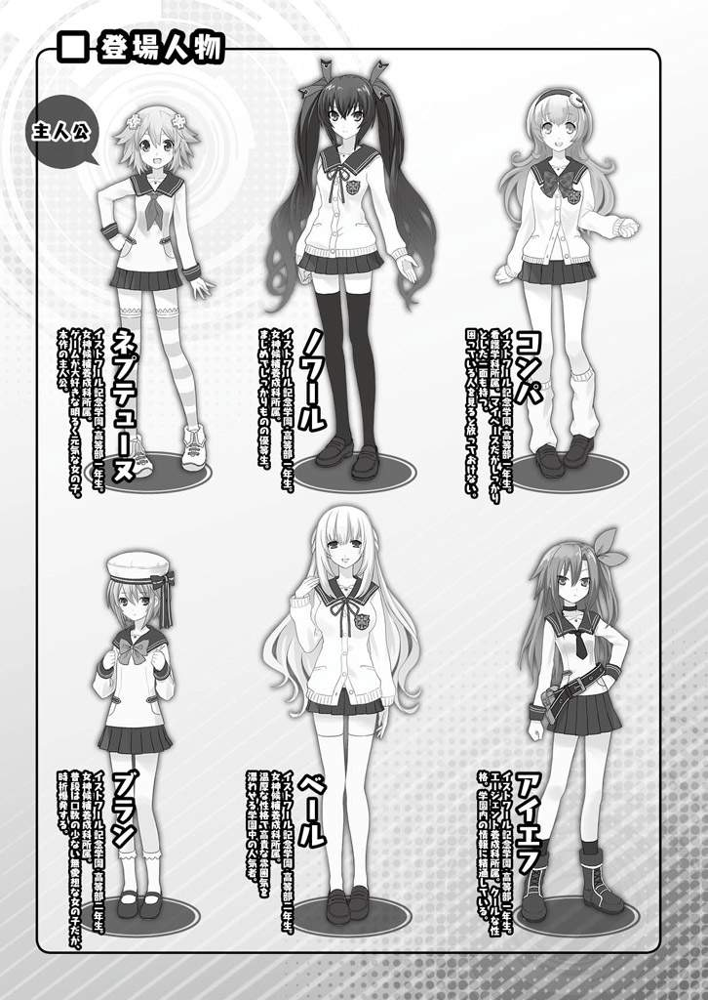
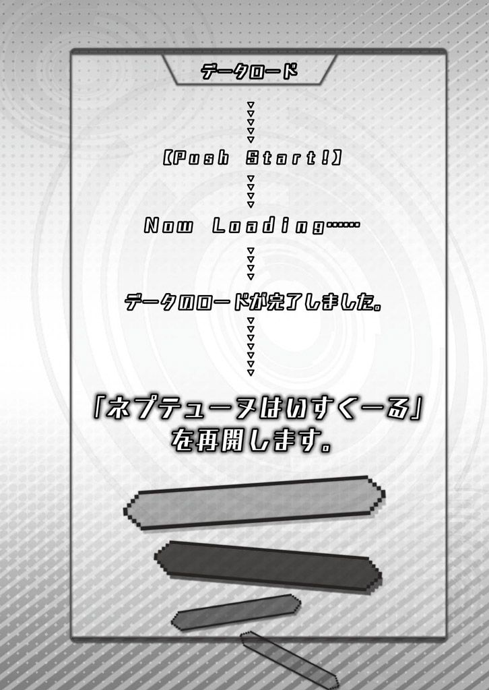
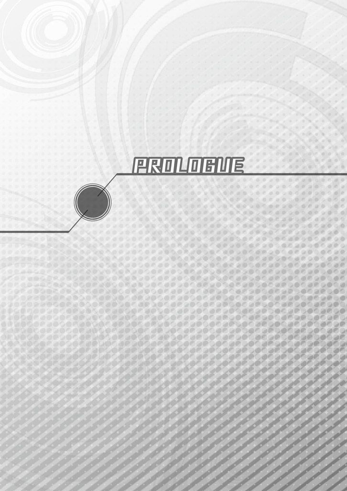
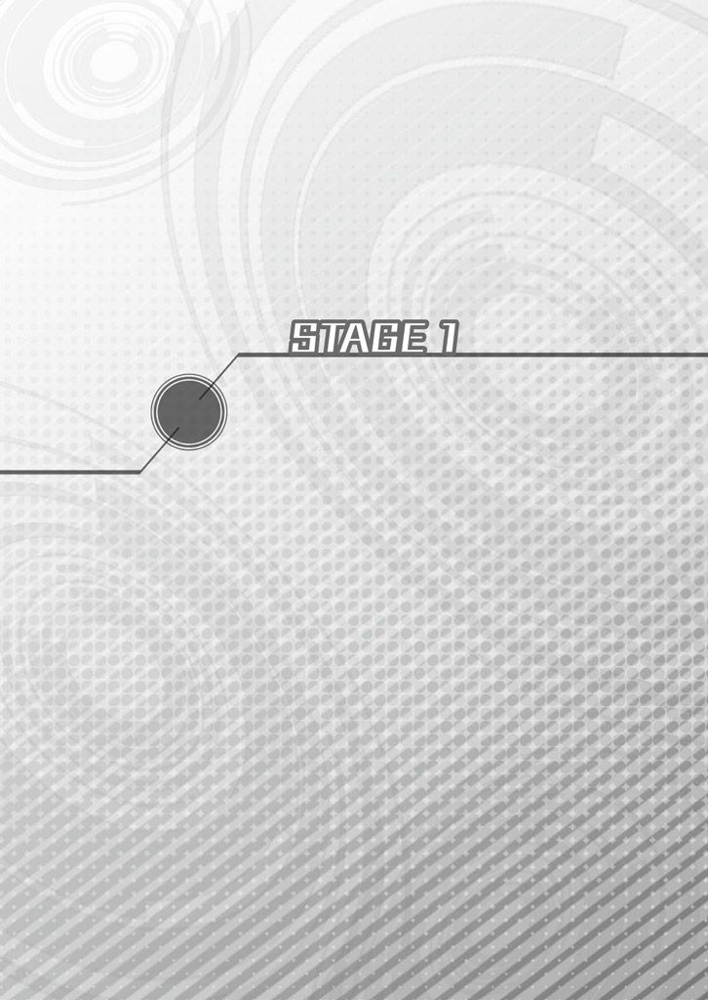
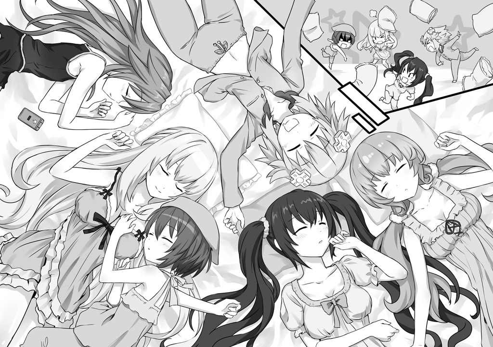
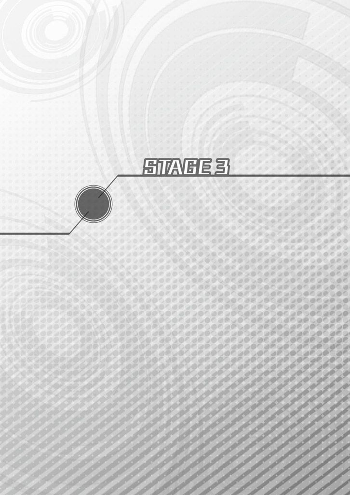
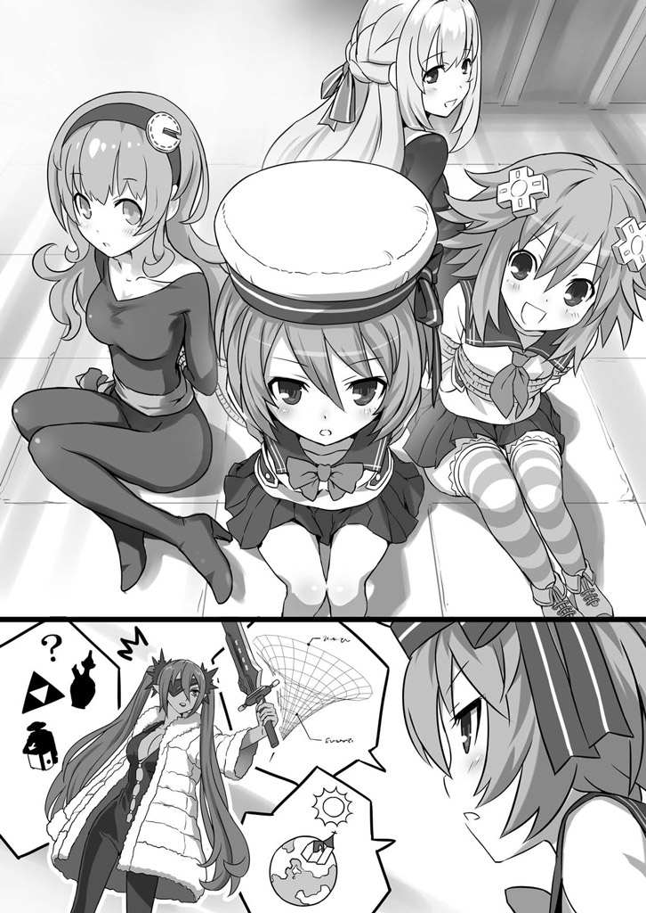
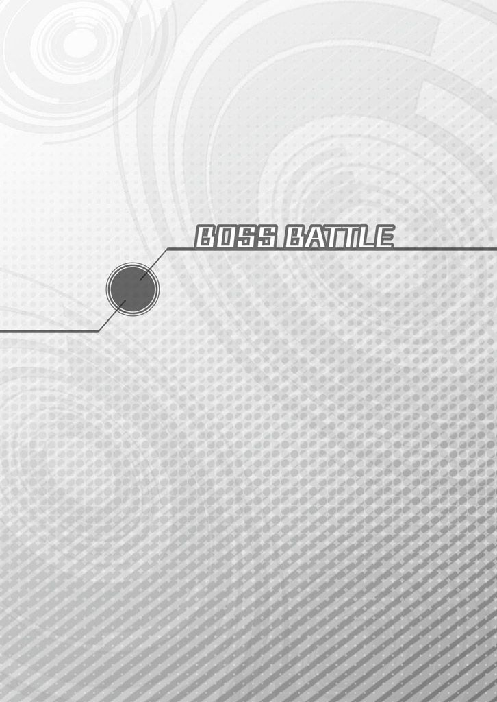
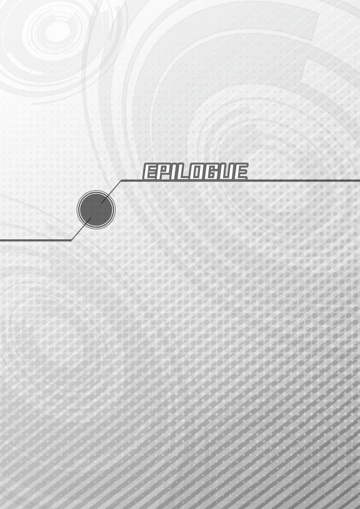

| 桜ノ杜ぶんこ 超次元ゲイム ネプテューヌ はいすくーる2 | |
| おかず | |
| (2012) | |
桜ノ杜ぶんこ
超次元ゲイム ネプテューヌ はいすくーる２
おかず



「わたしもさ、前 からちょっと学校 って所 には興味 あったんだぁ。こんぱ、毎日 楽しそうに通ってたしさ。ね？ どう？ この作戦 は」
「もし、ねぷねぷと一緒 に同 じ学校 に通えるなら......嬉 しいです。すごく、すごく嬉 しいです！」
「じゃあ決 まり！ わたしも一緒 に、学校 行 く！」
みんな、こんにちは！
わたし、ネプテューヌ。どこにでもいる普通 の美少女 。趣味 は、ゲームかな。特技 は、変身 ！
ある日 わたしは、親友 のこんぱと一緒 の学校 に行 くために、「イストワール記念学園」の一芸 入試 にチャレンジすることになったの。
何 と、その一芸 入試 に合格 すれば、学費 は全額 無料 ！ しかも自分 がパートナーとして選 んだ子 の学費 は半額 になるという超 大盤振 る舞 い。
ところが！
「このっ！ 生意気 に私 の攻撃 についてくるっていうの！」
「こっちも、友達 との大事 な約束 が懸 かってるの！ 悪 いけど、手 は抜 けない！」
その一芸 入試 で特技 の「変身 」を見 てもらったら、びっくり仰天 。わたしと同 じように変身 できるノワールって子 と、いきなり戦 わされることになっちゃったんだ。
だけど、こんぱと同 じ学校 に通 うため、全力 で戦 い抜 いたわたしは、見事 に一芸 入試 を突破 して、イストワール記念学園の高等部 の女神 候補 養成 科 に入学 することができたよ！
「へ～、ずいぶん詳 しいんだ。週刊誌 とかの〝事情通 〟みたい！ ......えーっと」
「アイエフ。私 の名前 」
「あいえふ、かぁ。じゃあ、あいちゃんだね」
入学 してすぐに、新 しいお友達 もできた。わたし、学校 に入 るまではこんぱと二人 だけの生活 だったから、すっごい嬉 しかったな。
そうそう、わたしたちが入学 したイストワール記念学園は、この世界 を見守 る偉 ーい神様 たちを補佐 する司書 、イストワールの名前 をいただいちゃった、超巨大 学園だったの。
学園に通 う学生 は全部 で数千人 ！
わたしたちも含 めて、学生 はみんな、それぞれ自分 たちの出身地 の名前 がついた、「プラネテューヌ」、「ラステイション」、「リーンボックス」、「ルウィー」の四つの学生寮 で生活 しながら、色 んなことを勉強 するんだって。
早速 、あいちゃんっていう新 しいお友達 ＆ルームメイトもできたり、一芸 入試 で戦 ったのがきっかけで、わたしにライバル意識 むき出 しのノワールと再会 したりで、楽しいハイスクールライフの始 まり始 まり......のはずだったんだけど......。
全校 生徒 が参加 するスポーツ大会 の競技 、「ハイパーオリエンテーリング」に出場 したわたしとこんぱは、なんとそこで巨大 な岩のモンスターに襲 われちゃったんだ！ 学校 行事 でモンスター退治 しなきゃいけないなんて、聞 いてないよ！
「石 ころごときにわたくしの華麗 な技 を披露 するのは勿体 ないですけれど......ここは、おとなしく果 てていただきますわ！」
「もう少 しで二連覇 ......次 に出 す超豪華 仕様 の同人誌 印刷代 を出 してもらえるはずだったのに......ぶっ潰 す！」
でもでも、そこで知 り合 った上級生 の二人、とってもゴージャスでセレブなお嬢様 のベールと、普段 はおとなしいけどプッツンとキレちゃうと手 が付 けられないっていう、ちょっとぶっ飛 んだ性格 のブランの協力 もあって、何 とかこのピンチを切 り抜 けられたんだ。
「よく聞 いてくださいネプテューヌさん。今 、マジェコンヌ学長 は、悪 しき力 にその心 を支配 されてしまっています」
「ハイパーオリエンテーリングのモンスター騒 ぎ......あれは、学長 が仕組 んだことなんですか？」
と、そこで明 らかになる衝撃 の事実 ！
なななんと！ こことは別 の世界 から精神 だけの存在 になって、こちらの世界 にやってきた悪 い大 魔女 が、学長 さんの意識 を乗 っ取 ってわたしたちの命 を狙 っているんだって！ わたしたちが、世界 の平和 を守 る女神 様 になるための勉強 をする「女神 候補 養成 科 」の生徒 だかららしいんだけど......ぶっちゃけ、理不尽 すぎ！
学園の外れにある古 びた教会 で出会 った、不思議 な妖精 のような女 の子 、いーすんから、学長 さんに取 り憑 いた大 魔女 をやっつけて学園の平和 を取 り戻 すように依頼 されたわたしたち。
そういうことなら、いっちょやってやりますか！
いざ、大 魔女 マジェコンヌとの決戦 だー！
「どうもこうも、お前 たちが最初 っから私 の術中 だったってことさ。......このもうひとつの魔導 具 『グラレッカの杖 』のね！」
「何なの......よ......これは......」
「体 が......固 まって......動 きませんわ」
学園祭 に遊 びに来 ていた人 たちの生体 エネルギーを奪 って、手下 を生 み出 そうとしていたマジェコンヌと激闘 を繰 り広 げるわたしたち。
だけど、マジェコンヌの罠 にはまって絶体絶命 。超 ヤバイんですけど！
「......わたしは、あなた。あなたは、わたし。ただし、別 の世界 のね。今 、あなたは、わたしと記憶 を共有 している」
「でも、良 かったわ。いーすんを通 じて、あなたにわたしの一部 を預 けられた」
そんな危機 を救 ってくれたのは、なな何 と！ これまた衝撃的 なことに、もうひとりのわたしだったんだ！
それも、別 の世界 でホンモノの女神 ・パープルハートをやっていて、そっちの世界 を救 っちゃったっていう、超 強 くて、めっちゃカッコいいわたし。
いーすんが、わたしに預 けてくれた剣を通 じて力 を貸 してくれたパープルハートのおかげで、ついにわたしたちは大 魔女 マジェコンヌの意識 をぶっ飛 ばして、学長 さんを元 に戻 すことに成功 した！ うおー、やったね！
その功績 が認 められて、表彰状 までもらっちゃったわたしたち。わたし、賞状 なんてもらったの生 まれて初 めてだったから、すっごい嬉 しかったなぁ。
「さ、行 こ。わたしたちの青春学園ライフ、まだまだ始 まったばかりだよ！」
「はいです！」
こうして、入学 直後 からイベント盛 りだくさんすぎる、わたしのハイスクールライフは幕 を開けたのでした。
さーて、これからどんなことが待 ってるのかなー。楽しみすぎるー！

驚 きのフルＨＤ３００インチ！
映画館 かっていうでーっかいスクリーンの中 に、わたしが映 っていた。しかも変身 して。うーん、我 ながら凛々 しい。そしてカッコいい！
ただ、よーく注意 してみると、そこに映 ってる「わたし」は実写 じゃなくて、すごく丁寧 にモデリングされたＣＧだってことがわかる。
ここは、わたしが通 うイストワール記念学園にある視聴覚室 。
普段 は、社会 の授業 なんかで見 るビデオ教材 を映 すそのスクリーンの中 で、ＣＧモデルのわたしは、四角 いマス目 で区切 られている床 の上 を飛 んだり跳 ねたりせわしない。
「うわ、スゴイね。ちょっと気持 ち悪 いぐらい」
前 から段々 になっていて、これも何か映画館 っぽい感 じになっている座席 の真 ん中 ら辺 に座 ったわたしは、そのＣＧモデルになった自分 を見 ながら、隣 に座 っているノワールに声 をかけた。
「最近 は、学生 レベルでもこんなクオリティーの物 が作 れるのね」
スクリーンを見 つめたまま答 えたノワールも、その出来映 えに目 を丸 くしてる。
と、
「では、同 じようにデータ収集 に協力 していただいた、ノワールさん、ベールさん、ブランさんのＣＧモデルも表示 してみます」
スクリーンのすぐ側 に立 っていたひとりの男子 生徒 が、小 さなノートパソコンを片手 に言 ったかと思 うと、画面 の中 のわたしを取 り囲 むようにパッパッパッと別 のモデルが表示 された。
男子 生徒 くんの言 うように、それぞれ変身 したノワール、ベール、ブランのＣＧ。
三人とも、最初 に表示 されていたわたしと同 じくらい本物 そっくりに良 くできてて、これまたびっくり。
「まぁ素敵 。わたくしの美 しさが、完璧 に再現 されていますわね」
「髪 の毛 、一本ずつモデリングされてるわ」
わたしと並 んで座 っていたベールとブランからも驚 きの声 。
視聴覚室 のあっちこっちにばらけて座 っている他 の生徒 たち─ みんな、女神 候補 養成 科 の子 たちだよ─ も口々 に「すごいねー」と感想 を言 い合 ってる。
「もちろん、このシミュレーターの売 りはＣＧモデルの精密 さだけではありません。......先生 、よろしいですか？」
一旦 、視聴覚室 のザワザワがおさまるのを待 ってから、男子 生徒 くんは一番前 の席 で腕 を組 んでいる金髪 ロン毛 の先生 に確認 するように言 った。
わたしたち女神 候補 養成 科 の大事 な授業 のひとつ、『モンスターや悪 いヤツを退治 してみんなを守 るための戦闘 訓練 』を担当 してる先生 だよ。
何 でも、昔 は〝伝説 の狼 〟なんて呼 ばれた有名 な格闘家 で、同 じく格闘家 だった自分 の弟 と、友達 のキックボクサーと一緒 に、南 の方 にある街 を支配 していた悪者 をこてんぱんにやっつけちゃったことがあるとかないとか。
気さくでさっぱりした性格 の先生 で、
「ＯＫ、進 めてくれ」
今 も、ちょっと緊張 気味 の男子 生徒 くんをリラックスさせるように、明 るい声 で言 った。
うなずいた男子 生徒 くんが、手元 のノートパソコンを操作 すると、また画面 が切 り替 わる。
ベールとブランのＣＧが消 えて、わたしとノワールだけがスクリーンの中 で３Ｄ格闘 ゲームみたいに向 かい合 った。
すると、ＣＧのわたしは、いきなり強烈 な後 ろ回 し蹴 りでＣＧノワールを攻撃 ！
鮮 やかに放 たれたキックが、ＣＧノワールの胸元 にクリーンヒット......する直前 に、さっとそれを避 けたＣＧノワールは、伸 びたわたしの足 をチョップではたき落 としたかと思 うと、そのまま一気に間合 いを詰 めてわたしの顔面 にパンチ一発 ！ 食 らったわたしのＣＧはスゴイ勢 いで後 ろに吹 っ飛 ばされてしまった。
「ちょっとー！ 何 でわたしがやられ役 なのさ！」
この扱 いに、リアルわたしは立 ち上 がって猛抗議 。隣 では、リアルノワールが満足 そうに何度 もうなずいている。むきー！
「え、えーとそれはその......。先日 収集 させてもらったデータからのシミュレーションの結果 でして。つ、つまりネプテューヌさんは戦闘 においていきなり大技 を繰 り出 す傾向 が高 いということの表 れです」
「当 たらなかったら意味 ないでしょ！ 当 てさせて！ ビシッとカッコよく！」
「落 ち着 けっての。さっきの回 し蹴 りをうまくヒットさせるためには、どうすればいいかってのを検証 すんのが、このシミュレーターの使 い道 だろうが。ちょうどいい、そのまま答 えてみろ。ちゃんとノワールに回 し蹴 りを当 てるにはどうする？」
振 り返 った先生 が、ヒートアップするわたしをなだめながら言 った。
「え、ええっと......あ、そうだ。最初 にフェイントを入 れる！ 蹴 ると見 せかけて蹴 らない！」
いきなりの授業 っぽい流 れ（いやまあ、授業 なんだけどさ）に、ややうろたえつつも、わたしは胸 を張 って答 えた。
「なるほどな。ようし、じゃあ試 してみるか。頼 むわ」
「あ、はい」
先生 の指示 を受 けて、また男子 生徒 くんがノートパソコンを操作 する。
「先生 の仰 るように、このシミュレーターではデータを追加 入力 することで様々 な状況 を視覚的 に再現 できます。今回 は、フェイントを入 れるという考 え方 をＣＧモデルを動 かすプログラムに指示 しますが、例 えば天候 や地形 情報 などを変更 することも可能 です」
操作 しながらも、解説 は忘 れない。
「模擬 戦 などの実習 データを基 に、色々 な条件 を付 け加 えてシミュレーションを行 うことで、ビデオに録画 したものを確認 する以上 に各自 の欠点 や、今後 の課題 などが見 えてくると思 います」
また、スクリーンの中 でＣＧモデルが動 き出 した。
今度 のわたしは、さっきまでとは一味違 うって感 じで、最初 に細 かく左右 に体 を振 りながらノワールに近 づいていき、いきなり回 し蹴 りを狙 わずに何度 か足 を上 げる仕草 だけを見 せたり、格闘 ゲームで言うなら弱 パンチをぴしぴし繰 り出 して様子 をうかがったり。
お、これは中々 いいんじゃないの？
細 かい弱 パンチを顔の高 さに散 らしたかと思 うと、不意 に狙 いを変 えてパンチをボディーに。すぐに反応 したノワールが、ガードを下げてそれをブロック。
「今 だぁ！ 上 がお留守 だよ！」
わたしが、スクリーンを指 さして叫 ぶと同時 に、ＣＧのわたしも今度 こそとばかりにもう一度 後 ろ回 し蹴 り！ これはもらったでしょ！
......と、思 いきや、
「見 え見 えよ。しゃがんでかわしてから反撃 ね」
お澄 まし顔 でノワールが言 ったとおり、ＣＧノワールは回 し蹴 りをシュッと素早 くしゃがんで避 けてから、片 足立 ちになっちゃってるわたしの足下 にしゃがみ強 キック一発 。
食 らったＣＧのわたしは、かっこ悪 くすってんころり。
「何 でよー！ 今 のは当 たらなきゃダメでしょ！」
「さすが、私 。シミュレーションでも完璧 だわ」
視聴覚室 に、わたしとノワールの声 がクロスして響 いた。
「フェイントっていう答 えは悪 くなかったが、逆 にそれを読 まれると一気に不利 になる。ネプテューヌの行動 は、読 みやすいってことだ。今 のはその良い例だな」
「この結果 から、ネプテューヌさんの課題 が見 えたということが言 えるわけです。シミュレーターの有用性 が少 しわかっていただけたと思 います」
ちょっと、ちょっと！ 先生 も男子 生徒 くんも、何そこでまとめに入 っちゃってんの！
ダメダメ、認 めないからねこんな結果 は！
「素手 ！ 素手 だったのがいけないんだよ！ 武器 が使 えれば違 うって！ ねー、もう一回、もう一回やってよー」
「見苦 しいわよネプテューヌ。何度 やっても結果 は同 じ。おとなしく負 けを認 めなさい」
「ノワールは黙 ってて！ ......あ、あとこんな形 が決 まってるやり方 も良 くない！ ちゃんと実戦 っぽくしなきゃ、わたしの本当 の実力 は発揮 できないんですー！ そーいうモードに切 り替 えてやってよ」
「ねぷねぷ、さすがにそれは少 し......」
「......無理 があるわ」
な、何さ何さーみんなして！
絶対 ダメー！ このまま、わたしの無様 な姿 がみんなの心 に残 っちゃったまま授業 終了 とかあり得 ないもん。
なんたってわたし、学園の危機 を救 ったヒロインなんだからね。ヒロインは、常 にカッコよくなきゃダメなんだよ！
「えーい！ 文句 があるなら、ベールもブランもまとめてかかってこーい！ 三対一の変則 マッチで、わたしがシミュレーションでもサイキョーってことをばっちりみんなに証明 してあげるんだからね！」
「後悔 するわよ」
「そこまで言 われると、わたくしとしても引き下がれませんわ。上級生 としてのプライドがありますもの」
「ここはきっちり、学年 首席 の実力 を思 い知 らせてあげなきゃいけないみたいね」
「余裕 こいてられるのも今 のうちだよーだ！ これでわたしが勝 ったら、三人には、一日ずつ日替 わりでおやつ奢 ってもらうからね！」
「その言葉 、そっくりそのままお返 しするわよ。私 たちが勝 ったら、ネプテューヌがおやつ奢 ることになるんだからね！」
「いいよ、いいよーだ。わたし、負 けないもん！ ......というわけで先生 ！ リベンジマッチの許可 を！」
闘志 の炎 を目 に燃 やし、わたしはダーンと机 から身 を乗 り出 して先生 に言 った。
「......い、いいんでしょうか？」
男子 生徒 くんが、オロオロした様子 でわたしと先生 とを交互 に見 る。
先生 は、ちらっと自分 の腕時計 に目 をやってから、
「......ま、もう授業 も終 わりだし、いいんじゃねえか？ もう少 しこのシミュレーターの性能 を見 てみたいしな。ほい、じゃあ全員 教科書 しまっていいぞー。俺 は、そこまで言 い切 ったネプテューヌに賭 けてやるぞ」
白 い歯 を見 せて笑 いながら言 った。さすが！ 話 がわかる！
授業 に出 ていた他 の子 たちも、思 わぬイベント発生 にわっと盛 り上 がった。
「そ、それでは舞台 を地上 、障害物 無 し、全員 【武器 を使用 する】に設定 してシミュレーションしてみます」
ようし、これで舞台 は整 った。いざ勝負 だよ！
──数分後
「だいたいわかったぜ。いい性能 だこいつは。電算 同好会 だったか？ 次 の職員 会議 で、教材 に採用 するように提案 しておくからよ」
「はい！ ありがとうございます！」
授業 終了 を知 らせるチャイムが鳴 る中 、ご機嫌 な様子 で男子 生徒 くんの肩 を叩 いて笑 う先生 とは対照的 に、
「私 、シフォンケーキね」
「新発売 の、ネギ肉 まんがいいわ」
「わたくしは、いつもねぷねぷが美味 しいと言 っているプリンを食 べてみたいですわ」
「ねぷっ！ 聞 こえない！ あーもう全 っ然 聞 こえませーん！ わーわーわー！」
スクリーンの中 でスカポカにやられてひっくり返 るＣＧモデルを呆然 と見 つめながら、わたしはそっと現実 にフタをして目 を背 けることになったのでした......。

Ⅰ
『みんなこんにちはー。 今日 は 何 だか 朝 から 妙 に 暑 かったけど、 誰 も 体調 を 崩 したりしてないかな？ ボクは、四時限目が 体育 だったんだけど、 第三 体育館 のエアコンが 壊 れちゃってて、 今 も 汗 がひかないよー。でも、 今日 もみんなのランチタイムが 少 しでも楽しくなるように 頑張 って 放送 するよ。それじゃ、 今日 最初 の 曲 いってみよー』
お 昼時 、 学食 の 入 りは四割ぐらいって 感 じで 結構 空 いてる 席 が 目立 っていた。
よくアニメなんかだと「 昼休 みは 戦争 ！」「 焼 きそばパンは 限定 十個！」みたいなシーンがあるけど、ウチの 学校 ことイストワール記念学園はその 辺 かなり 平和 。
何 せご 飯 食 べる 所 だけでも、この 学食 も 含 めて 敷地内 に十箇所はあるからね。 寮 でお 弁当 作 ってもらえるサービスもあったりするから、けっこう 人 があっちこっちに 分散 しちゃうみたい。
加 えて 今日 は、こんぱのいる 看護 学科 と 普通科 の 一部 の 生徒 が「 職業 体験 」とかで 学校 の外に 出 て 行 っちゃってるので、 余計 に 人 が 少 ない。スピーカーから 流 れてくる、お 昼 の 校内 放送 が 良 く 聞 こえること。
でも、 今 のわたしにとっては 校内 放送 に 耳 を 傾 けるよりも、ほかほかと 湯気 を 立 てるハンバーグとエビフライとチキンソテー 盛 り 合 わせランチ（ご 飯 特盛 り）を、ソースの 一滴 まできれいに 食 べる 方 が 大事 。
「ご 飯 のお 代 わり 取 ってくる！」
エビフライ 二匹 とハンバーグ 半分 を 残 してご 飯 の 第一陣 が 尽 き、わたしは 勢 いよく 席 を 立 った。
「ちょっとちょっと！ そんなに 無茶 な 食 べ 方 したらお 腹 壊 すわよ！」
「 次 の 授業 、まともに 聞 けなくなるわ」
そんなわたしを 見 て、 向 かいの 席 に 座 ったノワールとブランが 慌 てて 止 めようとするものの、 今 のわたしは 輝 くスターを 握 りしめて 突 っ 走 るヒゲのおじさまと 一緒 なのだ！ 誰 にも 止 められないんだからね！ ねぷォン！
我 ながら 謎 の 効果音 とともに二人の 制止 を 振 り 切 って二杯目の 特盛 りご 飯 を 手 に 戻 ってきたわたしは、すぐさまお 食事 再開 。
「また 凄 い 量 を......あのねぇ、ほどほどにしとかないと 豚 さんになっちゃうんだから」
「... 見 ているだけで 胸焼 けがする」
「 何 とでも 言 って。 電算 同好会 だか 何 だか 知 らないけど、あんな 良 く 分 かんない 人 たちが 作 ったもののおかげで、わたし 今日 のおやつ 抜 きなんだから。ここでしっかり 食 べておかないと、 晩 ご 飯 までもたないんですー！」
数十分前に 味 わったあの 耐 えがたい 屈辱 をも 調味料 に 変 え、わたしはひたすらナイフとフォークを 動 かし 続 ける。
「とってもわかりやすかったじゃない。 私 の 方 が、ネプテューヌよりも 強 い。......これ 以上 無 いわかりやすさだわ」
と、ノワール。
ちなみにノワールたちはもう、パスタとサンドイッチみたいなので 昼食 は 軽 ～くお 済 ませでいらっしゃる 感 じ。 今 は 食後 のお 茶 としゃれ 込 んでいる。
そりゃそうだよね。 放課後 には、わたしの 奢 りで 美味 しいスイーツが 待 ってるんだもの。
「あんな、ゲームみたいなもの、何の 参考 にもなんないよーだ。いきなり 先生 に『 授業 に 使 ってくれー』なんて 売 り 込 みに 来 てさ、わたしだけ 必殺技 はシミュレーションできませんってのはおかしいでしょ」
最後 に 残 ったエビの 尻尾 も 残 さずお 腹 におさめて、わたしは 言 った。
「ネプテューンブレイクさえ 決 まってたら 勝 てたのに、どうして 使 わないのよ！ 欠陥品 だよあのシミュレーター！」
「それは、 当 たり 前 よ」
うぐ、 相変 わらずブランちゃんは 冷静 ですこと。
「 当 たり 前 ってどういうことよー。ブランだって、わたしがマジェコンヌをやっつけたの 見 たでしょ？ 異世界 の 大 魔女 もノックアウトの 必殺技 だよ？ 普通 は、ちゃんと 実装 しとくもんじゃない？」
「ネプテューヌが、ネプテューンブレイクを 使 えたのは 後 にも 先 にもあの 時 の 一度 だけ。データ 不足 だって、 電算 同好会 も 言 ってたわ」
「で、でもさぁ......」
「...データの 無 いものは、シミュレーションできない」
わたしが 口 を開いたそばからバッサリ、 一太刀 。 容赦 なし。
「 悔 しかったら、いつでもあの 技 を 使 えるようになることね」
おまけとばかり、ブランの 言葉 でざっくりと 開 いたわたしの 心 の 傷口 にノワールも 意地 悪 くやたらとしみる 塩水 をひっかけてくる。
「わ、わかってるよー。でも......あれから 何度 戦闘 訓練 の 授業 でチャレンジしても、うまくいかないんだもん」
これ 以上 追 い 詰 められちゃうと、ガラス 細工 でできたお花のように 繊細 なハートが 粉々 になっちゃうのを 感 じたわたし。
空 になった 食器 を 脇 によけ、 机 の 上 に 突 っ 伏 して 降参 のポーズ。......この 体勢 だとかなりお 腹 が 苦 しいという 事実 には、 目 をつぶりつつ。
「わかってるなら、 潔 くしなさい。 自分 で 言 い 出 したことなんだから。......んもう、あなたのグチ 聞 かされて、 見 たくもないやけ 食 い 見 せられるんだったら、もうお 昼 付 き 合 ってあげないわよ。 次 は 私 もベールと 一緒 に 逃 げちゃうから」
ごろんと 目 の 前 に 転 がっているだろうわたしの 頭 に 手 を 伸 ばしてきたノワールが、コントローラの 操作 ボタンに 似 せたわたしの 髪飾 りをぐりぐりと 操作 しながら 言 った。
あーそうだった。 一応 、ベールがいない 理由 を 説明 しとかないとかな。
ベールってば、ノワールが「 逃 げた」って 言 うように、お 昼前 の 授業 が 終 わったらさっさと 教室 を 出 て 行 っちゃったの。
その 理由 がまた 凄 くて、
「 今日 は、 寮 のお 部屋 を 改装 するために 業者 の方が下見にいらっしゃいますの。 夜 は 時間 が 取 れないのでお 昼 のうちに 済 ませようと 思 いまして。 申 し 訳 ありませんが、ランチはまた 今度 誘 ってくださいね」
......だって。
用 があるならそりゃしょうがないけどさ、 寮 の 部屋 って 生徒 個人 で 勝手 に 改装 したりしてもいいわけ？ なんていうツッコミは、ベールに関しては 意味 無 いみたい。
ちなみに、こんぱはさっきも 言 ったように 今日 は 職業 実習 ってことで、 朝 から「プラネテューヌ総合病院」っていうでっかい 病院 に 行 ってる。
あいちゃんは...... 例 によって 何 だか 色々 調 べ 物 させられてるみたいで、一時限目の 全科 共通 の 授業 が 終 わってから、 今日 は 姿 を 見 てない。
そういうことで、 今日 のお 昼 はノワールとブランとわたしの三人だけというわけ。
あーあ、あんな 恥 ずかしい 目 に 遭 って 女神 候補 科 のみんなに 笑 いものにされるんだったら、わたしも 職業 実習 でも 調 べ 物 でもそっち 行 きたかったよ。
何 てことを 考 えつつ、ノワールに 髪飾 りをいじられつつ、 食堂 の 壁 にかかった 時計 を 見 ると 昼休 み 終了 までにはまだ 時間 があった。
ただ、ちょっと 中途半端 。 腹 ごなしにグラウンドに 出 てって 超 次元 なサッカーでもしよっかなーというには、 足 りないぐらい。
となると、このもんにょりした 気分 を 一新 するにはやっぱりゲームで 遊 ぶのが 一番 かなーって 考 えにたどり 着 くのはわたし 的 に 当然 の 流 れなんだけど、
「...... 何 で 今日 に 限 ってＮギア 持 ってないかなー」
自分 のうっかり 加減 にガックリきつつ、わたしは 頭 をかいた。 普段 は 肌身 離 さず 持 っているご 愛用 の 携帯 ゲーム機を、 今日 に 限 って 寮 のお 部屋 に 忘 れてきちゃったんだ。
何 て 言 うのこういう 状況 ？ 泣 きっ 面 にドン 蜂 ？
まぁとにかく、いざやりたいことが 出来 ないとなると、 余計 にフラストレーションは 溜 まるもので、
「あうう......」
髪 にまとわりつくノワールの 手 を「てい！」と 払 いのけて 体 を起こしたわたしは、 自分 のうかつさを 呪 いながら、 携帯 ゲーム機のしっとり 落 ち 着 く 手触 りを 思 い 出 し、いごいごと 指 だけ 動 かして〝エアゲーム〟をし 始 める。
と、そんなわたしのグダグダっぷりにはもはや 興味 無 しといった 感 じのブランが、何やらポーチの 中 をごそごそと 探 し 始 める。
見 れば、ポーチから 取 り 出 してテーブルの 上 に 置 いたのは、わたしのとは 違 う 機種 の 携帯 ゲーム機！ アレだよアレ、ほら、二つのスクリーンがあってぽこんと 折 り 畳 めてタッチペンで 操作 できるアレ。
分 かりやすく 挿絵 でＧＯ！ ってしたいところだけど、アップにするとどう 描 いても 割 とそのものズバリな 形 にしかならないおかげで 色々 難 しいことになっちゃうので、そこは 想像力 で 何 とかしてね。
「ちょっとー、ブラン。わたしがゲームできないからって、そんな 見 せつけるように 遊 ばなくてもいいんじゃない？」
ともかく、あまりのタイミングにわたしが 抗議 すると、
「 別 にゲームで 遊 ぶわけじゃないわ」
ぷーっと 口 を 尖 らせるわたしを 一瞬 だけチラ 見 して、ブランは少し 心外 そうに 言 った。
遊 ぶわけじゃないって、ゲーム機 出 してゲームしないで何するって 言 うつもりなのよ。
気になったわたしが 椅子 から 立 ち 上 がって 画面 を 覗 こうとすると、
「み、 見 ないで......」
ぱたんと 機械 を二つ折りに 閉 じちゃったブランは、 餌 を 横取 りされないように 威嚇 してくるわんこのような 目 でわたしを 睨 んできた。
「えーなんでー。楽しいゲームを 独 り 占 めは 良 くないぞ！」
と、わたし。
「だから、 遊 んでないわ。 手紙 を 書 いてる」
ブランは、 小 さく 首 を 振 って 言 った。
「 手紙 ？ そうね、 今 はゲーム機でもメールができるものね」
更 にそこへノワールが 口 を 挟 んでくる。わたしはと 言 えば、「 手紙 」と 聞 いて 興味津々 度 の 対象 がチェンジオーバー。
「 誰 に？ 誰 に 書 いてるの？ ねぇねぇ！」
といや、とテーブルを 回 り 込 んでブランの 首筋 に 抱 きついての 質問攻 め。ぱんぱんになってるお 腹 の 重 みも 何 のその。
しばらくの間、わたしに 揺 さぶられるままグラングランしてたブランだったんだけど、そのうち「ふーっ」とため 息 をついて、
「ネプテューヌのそういうところ... 妹 の一人によく 似 てるわ」
諦 めたように 畳 んだゲーム機をまた 開 いて、わたしとノワールに 見 えるように 差 し 出 してきた。ふふん、わたしの 駄々 っ 子 作戦 成功 ！ ......って、妹!?
「ブラン、 妹 いるの？」
「二人いるわ。 双子 なの。 離 れて 暮 らしてるから、たまにこうして...ゲーム機の 機能 を 使 って 交換 絵日記 を 書 く...」
言 いながら、ブランはゲーム機の 画面 をぽちぽち 操作 して 見 せてくれた。
すると、 過去 にブランが 妹 ちゃんたちと 交換 した 絵日記 がいっぱい。
「ふふ、さすがにブランが 書 いたやつはすぐに 分 かるわね」
わたしと 一緒 に 画面 をのぞいていたノワールが、 笑 って 言 った。
「そーだね。さすがにお 姉 ちゃん、絵が 上手 」
「ちょっとクセがあるけどね」
というか、 妹 ちゃんたちの『 作品 』が、 割 とどれも「 芸術 はバクハツしてナンボ！」 的 方面 に 吹 っ 飛 んじゃってるってのもあるんだけど。もしかして、 結構 年下 の 妹 なのかな？
そこまで、 考 えてふと 思 いつく。
「......そう 言 えば、ノワールにはお 姉 ちゃんとか 妹 ちゃんとかとかいないの？」
で、 思 いついたことをそのまま 聞 いてみると、
「 私 ？ いるわよ、 私 にも 妹 が一人。ユニって 名前 なんだけど」
ぴっと 人差 し 指 を 立 ててノワールは 答 えた。
「ユニちゃんか......。ノワールもメールとかするの？」
重 ねて 質問 するわたしに、ノワールは 立 てた 指 をぴとっとあごの下に 当 てて、
「ま、たまにね。あのね、うちの 妹 もブランの 妹 たちも、ここからずーっと 離 れた海の 近 くにある、イストワール記念学園の 分校 にいるのよ」
何故 だか、ちょっと 寂 しそうな顔で 言 う。
と、その 時 だった。
不意 に、わたしの 胸 の 奥 が 少 しチクっとした......ような気がした。
（あれ？）
思 わず、 手 で 胸 を 押 さえるわたし。何だろこれ、 変 なの。
「ネプテューヌ？ どうかしたの？」
その 様子 を 見 たノワールが、わたしの顔をのぞきこんでくる。わたしは 慌 てて、
「え？ あ、イヤ 別 に 何 でもないよー。ほんと、ほんと」
ノワールたちに 余計 な 心配 させないよう、顔の 前 で 手 を 振 りふり。
「だったら、いいんだけど」
「いいよ、いいよ。 全然 いい」
「...きっと、 食 べ 過 ぎね。お 腹 の 薬 なら 持 ってるけど、 使 う？」
いやいや、チクっとしたのはお 腹 じゃないから。や、ほんとに 何 でもないの。気のせい気のせい。
変 に 心配 されちゃうのもアレだし、ここはひとつ 話題 を 変 えないと......。
ゲーム機の 入 っていたポーチをまたゴソゴソとまさぐり 始 めたブランを 止 めながら、あたふたと 考 えていると、
「あー、いたいた。こっちの 学食 にいたのね、 探 しちゃったわよ」
まったくもって、どうしていつも 絶妙 のタイミングで 現 れてくれるのかしら。もしかして......ううん、もしかしなくてもわたしのこと好き？ そうなの？
「いつもニコニコ、わたしの 背後 に 這 い 寄 るあいちゃん！」
天 の 助 けか、 女神 の 祝福 か。いつも 聞 き 慣 れたその 声 のご 登場 に、わたしはくるりと 後 ろを 振 り 向 いて 両 手 の 指 をぴっと 声 の 主 ─ もちろん、あいちゃん ─ に 向 けた。
「 指 ささないで。あと、 這 い 寄 ってない。それにそのフレーズは、 私 の 第六感 が何かアブナイって 警告 するから 以後 控 えなさい」
あ、はい......。
すうっと 伸 びてきたあいちゃんの 指 が、わたしの 唇 をぷにっと 押 さえる。じっと 見据 える 目 がマジだった。
「 何 の 話 をしてるんだか......。それより、何か 私 たちに 用 があったんじゃないの？ 探 してたって」
「あーそうだった。もう、ネプ子が 絡 むとすぐに 大事 なこと 忘 れそうになっちゃうわ。 勘弁 してよね、ほんと」
ノワールに 促 され、わたしの 唇 から 指 を 放 す 前 に 軽 くデコピンをお 見舞 いしちゃってくれながら、あいちゃんは気を 取 り 直 したように 言 った。
「 用 っていうか、ちょっとニュースを 仕入 れたからみんなにも 伝 えておこうと 思 ってね。
多分 、 明 るいニュースって 言 っていいと 思 うわよ」
「 絵日記 のネタになるニュースかどうか...それが 重要 ね」
「な、 何 で 絵日記 ？ まあ、 使 えるかどうかは 聞 いてから 判断 してくれたらいいけど......とにかく、さっき 仕入 れた 情報 によると......」
ふむふむ、 情報 によると？
わたしたちの顔をぐるっと 見渡 して 話 し 始 めたあいちゃんに 引 き 込 まれるように、わたしもノワールもブランも 身 を 乗 り 出 す。
と、
『おおっと！ 歌の 途中 だけど、みんな 聞 いて 聞 いて。 今 、プラネテューヌ総合病院で 行 われてる 職業 実習 を 取材中 の 学校 新聞 、デイリー・イストワールの 記者 さんから、この 放送室 にビッグニュースが 飛 び 込 んで 来 たよ！』
それまで、ずっと歌やトークを 流 し 続 けていた 学食 のスピーカーから、パーソナリティーの 子 の 興奮 した 声 が 響 いてきた。
それにしても、あっちもニュースでこっちもニュースなの？ 参 っちゃったな、ニュースとニュースでかぶっちゃったよ。
ちらっと 辺 りの 様子 に 目 をやると、 学食 にいる 他 の 生徒 たちも 食事 の 手 を 止 めてスピーカーの 方 に 注目 しているのがわかった。
わたしは、あいちゃんを 見 て、 振 り 向 いてスピーカーを 見 て、また 振 り 向 いてあいちゃんを 見 て......。
「ネプ子、 首 悪 くするわよ」
「だ、だってー。どっちのニュースを 先 に 聞 いたらいいのか」
「はいはい。 私 の 話 は 後 でゆっくり 聞 かせてあげるから、まずは 放送部 を 聞 いてあげたら」
「よ、よし」
あいちゃん 自身 がそう 言 うなら、というわけでわたしたちも 一旦 お 喋 りは 中断 してスピーカーから 流 れる 声 に 耳 を 傾 ける。
『ええと、それじゃあお 伝 えします！ ...... 先日 の 学園祭 前期 祭 で 魔物 に 操 られて 事件 を起こし、 高等部 女神 候補 科 一年生のネプテューヌさん 他 に 取 り 押 さえられて 以降 、 昏睡 状態 でプラネテューヌ総合病院に 入院 していたマジェコンヌ 学長 が、 意識 を 取 り 戻 したということです』
学食 のあっちこっちで、「おー」とか「へー」とか 様々 にどよめきが起こった。
わたしたちも、 思 わず顔を 見合 わせる。
『 診察 した 医師 への 取材 によると、マジェコンヌ 学長 は 事件 に関する 記憶 も 一部 残 っており、 学生 や 職員 に 対 し 謝罪 の 言葉 を 述 べているとのこと......だって。わあ、 学長 さん、 意識 が 戻 ったんだ。 本当 に 良 かったよ』
可愛 い 声 を 精一杯 真面目 モードにしてニュースを 伝 え 終 わった 後 、ほっとやり 遂 げた 感 を 滲 ませながらパーソナリティーの 子 が 言 うのに 合 わせ、わたしも 胸 の 前 で 小 さく 手 を 叩 きながらうんうんと 頷 く。
『この 様子 なら、 近 いうちにまた 学校 に 戻 ってきてくれそうだね。 悪 い 魔物 に 取 り 憑 かれちゃったなんて、 想像 しただけで 怖 いよね。 学長 さんが 戻 ってきたらみんなで温かく 迎 えてあげようね！ ......それじゃ、 次 の 曲 いくよー』
誰 だかわからないけど、 良 かったぞ 新聞部 の 記者 さんと 放送部 の 子 。 特 に、「ネプテューヌさん 他 」の 部分 。うん、 主役 が 誰 だったのかちゃんと 分 かっているようだね。
「さて、それじゃ 次 はあいちゃんのニュースを 聞 こうじゃないの」
わたしは 言 って、あいちゃんを 見 た。
すると、なぜかあいちゃんは、ほっぺをかいて 視線 をそらしてしまう。
「......どったの？ あいちゃん」
「あ、いや、そのー」
ほっぺをかきかきしたままのあいちゃん、いつものキリッとした 姿 はどっかへ 飛 んで 行 っちゃったみたいで、 恥 ずかしそうにわたしたちを 上目遣 いで 見 て 言 った。
「......さっきの 放送 で、ぜ～んぶ 先 に 言 われちゃった」
てへぺろ☆か！
Ⅱ
学長 さん......うーん、わたしももう 立派 なこの学園の 一員 だし、ちゃんと「マジェコンヌ 先生 」って 呼 ぶべきかな？
マジェコンヌ 先生 の 意識 が 戻 って、ちょっとずつでも 元気 になってるっていうニュースは、 正直 わたしをホッとさせた。
もうあれから三ヶ月も 経 つけれど、あの 事件 に 関 わった 人 たちにとって、 最後 まで気がかりだったのがマジェコンヌ 先生 のその 後 だったからね。
あの 学園祭 の 日 、わたしが、 別 の 世界 にいるもう 一人 のわたしに 力 を 貸 してもらって、マジェコンヌ 先生 に 取 り 憑 いていたもう 一人 の「 大 魔女 マジェコンヌ」 ─ あーもう、ややこしや！ ─ を 超 カッコよく 成敗 したのは、ちゃーんと 前 のお 話 を 読 んでくれてるみんなには、 今更 説明 する 必要 ないよね？
このお 話 から 読 んでくれている 新 しいお 友達 、それはそれですっごく 嬉 しいんだけど、できれば 今 すぐ 近所 の 本屋 さんに 側転 しながら 突撃 して、
「 超 次元 ゲイム ネプテューヌはいすくーるの 一巻 ください！」
って、 大 きな 声 ではっきりと 恥 ずかしがらず 堂々 とかつ 礼儀正 しく 背筋 を 伸 ばして 店員 さんに 申 し 出 てくれると、わたし 感激 だな！
あれ？ 何 の 話 してたんだっけ？
あーそうそう、マジェコンヌ 先生 のその 後 ね。
マジェコンヌ 先生 、わたしたちと 戦 い 終 わった 後 はそのまま 意識 を 失 っちゃったの。
「 命 に 別状 無 し」
お 医者 さんはそう 言 ってくれたけど、学園中のみんなが 容態 についてはずっと 心配 していたの。もちろん、わたしも 含 めて。
当然 、 入院中 は 学長先生 としてのお 仕事 はできないから、 学園祭 が 終 わってからは 別 の 人 が 学長 代行 をしているんだって、 前 にあいちゃんが 言 ってた。
そんなわけだから、 実 はまだどうしてマジェコンヌ 先生 が 異世界 の 魔女 に 取 り 憑 かれちゃったのかとか、 取 り 憑 かれている間に学園にナイショでやってたアレコレについてとか、 肝心 なところは 全然 分 からずじまいなんだって。
あいちゃんなんかは、わたしたちと 一緒 にめっちゃ 事件 の 中心 にいたもんだから、その 辺 の 裏 事情 ってやつを 調 べるお 仕事 をエージェント 養成 科 の「 課題 」ってことにされちゃって、 中々 大変 な 毎日 だってボヤいてる。
そこへ、ようやくと 言 うか 突然 と 言 うか、マジェコンヌ 先生 がお 目覚 めっていうニュースが 飛 び 込 んで 来 たものだから、二～三日の間は学園中その 話題 で 持 ちきりだった。
わたしはこの学園に 来 てまだ一年も 経 ってないから、 詳 しいことは 良 く 分 からないんだけど、わたしよりも 前 からこの学園にいる 先輩 たち（......何かもう、ベールやブランを 先輩 って 呼 ぶのはおかしな 気持 ちになるね）にお 話 を 聞 く 限 りでは、 魔女 に 取 り 憑 かれてしっちゃかめっちゃかする 前 のマジェコンヌ 先生 は、ちょっとワンマンで 短気 なところもあったみたいだけど、 頼 りになる 評判 の良い 先生 だったみたい。
だから、 生徒 たちの間では、
「 学長 先生 、 早 く 戻 ってきてくれるといいねー」
みたいな温かいカムバックコールが起きてる 様子 。
ただ、わたしの 感 じた「ホッ」は、そんなみんなの「ホッ」とちょっとニュアンスは 違 うんだけどね。
だってさー、 想像 してみてよ。
いーすんと、それからもう 一人 のわたしに「 取 り 憑 いてる 悪 い 魔女 やっつけて！」と 頼 まれて、 言 われるままにそりゃーっとやっつけてみたら、 魔女 の 呪 い（？）から 解放 されて 元 に 戻 ったはずのマジェコンヌ 先生 が起きないんだよ？
いくら 命 に 別状 無 しってわかったところで、なーんか 気付 かないところでミスっちゃったんじゃないかって 心配 になるのはしょうがないでしょー。
何 て 言 うかな、ゲームやってて 全部 のフラグは 間違 いなく 回収 したはずなのに、ＣＧ 鑑賞 モードに一個だけ「？マーク」が 残 ってるみたいな 気持 ち 悪 さ。
それこそ、わたしの 方 が 寝覚 め 悪 くなっちゃうよ。
でも、こうしてマジェコンヌ 先生 が 無事 に 目 を 覚 まして、学園の 中 でも 歓迎 ムードが 漂 っているのを 感 じると、ようやく 胸 のつかえが 取 れたーって 感 じ。
ＣＧ 達成率 一〇〇％。これでめでたくオールクリア。
事件 の 背景 だのなんだのって 難 しそうな 部分 は、 別 のゲーム。こっちは、あいちゃんに 頑張 って 解 いてもらえばいいや。いやー、めでたしめでたし！
......。
......ってなるはずなんだよー、 本当 は。
ところがどっこい、そうはいきません！ ってなっちゃってるんだよねぇ、 実際 のところはさ。 実 は、わたしの 胸 にはもう一つ、どうにも気になるモヤモヤが 残 ったまんまなの。
その 原因 っていうのはね......。
「ねぷねぷ、 朝 から気になってたですけど、どうして 今日 はその剣を 持 って 来 てるです？ 学園祭 の 後 は、 大事 に 寮 のお 部屋 に 飾 ってあったのに」
ある 日 の 休 み 時間 、 職業実習 も 無事 に 終 わり、こっちはこっちで 安心 顔 のこんぱがふとわたしに 声 をかけてきた。
「あーこれ？ 今日 、また 変身 する 授業 があるからさー。ちょっと 先生 に 許可 もらって 使 ってみようかなーと 思 って」
「わあ、ねぷねぷやる気 満点 ですね。いいことです。......けど、 急 にどうしたですか？」
「んー？ どうしたってわけでもないんだけどー」
わたしは、 鞘 に 入 れて 机 に 立 てかけておいた剣に 目 をやって 答 える。
そう、そうなのよ。
わたしの 胸 に 残 ったモヤモヤの 原因 ......それは、この剣のこと。
大 魔女 マジェコンヌを 倒 すために、 別 の 世界 で 本物 の 女神 様 をやってるっていうもう一人のわたしから、わたしに 託 された剣。
これさぁ、このままわたしが 持 ってていい 物 なのかな？
こんぱは「もらった」って 言 ったけど、わたしの 気持 ちとしては「 預 かった」って 言 う 方 がしっくりくる 感 じなんだよね。 貸 してもらった、でもいい。
マジェコンヌ 先生 に 取 り 憑 いた 大 魔女 をこの剣でやっつけたのなら、 元々 の 持 ち 主 であるもう一人のわたし...... 女神 パープルハートに 返 さないといけないんじゃないかな？ ゲームも 武器 も、 借 りパクは 良 くないもん。
大 魔女 の 意識 はパープルハートが 自分 の 世界 に 連 れて帰ったんだから、その 時 にこの剣も 持 って帰れば 良 かったはず。でも、あの 戦 いが 終 わっても剣はわたしの 手元 にある。
これって、どういうことなんだろう？
もし、何か 理由 があるにしても、それが 全然 わからない......。
「ねぷねぷ、それをずーっと気にしてたですか？」
気付 けばわたしは 長々 と、 思 いのたけをこんぱに 話 してしまっていた。
「ずっと気にしてたってい うか...... 急 に 思 い 出 したって 感 じ？ マジェコンヌ 先生 の 意識 が 戻 ったってニュース 聞 いて、あーそうだこっちもあったっけってな 感 じでさ。うまく 言 えないんだけど」
「うーん、改めて 言 われてみると、 確 かにそうです......あいちゃんは、どう 思 うですか？」
わたしの 話 を 聞 いて、 眉毛 をへの 字 に 曲 げて 考 え 込 んだこんぱ。 結局 、これだという理由は 思 いつかなかったみたいで、 前 の 席 でケータイをいじっていたあいちゃんに 話 を 振 る。
わたしもこんぱも、 困 った 時 はあいちゃん 頼 みなのは 変 わらない。
神様 仏様 あいちゃん 様 ～。 迷 える二匹の 子羊 にどうぞお 導 きを。
「さあ、 見当 もつかないわね」
ところが、その 頼 みのあいちゃん、ケータイ をポッケにしまってくるりとわたしたちの 方 を 向 いてくれたはいいものの、 何 とも 素 っ 気 ないお 返事 。
「そんなー。......だってあいちゃん、いーすん 直々 にわたしの 見張 りを 命 じられてたんでしょー。何か 聞 いてないの？」
「いーすんさん......って、あの 教会 の 地下 であった 小 さな 妖精 さんみたいな 人 ですよね？ 確 か、学園の 理事長 さんだって」
「 違 うわね。あの 後 、ちょっと 調 べてみたけど、あの 人 がこの学園の 理事長 だなんていう 情報 は 一切 見当 たらなかったわ。...... 考 えてみたら、あの 時 彼女 、『 理事長 ということにしておいてください』って 言 ってた。『 理事長 です』と 断言 はしてないのよねー」
それって、つまりどういうこと？
あいちゃんの 話 に、わたしとこんぱは 鏡 合 わせに 首 を 傾 げて 見 つめ 合 う。
「でもあいちゃん、あの 人 の 指令 を 受 けてねぷねぷを 監視 してたんですよね？ 他 にも、 黒服 のおじさん......エージェント 科 の 先生 たちだって 一緒 にいたんじゃないですか？」
「そこ！ そこなのよ！」
こんぱが 言 うと、あいちゃんは 急 に 勢 い 込 んで 身 を 乗 り 出 してきた。
「 私 も、あの 時 アンタたちに 悪徳 金融 業者 だかなんだかに 勘違 いされた 先生 たちも、なぜか 彼女 を学園の 理事長 と 信 じて 疑 わなかったのよね。ちょっと 考 えれば、おかしな 話 だって 気付 きそうなものだけど」
「...... 意外 とあいちゃんも 抜 けてるねー。わたしのこと、バカにできないんじゃない？」
「 最後 まで 聞 きなさいよ。ネプ子 言 うところの『いーすん』......ネプ子が 垣間見 たっていう 別 の 世界 での 出来事 を 信 じるなら、あのちっさい 妖精 さんは 別 の 世界 の『イストワール 様 』という 可能性 もある。だとしたら、 私 たちは 彼女 の 力 で 一種 の 催眠 みたいなものをかけられて、 彼女 の 言 うことに何も 疑 いを 持 たず 協力 した......のかもしれない」
「 可能性 があるとか、かもしれないって...... 最後 まで 聞 いてもハッキリしないじゃーん。ねっぷっぷー」
ぷーっと 口 をとんがらせ、わたしは 机 の 上 にぐでーんと 伸 びる。
「だから、 私 も 今 まで 話 さなかったのよ。 聞 かれちゃったから、 成 り 行 きで 話 しちゃったけど...... 実 はマジェコンヌ 学長 ご 乱心 以降 の 一連 の 事件 、 解決 したように 見 えて 肝心 なところは何もわかってないってことなのよね」
あいちゃんも 肩 をすくめて 首 を 振 る。そのまま、 椅子 の 背 に両肘を乗せるようにしてから、 続 けて 言 った。
「ただ、ネプ子がその剣に 注目 したのは、もしかしたら良い 線 行 ってるかもしれないわ。
今 のところ、この 世界 ともう 一 つの 世界 とを 繋 ぐ 鍵 は、その剣しかないわけだし」
「せめて、いーすんさんでも、パープルハートさん......ですか？ もう 一人 のねぷねぷでも、もう 一度 会ってお 話 できたらいいのにですー」
あいちゃんの 言葉 を 受 けて言うこんぱ。
そりゃあ、こんぱの 言 うとおりもう 一度 会って、 話 してみるのが 一番 に 決 まってる。 決 まってるけど......。
「会うって 言 っても、どうしたらいいのよ。......ああもう、わたしのこのモヤモヤはいつになったら 解消 するの！」
「ねぷねぷ、 焦 っちゃダメですよ。きっと何か 他 に 手 がかりがあるはずです」
「剣を 借 りパクうんぬんはともかく、やっぱり 私 も 本当 のことが 知 りたいわ。さしあたって、 刑事 モノなんかじゃ 現場 百回って 言 うし、『いーすん』とあったあの 古 い 教会 の 地下 をもう一回 調 べてみるのがいいかもしれないわね」
二人に 励 まされ、わたしはゆっくりと 体 を起こした。
「だったら、わたしたち三人だけじゃなくって、ノワールもベールもブランも 一緒 じゃないとダメだよね。ノワールたちだって、 立派 な 当事者 ってやつなんだし」
「......それは 確 かに」
「もちろんです。みんなで 真相 を 究明 するです！」
「よーし、そうと 決 まれば、 放課後 はまずベールの 部屋 で 作戦 会議 だよ。......ついでにケーキも 食 べさせてもらおう！」
決意 も 新 たに、わたしは 高 らかに 宣言 した。
と、
「その 声 は、ネプテューヌ。アイエフにコンパもいるのね。ちょうど 良 かった。 次 の 授業 で 使 うプリントをもらってきたんだけど、 量 が 多 いのよ。 配 るの 手伝 ってくれないかしら」
教室 の 入口 からわたしたちを 呼 ぶノワールの 声 。
見 ると、顔の 前 で 塔 みたいに 積 み 上 がったプリントの 左右 から、ご 自慢 のツインテールだけがぴょこんと 飛 び 出 しているノワールの 姿 があった
「え？ それ 一人 で 持 ってきたの？ あー、 動 かない 動 かない。すぐ 行 くよ」
やれやれ、 放課後 作戦 会議 の 前 にまず 授業 がみっちりあるんだった。
あ、 学生 の 辛 いとこね、これ。
Ⅲ
「 皆 さんお 揃 いでようこそ。 明日 にでもわたくしの 方 からご 招待 しようと 思 っていたところでしたから、ちょうど 良 かったですわ。ささ、どうぞ 中 へ」
「あ、ありがと......それじゃ、お 邪魔 します」
「イヤですわ、ねぷねぷ。わたくしとあなたの 仲 ではありませんか。そんな 他人行儀 はおよしになって。 皆 さんも、さあどうぞ。さあ、さあ！」
......え......あ......はい。
テンションの 高 さだったら 割 と 負 けない 自信 があるわたしですら、ちょっと引いちゃうぐらい、 今日 のベールお 嬢様 はご 機嫌 上々 の 苦 しゅうない 苦 しゅうない 状態 だった。
わざわざ 寮 の 玄関 まで 出 てきて、わたしたちをお 出迎 えっていう 時点 で、ベールの 性格 からしてちょっとフツーじゃない 感 じ。
そのあまりのテンションの 上 がりっぷりに、
「 久々 にこのハイになってる 感 じ、 嫌 な 予感 がするわね」
「...どうせ、ろくなことをしてないわ」
わたしよりもベールとのお 付 き 合 い 歴 が 長 いノワールとブランは、 心配顔 。その 一方 、
「ベールさん、お 部屋 を 改装 したですよね。どんなお 部屋 になったのか、とっても楽しみですぅ」
人 を 疑 うことを 知 らないこんぱは、 無邪気 にお 目々 を 輝 かせている。
「きっとこんぱさんにも 気 に 入 っていただけますわ。ささ！ さささっ！ ずずいーっと 奥 へ 奥 へ！」
こんぱのキラキラアイズに 更 に 機嫌 を 良 くしたベールは、 自分 からこんぱの 手 を 取 ってエスコート。
「 入口 は 前 と 変 わらずだけど、とりあえず記録っと」
その 後 ろに 続 くあいちゃんは、 早速 ケータイのカメラを 起動 してパシャパシャ。
「何か気が 重 いわ......。ブラン、 先 に 行 ってよ」
「......とりあえずネプテューヌを 盾 にする」
最後 まで 不安 げな二人は、わたしの 背中 に 隠 れておっかなびっくり。
「何をそんなに 怯 えてるの二人とも」
「一年 ぐらい 前 にも 似 たようなことが......」
「あの 時 も、 異常 なハイテンションだったわ。『どうしても 日常 生活 でＢＬゲームキャラに 囲 まれたい』って、 業者 に 特注 した 等身大 フィギュアを五十 体 くらい、 寮 のあっちこっちに 勝手 に 飾 っちゃったのよ。しかも、そのフィギュアのポーズとかがその...... 公序良俗 的 にちょっとね......」
「あ、ああー。それは、 大変 だね。 割 と」
「 正直 、キツかったわ」
そんな 話 を 聞 いちゃうと、八対二ぐらいで楽しみな 気持 ちが 勝 っていたわたしも、ちょーっと 不安 になってくる。
先 を 行 くこんぱやあいちゃんに、ちょっと 気 を 付 けてと 伝 えるかどうか 迷 ったけれど、 気付 けばもうベール 専用 ルームの 前 。 他 の 寮生 たちの 部屋 のと 比 べて 何倍 もある、あの 大 きな 扉 の 前 についてしまっていた。
「それでは、ご 覧 にいれますわ。 新 たに 生 まれ 変 わったわたくしのお 部屋 。ここには......そう、 未来 ！ 未来 が 詰 まっておりますのよ！」
そして 扉 、オープン。
ええいままよと、わたしはノワールとブランの 手 を 強引 に 引 っ 張 ってお 部屋 の 中 へ。
果 たして、 一体 そこでわたしは何を 見 るのかー!?
「......って、 何 にも 無 いじゃない！」
一歩 足 を 踏 み 入 れ、わたしは 叫 んでしまっていた。
部屋 に 入 ったわたしたちの 目 に 飛 び 込 んできたのは、 天井 も 床 も 壁 も、 全部 が 全部 真 っ 白 に 塗 られた 本当 に 何 にも 無 い 空間 。
ただ、 広 さは 前 のまま。
古今 東西 のゲームを 収 めた、あの 天井 まで 届 いていた 巨大 な 棚 は？
わたしのお 部屋 にあるちんまいのと 比 べるのも 嫌 になる、ハイビジョンモニターは？
お 上品 で 高級 そうだったティーセットは？ テーブルは？ ソファーは？
みんなみんな、どこへ 消 えちゃったの!?
「 捨 ててしまったわけではありませんわよ。あれはあれで、 大切 なコレクションですから、 別 の 場所 にきちんと 保管 していますわ。ですが 今 は、わたくしにとって 未来 のゲーム 体験 の 方 が 重要 なのです」
わたしだけじゃない。 部屋 に 入 った 全員 が、 口々 にわーわー 言 うのを、ベールは 優雅 に 手 で 制 しながら 言 うんだけど......ちょっと何 言 ってるのかわかりません。
「この 真 っ 白 なお 部屋 が...... 未来 ですか？」
さっきまでのキラキラお 目々 はどこへやらの、こんぱ。
「ちょっとと 言 うか、かなり 息苦 しく 感 じるわよ、この 真 っ 白 アンド何も 無 い 具合 は。まさか、 空気 薄 いなんてことないわよね？」
写 メを 撮 る 手 も 止 まり、げっそりした 様子 のあいちゃん。
「......きっと、この 部屋 の 中 での一年が、外での一日」
と、ブラン。 表情 は 普段 のままだけど、 明 らかに 落 ち 着 かない 様子 。
「 私 もブランと 同 じこと 思 っちゃった。 重力 は、十倍になるんでしょ？」
「ノワールも 意外 に 話 せるねぇ。でも、 本家 は 一度 に二人までしか 入 れないんだよ」
こんぱ 以外 は、どうも 同 じ 電波 を 受信 しちゃった 様子 のわたしたち。それぞれ 好 き 勝手 にこの 白 い 部屋 の 感想 を 漏 らしていると、
「 皆 さんが何を 仰 っているのか 良 くわかりませんけれど...... 本番 はここからですわ。 世界 最新鋭 にして 最先端 の 技術 をとくとご 覧 なさい！」
まだまだ 自信満々 のベールが、いつの 間 にか 手 にしていたリモコンのようなもののスイッチを 入 れた。
真 っ 白 ルームにピッと 響 く 電子音 。と、 次 の 瞬間 、
「お、おおお～っ!? 」
真 っ 白 けだった 壁 や 天井 が 一転 、 色 とりどりのレーザー 光 線 が 飛 び 交 い、ギンギラのミラーボールが 輝 くダンスフロアになっちゃった！
で、 入口 から 見 て 正面 にあたる 壁 の 中央 には、何やらベールの 体型 をそのままトレースしたみたいなシルエット。 右上 の 方 にはスコア 表示 を 思 わせる 数字 。
「え？ まさかこれ、ゲーム？」
「その 通 りですわ」
ただでさえ 大 きな 胸 をぐっと 張 って、ツカツカとモデルさんのような 歩 き 方 で 部屋 の 中央 に 向 かったベールが、さっと 右手 を 天井 に 向 かって 突 き 上 げた。
すると 壁 に 写 ったシルエットも、 同時 に 手 を 突 き 上 げる。 向 かい 合 わせだから......こっちは 左手 ？ まぁとにかく、ベールの 動 きに 連動 してるのは 間違 いないみたい。
そして 流 れ 始 める、 大音響 のダンスミュージック。
完全 にあっけに 取 られてお 口 ポカーンのわたしたちを 尻目 に、 一体 どこでどれだけ 練習 したんだか、ノリノリのキレッキレで 踊 り 始 めるベール。
シルエットの 周 りに 光 る 輪 っかがポワポワ 浮 かび、そこに 素早 くタッチするようにベールの 腕 が 動 く。 足 も 動 く。 動 く 動 く。
その 度 に 右上 のスコアが 跳 ね 上 がり、「１００ＣＯＭＢＯ！」「２００Ｆｅｖｅｒ！」と 派手 な 演出 が 画面 を 飾 る。
数分後 、一分の 隙 もないカンペキな 振 り 付 けで 踊 りきったベールは、うっすら 汗 を 浮 かべて 息 を 弾 ませながら 満面 の 笑顔 でわたしたちに 向 き 直 った。
「いかがです？ 部屋 全体 をカバーするモーションセンサーで、プレーヤーの 動 きをパーフェクトにトレース！ 今 や、ゲームには 自分 の 体 をフィット＆コネクトする 時代 ですわ。これこそ、ゲームの 新 たな 可能性 。フューチャーソリューションと 言 えましょう」
何 というドヤ顔。そして、よくわからない 横文字 。
「三六〇度すべてがゲーム 空間 。......この 世 でもっとも 美 しい 数字 ですわよね、三六〇。まさにすべてのゲーマーの 夢 を 具現化 した 部屋 だと 思 いませんこと？」
迫 り 来 るドヤ顔。
や、わたしもゲーム 好 きだよ？ さっきのダンスゲームも、みんなで 遊 んだらそりゃ楽しいとは 思 う。でも、いくらなんでもこれはちょっとねぇ。だいたい、お 部屋 丸 ごとゲーム機にしちゃってどうやって 生活 するの？
「あ、あの......ベールさん。 未来 のゲームは 確 かにスゴいですけど、 椅子 もテーブルも 無 くって、ゲームしないときは 全部 真 っ 白 で......そこはちょっと 不便 なんじゃないですか？」
その 場 にいたベール 以外 の 全員 が 頭 の 中 で 考 えたに 違 いないツッコミを、こんぱが 代表 して 言 ってくれた 時 、わたしたちは 同時 に「うんうん」とうなずいていた。
こういう、 誰 が何 言 ってもわーっとその 場 が 沸騰 しちゃいそうな 時 でも、 絶対 にトゲなくやんわりまるーい 空気 で 包 んでくれるこんぱのキャラって、やっぱ 貴重 だわー。
例 えば、ノワールあたりが 同 じことをズビズバッと 切 り 込 んじゃうとすると、ベールだったら、
「これだからラステイションの 田舎者 は 困 りますわねぇ」
とか 上 から 目線 で 言 い 返 してどっちも 収 まりつかなくなっちゃいそうなところも、こんぱのふんわりな 調子 で 言 われれば、
「 大丈夫 ですわ。わたくし 一人 が 寝 るだけのスペースは、 別 に 確保 してありますから」
ほらこの 通 り、するっと 知 りたいことだけ 喋 ってもらって 終了 。
まぁ、それならいいんだけど、 実 はそれじゃあ 困 ることもあるわけで......。
「これは、ネプ子の 目論見 は 見事 に外れそうね」
すばやくそこを 見抜 いたあいちゃんが、ぼそりと 呟 いた。
わたしも、 何 となーくイヤな 予感 が 背筋 にするっと 入 ってくるのを 感 じながら、ベールに 聞 いてみる。
「あ、あのさあ......ベール」
「ねぷねぷも何か気になることがあって？ ......あ、それとも 早速 わたくしと二人プレイで 対戦 なさりたいとか？」
「あ、あはは。 対戦 は 後 でまたじっくり、ね。そ、それよりーお 部屋 丸 ごとゲームルームに 大改造 で、これはびっくりなアフターになっちゃってるってことは......わたしたち、もうここで 放課後 にお 茶 したり、ケーキ 食 べたりなんてことは、 無理 になっちゃったのかなー？ とか？ 一応 、気になってたり？」
うう、 結構 ストレートには 聞 きにくいよう......。へどもど。
ベールのお 返事 やいかに。
「それは 無理 ですわね。何しろ、この 部屋 全体 が 精密 機械 みたいなものですから。 汚 れには、気を 遣 いますのよ。ですけど、それが何か？」
いともあっさり「それが何か？」と 言 われちゃったら、 返 す 言葉 はないですわよ。
うーむ...... 恐 るべしだね、ゲーマー 魂 。
最新 のゲームを 快適 に 遊 ぶためなら、あんなに 居心地 の 良 かった 空間 でも 惜 しげ 無 く 放 り 出 しちゃうとは......。や、 人 は 何 て 言 うか 知 らないけれど、 少 なくともわたしは、ある 意味 で 立派 だと 思 うよ。うん。
けど、それとこれとは 話 が 別 と 申 しましょうか、 大事 な 作戦 会議 あーんど 憩 いの 場 がこういう 形 で 使用不能 ちゅー 状態 になってしまったのは、それはそれで 残念 と 言 いますか。
「あの...... 皆 さんてっきり、 今日 は 朝 までゲーム 大会 ですわ！ というおつもりでいらっしゃったんじゃありませんの？ もしかして、 違 うご 用件 ？」
ここにきて、ようやくわたしたちのリアクションが 薄 いと 言 うか、ベール 自身 が 期待 していたものと 違 っていることに 気付 いちゃったみたいで、ちょーっと 声 にご 不満 そうなものをにじませながらベールが 言 った。
「 前 のフィギュア 事件 の 件 といい、 今回 といい、 完全 に 自分 がやってることは 全員 に 受 け 入 れられるはずだと 思 っているのが、 余計 にイラっときちゃうのよね」
「...わかりやすく 言 うと、 頭 が 残念 。 栄養 が、 無駄 なところに回っているのね」
どーも、そのベールの 不満 げなところが 引 き 金 になっちゃったみたいだった。
ベールが 言 った 直後 、こめかみに 指 を 当 てて「やれやれ」と 首 を 振 ったノワールに、ブランが 思 いやりゼロ％のきっつい 言葉 で 乗 っかる。
「ねぷねぷ、ちょっとこれは......アブナイ 流 れになっちゃってるですよ......」
急降下 爆撃 で 良 くない 空気 になっていく 室内 。そういうのにはビンカンなこんぱが、ちょいちょいとわたしの 制服 の 袖 を引いた。
んー、 大丈夫 だよーこんぱ。いちいち 教 えてくれなくても、もう 既 に三人の 視線 がバチバチスパークし 始 めてるから。
「せっかく、 最初 の 危機 はうまくコンパが 受 け 流 してくれたのに......。三人とも、 目 が 据 わっちゃってるし、火ぃついたらとことん 行 くわよこれ」
あいちゃん、エージェントらしい 冷静 な 分析 乙 。
......でも、 止 めようとはしないんだね。
「どうやら、ノワールにもブランにも、ゲームの 未来 を 素直 に 感 じ 取 れる 新鮮 な 感性 が 欠落 していらっしゃるようですわね......」
あー、ダメだわ。
あいちゃんが 言 う「火がついた」 状態 に 自分 から 持 って 行 くように、ベールが 言 ってしまった。 思 いっきり、ライター 擦 ったよね 今 。
「...モーションセンサーの 体感 ゲームなんて、ルウィーではもう 何年 も 前 に 通 り 過 ぎた 道 だわ。 今更 、 驚 くに 値 しないだけよ」
「 大体 、 小型 かつ 高性能 っていうのが 時代 の 流 れよ。 遊 ぶために、こーんな 広 い 空間 が 必要 とかナンセンスなんじゃない？ その 点 、ラステイション 製 は 効率的 よ。家にある 据 え 置 き機でも、 持 ち 運 べる 携帯機 でも 同 じクオリティーで 同 じゲームが 遊 べる......こっちの 方 がよっぽど 未来 だと 思 うけど」
対 するブランもノワールも、 容赦 なくファイヤーファイヤー。
寮 の 名前 にもなってる、それぞれの 出身 地方 のゲームトレンドを 引 き 合 いに 出 して 一歩 も引かない 構 え ＤＥＴＨ 。
「 校舎 裏 のウサギ 小屋 よりも 小 さいお 部屋 にしか 住 めない 方々 は、 自然 に 物 の 考 え 方 も 小 さくなってしまうようですわね。ええ、だったらどうぞ、ちっちゃい 考 え 方 に 相応 しいちっちゃい 画面 の 中 だけで 満足 なさってくださいまし。 常 に 広 く 大 きく、 世界 に 目 を 向 けるリーンボックスの 壮大 な 理想 を 理解 するなど、 最初 から 無理 でしょうから」
もちろん、ベールも。
「な、 何 ですってぇ！」
「...さすがに 聞 き 捨 てならないわ」
「 怒 るということは、 図星 を 突 かれたということですわね。お二人とも、お顔 真 っ 赤 で 必死 だな、ですわよ」
「 勝手 に 決 めつけないで」
「そ、そうよ！ 言 いがかりもいいところだわ！」
こりゃ、しばらく 終 わらないね。ほんと。
「どうする？ あいちゃん」
「放っときなさいよ。ケンカするほど 仲 が良いって 言 うでしょ。ネプ子も、 全部 実況 プレイしてたらページ 数 がいくらあっても 足 りないわよ。 見 なかったことにして、ジュースでも 買 いに 行 かない？ やっぱりこの 真 っ 白 ルーム、ちょっと 息苦 しいわ」
「あ、いいねー。ジュース 賛成 。こんぱも、ムダに 巻 き 添 え 食 わないうちに、 一旦 退散 ってことでいいよね？」
「ええ？ 本当 にそれでいいんですか？ ねぷねぷ、あいちゃん、そんなあっさり......あ、ちょっと 待 ってくださいです。 置 いてかないでほしいですー！」
よっこらどっこい、この 扉 、 自動 ドアにしてくれないかなっと。ふう。
はー、やれやれ。それにしても 困 っちゃったよ。これからわたしたち、 放課後 はどこでのんびりしたらいいんだろ？
......ってあれ？ 大事 なとこ、そこだったっけ？
Ⅳ
「こんぱー。そっちどう？ 何か 見 つかった？」
石造 りの 広 い 空間 いっぱいに、わたしの 声 が、わーんと 響 いた。
「何か......って 言 われても～。 一体 、どんな 物 を 見 つけたら 〝何か〟 なんでしょう」
ちょっと 経 ってから、 困 ったようなこんぱの 声 が、やっぱりわーんと 跳 ね 返 ってくる。
しかし、「どんな 物 が何か」ときましたか。こんぱくんも、なかなかにテツガク 的 な 表現 をなさるもんだね。よくわかんないけど。
「...アイエフ、こっちにライト当てて」
「はいはい。何か 見 つけた？」
「...どれが〝何か〟かはわからない。けど、この 壁 ...何か 模様 みたい」
「なぁに、えらいテツガク 的 じゃない。どれどれ」
あ、やっぱりテツガクなんだ。あいちゃんがそう 言 うなら、 合 ってる 合 ってる。
「こんぱ、さっきのこんぱは、すごくテツガクだったよ！」
「は、はうう......。わたし、ねぷねぷとお 友達 になってから 結構 経 ってるはずですけど......まだたまに、ねぷねぷが何を 言 ってるかわからない 時 があるです。 悲 しいです......」
「いい？ コンパ。何も 考 えずに 喋 る 人間 の 思考 を 理解 しようっていう 方 が、 無茶 なの。だから、 悲 しむ 必要 なんて一ミリだってないのよ」
「ノワールさん......。 慰 めてくれるですか？ ありがとうです」
「よしよし。 私 、コンパって 本当 に 偉 いと 思 うわよ。よくネプテューヌみたいなのと四六時中...... 寮 のお 部屋 も 一緒 とか、 大変 でしょう」
えー。
ちょっとー、なーんでわたしが何か 言 うと、すぐそうやっておバカ 扱 いする 方向 に 持 っていくのよ。ほんとにもー、ぷんすかぽんだよ。
「 踊 る 地下 教会 大 捜査網 」と 大々的 にキャッチコピーを 掲 げ、 調査 を 開始 してから早二時間。なかなか、これは！ という 手 がかりが 見 つからないこともあって、わたしのご 機嫌 メーターが、ナナメに 傾 いちゃう 気配 がしたその 時 だった。
「ノワール！ ねぷねぷをバカになさることは、わたくしが 許 しませんわよ！」
「ねぷっ!? 」
急 に暗がりから 現 れたベールが、まるで 凶暴 なモンスターからかばってくれるかのような、えらい 勢 いでわたしのことを 抱 きしめた。
変身前 だと、ベールよりもちょっと（そう、ちょっとだけなんだよ！） 背 の 低 いわたし。 前 に 温泉 で 存分 に、右をアレして 左 をソレした、 柔 らかくて 大 きな二つのぽよぽよの間に、すっぽり顔が 埋 まっちゃうのだった。
「何よ 急 に。あなた、いつの 間 にそんなネプテューヌと 急接近 ？」
「わたくしは、お 友達 になったあの 日 からずーっとねぷねぷのこと 大好 きですわ。でも、 先 ほどもっともーっと 好 きになりましたの」
え、そうなの？ そうだったの？
「ねぷねぷは......ねぷねぷだけは、ノワールやブランと 違 って、わたくしの 示 した 未来 のビジョンを 理解 してくれたのです。ですから、わたくし 今回 は 全面的 にねぷねぷに 協力 することにいたしましたの」
あ、そういうこと。
でも、ありがとうベール！ ねぷねぷは、とっても 嬉 しいねぷ。いやいや、良いことっていうのは、しておくもんだねー。
せっかくなので、 今回 も 存分 にポヨポヨのフワフワをうにゃんうにゃんしておきながら、わたしはここへ 来 るちょっと 前 のことを 思 い 出 していた。
あいちゃんに 誘 われてジュース 買 いに 行 った 後 、もう 存分 に 仲良 くケンカし 終 わった 頃合 いかなーってタイミングを 見計 らって、ベールたち三人の 分 のジュースも 持 って 戻 ったわたしたち。
思 った 通 り、 一体 どれだけバトったもんやら、はあはあ 肩 で 息 しちゃって、げっそりお 疲 れモードのところに、
「 今 なら 余計 な 質問 も 変 なツッコミも 無 しで 話 を 聞 いてくれそうじゃない。いっつもこんなに 楽 ならいいんだけど」
と、あいちゃんが 淡々 と 教室 でわたしとこんぱに 話 したのと 同 じようなことを 聞 かせたのでした。
まさかあいちゃん、これも 狙 ってケンカするのを放っておいたんだったら、やはり 策士 。
あいちゃん、 恐 ろしい 子 。
ま、その 辺 の 真相 はともかく、ずーっとあいちゃんが 喋 ってる間ヒマしちゃうことになっちゃったわたしは、ベールからネコの 動 きでササッとリモコンをゲットして、 例 の 体感 ゲームのスイッチ・オン！
この 手 で 宇宙 ......じゃない、リーンボックスの 未来 とやらを 掴 むべく、レッツ 体験 。
最新 ゲームに 興味 無 いわけないし、ベールのデモプレイ 見 て 心 の 底 ではうずっと 来 てたのは 間違 いないからね。
で、 実際 に 遊 んでみたらこれがめっちゃ 面白 いじゃないの！
誓 って 言 うけど、リーンボックスのステマとかじゃないからね。 本当 に 面白 かったから、そのままベールに「 面白 かったよー」って 伝 えたら、 何 だかえらい 感激 されちゃって、
「ねぷねぷだったら、きっとわかってくれると 思 っていましたわ。......わたくし、この 友情 に 応 えなければいけませんわね。 誠意 を 持 って！ そうでなければ、お 友達 としてだけでなく 上級生 としての 沽券 に 関 わりますわ！」
そのまま 潤 んだ 瞳 でわたしのことを、じーっと 見 つめながら、
「アイエフさんからのお 話 はきちんとうかがいました。わたくし、ねぷねぷの 心 のモヤモヤ 解消 と、あの 事件 の 真実 に 光 を 当 てるためにご 協力 させていただきますわ。さあ、 早速 あの 地下 教会 の 調査 に 向 かいましょう！」
とか 何 とか。さすがに、 一言 も 間違 ってないとは 言 わないけど、 大体 そんな 感 じで。
全力 インドア 派 のベールが、 自分 からそんなこと 言 い 出 すとは 思 ってなかったから、わたしも 聞 いた 瞬間 、「ひょゅ」みたいな 変 な 声 出 ちゃったよ。
それでそのまま、気になるアレコレの 手 がかりを 求 めて、いーすんと 出会 ったあの 森 の 中 の 教会 にやってきたわけなんだけども......。
「...何かの 模様 かと 思 ったのに」
「 近 くで 見 ると、ただのシミって 感 じね」
さっきテツガクなやり 取 りをしていたあいちゃんとブランが、がっかり 残念 なトーンで 言 うのが 聞 こえて、いよいよ 詰 んだ 気配 。
そりゃーそう 簡単 に、レアな 赤 箱 がドロップころりんみたいな 展開 は 期待 していなかったけれど、 本当 に 何 にもご 褒美 ナシっていうのはヘコむよねぇ。
「ちょっと 休憩 にしよっか。お 菓子 食 べよ、お 菓子 」
わたしとこんぱ、ノワールとベール、あいちゃんとブランという三チームに 別 れて 色々 見 て回る 中 、 何 となく 一番 慎重 に 調 べてくれそうなあいちゃん・ブランチームも 空振 りに 終 わったと 知 り......さすがにガクっと 疲 れちゃったわたしは 言 った。
誰 も 反対 なしってことは、みんなもお 疲 れだった 様子 。すぐに、「そうね、そうね。そうしましょう」っていう 空気 に。
あいちゃんが 持 ち 込 んだ、 大 きな 懐中電灯 を 真 ん 中 に 置 いて、わたしたちはぐるっと 輪 になって 床 に 座 り 込 んだ。
ツルツルひんやりの 床 の 感触 が、とっても 気持 ちいいったら。
そのまま、 調査 の 前 に 学園内 のコンビニで 適当 に 買 っておいたポテチやおせんべいの 袋 をバリッとパーティー 開 けしておやつタイムに 入 ったところで、ノワールが 話 し 始 めた。
「 調査 なんてご 大層 に 意気込 んでみたものの...... 私 たちにできることなんて、たかが 知 れてるのよねぇ」
いきなりの、それを 言 っちゃおしまいでしょ 的 発言 である。
ただでさえ下がり 気味 だった 場 のテンションは、それで一気に 最低 ラインへ。
「ゲームだったら、もっとわかりやすいヒントがあったりするですけど、 現実 はキビシイです」
そうねー。ゲームだったら、 明 らかに 不自然 なかたちでそっぽ 向 いてる 像 を 同 じ 向 きに 揃 えるとか、 一枚 だけどう 見 ても 質感 の 違 うテクスチャを 武器 で 殴 ったら 隠 し 通路 発見 とか...... 色々 突破口 はあるのにね。
「あいちゃんさぁ、エージェント 科 では何かそういうダンジョン 攻略 に 役立 つスキルとか 教 えてくれないの？」
「 教 えてくれるわよ。 絶対 にほどけないロープの 結 び 方 とか、ライターもマッチも 持 ってない 状況 で火を起こす 方法 とか。 冒険者 養成 科 と 合同 で、 無人島 合宿 とかあるし」
「 無人島 合宿 は 面白 そうでいいんだけどさ、そういう 地味 なのじゃなくてもっと 無 いの何か。......そうだなー、こうサッと 頭 の 上 に 手 を 上 げてクルクル回すと、 隠 し 宝箱 の 位置 を 光 が 示 してくれるとかさ」
「何の 超能力 よそれ。 大体 、どっからその 光 とやらは 出 るわけ？ できるわけないでしょ、 常識的 に 考 えて」
「え!? できないの!? ......わたし、 何 でか 知 らないけどあいちゃんだったらできるっていう、 変 な 確信 があって 聞 いたのに」
「そう 言 われると、なぜかわからないけど、どうしてそのぐらいのことができないのかしらと 思 ったり......へ、 変 ね。 何 て 言 うかその...... 期待 に 添 えなくてゴメンみたいな......」
何このぼんやりした 空気 。
いつもの、『バカ 言 ってんじゃないわよ！ ツッコミチョーップ、ビシー！ わーんごめんなさーい！』みたいな 流 れにならず、 微妙 に気まずい 沈黙 でわたしとあいちゃんは、 見 つめ 合 ってしまった。ど、どうしてだろ。
「と、とにかく！」
その 沈黙 に 耐 えられなくなったみたいに、 最初 に 話 を 切 り 出 したノワールが、これ 以上 はないぐらいに、 実 にわざとらしい 咳払 いをしてからまた 言 った。
「ネプテューヌやアイエフが、この 場所 のことを気にかけるのはわかるけど、 私 たちだけでこれ 以上 むやみに 調査 してもしょうがないんじゃないかしら。こういうことはやっぱり、 先生方 にきちんと 報告 して、 大人 の 人 にやってもらうべきよ」
これはまた、 優等生 のノワールらしいご 意見 だった。
確 かに、 至極 ごもっとも。
でもでも、それは 嫌 なの。 何 でかって？ だってわたし、さっきすごくいいこと 思 いついちゃったんだもん。
今 こそそれを、みんなにご 披露 せねばと 思 ったのと、ほぼ 同時 だった。
「わたしは 反対 ......」
思 わぬところから、ぽそっと 反対 の 声 。ありゃりゃ、ブランに 先 を 越 されちゃった。
「これは、 小説 のネタになりそう。 大人 に 横取 りされたくないわ」
「 小説 って......。あのねぇ」
ここでノワールのこめかみがピクついたのを、わたしは 見逃 さなかった。
やばいんじゃないのこれ。さすがに、この 短 い 間 で二戦もバトられちゃうと、しんどいよ？ わたし 的 にも。
何 て 思 っている間にも、二人の間にまたも火花が 散 り 始 めるのが 見 えるよう......。
と、
「はい、ストップです。 今日 は、ここまでにするです。みんな、 時間 を 見 てみるですよ」
火花が 本格的 に 燃 え 上 がっちゃう 寸前 、 絶妙 なところをすくい 取 ったこんぱが、ぱんぱんと 手 を 叩 いてみんなの 注意 をひいた。
「ほら、もうこんな 時間 です。もう 寮 に 戻 らないと、 門限 に 遅 れて 叱 られちゃうですよ？」
ピンクのベルトが 可愛 い 腕時計 を 見 せていい、こんぱはわたしたちの顔をぐるっと 見渡 して 微笑 んだ。
「あら 本当 。 門限 まで、もう三十分もありませんわ。けっこう、 長居 してしまいましたわね」
「うひゃあ。 怒 られるのも 嫌 だけど、 晩 ご 飯 抜 きにされちゃったりなんかしたら、 泣 くに 泣 けないよ」
それ 急 げやれ 急 げ。
広 げたお 菓子 の 残 りを 片付 け、 階段 を 駆 け 足 でのぼって 地上 に 出 てみれば、なるほど、もうとっくにお 日様 は 西 の 彼方 にお 休 みなさいだった。
「あーあ。 結局 、 今日 の 収穫 はゼロか」
建物 の外に 出 て、うーんと 体 を 伸 ばしながら 深呼吸 。
「ベールの 部屋 で 時間 食 っちゃったのがなー。しょうがない、 続 きはまた 明日 ね」
わたしは 言 った。
「 先生 に 事情 を 説明 する 方 が 先 。なんなら、 明日 の 朝一番 で 私 がしてあげてもいいわ」
するとすぐに、ノワールがぴしっと 釘 を 刺 してくる。
ほんとに、 真面目 なんだから。
もちろん、それはノワールの良い 所 なのは 間違 いないんだけど、
「うーん、やっぱり 先生 に 言 っちゃうのは 無 しにわたしも 一票 入 れたいなー」
さっき 言 いそびれた 一言 を、わたしは 言 った。
それでまた、ノワールがピクッと 来 ちゃったのが、暗がりの 中 でもはっきりわかったので、 間 を 空 けずに一気に 続 ける。
「 待 って 待 って。 最後 まで 聞 いてってば。 実 はひとつ、すごくいいことを 思 いついちゃったんだって」
「またろくでもないことじゃないでしょうね」
「 違 う、 違 う。 本当 に 名案 。わたしもアナタもみんなウルトラハッピー 間違 いなし。まぁちょっと、 騙 されたと 思 って 皆様 お 耳 を......」
ノワールだけじゃない、みんなの 気持 ちもぐっと引きつける 演出 で、 声 を 抑 えて 身 を 低 くした、その 時 だった。
「......あれ？ 何か 聞 こえない？」
声 のボリュームを 絞 ったことで、ほんとにちょっとだけ 耳 をかすった音に 気付 いて、わたしは顔をあげた。
「 車 の音じゃないかしら？」
あいちゃんが 言 うと、
「 言 われてみれば......そんな 感 じにも 聞 こえましたわね」
「 車 って......。この 辺 、 駐車場 なんか 無 いわよ。もっと、 正門 に 近 い 方 じゃないと」
ベールとノワールが、お 互 い顔を 見合 わせる。
「でも、 確 かに 聞 こえたですよ。わたしも、 自動車 の音だと 思 ったです」
ノワールに 答 えるように、こんぱも 続 けて 言 った。
これは......気になる。
とりあえず、わたしの 話 は 一旦 置 いておくとして、わたしたちは音が 聞 こえた 方角 に 向 かって 歩 いて 行 くことにした。
音は、 教会 のある 広場 を 囲 む 林 の 向 こう 側 から 聞 こえた。......んだと 思 う。
何 となく、どやどや 走 って 行 っちゃいけないような気がして、わたしたちは 息 を 潜 めつつ 足 を 速 める。
林 が、 途切 れた。
と、
「やっぱり、 車 だね。二台ある」
ぽーんと 目 に 飛 び 込 んできたものを 見 たまんま、わたしは 言 った。
ちょいと 細 かく 説明 してみると、一台は 高級 そうなスポーツカー。わたし、 車 のことはゲームほど 詳 しくないからよくわからないんだけど、あれだよ、ドアが二つしか 無 いやつ。お 買 い 物 には 全然 向 いてないけど、 平 べったくてやたら速そう。
色 は、 赤 と 黒 と 紫 の間みたいな、 何 ともこう 微妙 な 感 じ。
カッコいいと 言 えば、カッコいい。でも、 見 る 人 次第 では 悪趣味 なようにも 見 える、どうにも 感想 に 困 るタイプの 車 だった。
その 後 ろに 止 まっている二台目の 方 は、一台目のスポーツカーとはまったく 正反対 な 印象 の 大 きなワゴン 車 。
ねずみ 色 一色 に 塗 られてて、 中 をのぞけないように 全部 の 窓 に 黒 いシートが 貼 ってある。
特に目を引いたのは、ボディーの 横 にデカデカとペイントされた 文字 ね。
『 建設 ・ 造園 ・ 土木 工事 （株）マジック・カンパニー』
だって。
「どうして 建設会社 の 車 が？ それに、このスポーツカーは......」
わたし 以上 に 興味 を 持 った 様子 で、 前 から 横 から 後 ろから、じっくりスポーツカーを 観察 していたブランが 言 った。
「かなりお 金 かかってるわ。 多分 、 塗装 だけでも一千万クレジット 以上 は 確実 ね......」
い、いっせんまん!? 色 塗 るだけで!?
「ブラン、それほんと？」
「 妹 の一人が、ロボットに 変形 する 車 で 戦 う、ゲーセン 用 のカードゲームにちょっとハマってるから、 車 のこと 少 し 勉強 したのよ」
さりげなく、良いお 姉 ちゃんっぷりをアピールしてるね？ ブラン。
でも、それでわざわざ車の 塗装 がどうとか、そんな 細 かいことまで 勉強 したの？
そうわたしが 聞 くと、
「... 実 は、 途中 から 完全 にわたし 個人 の 知的 好奇心 で 調 べ 倒 したわ。 車 は、 奥 が 深 いわね」
なるほど。 妹 ちゃんと 話 を 合 わせるためにゲームに 出 てくる 車 の 名前 ぐらいは覚えようとかしているうちに、 気付 いたらゲームの 話 はそっちのけでってパターンね。
凝 り 性 って 言 うか、 自分 でも 言 ってたけど、 知 りたいことがあると 一直線 なブランの 性格 からして、ありがちな 展開 という気もする。
まあ、それはともかくとして、
「このワゴンに 書 いてある 会社 の 社長 さんが 乗 ってるんだよきっと。ギンギラギンのアクセサリーをじゃらじゃらさせたオジサンだね。うん、そんな気がする」
興味 半分 、 呆 れ 半分 でつぶやくわたし。 一体 、どんな顔でこういう 車 運転 してるのか、ちょっと 見 てみたい気もするけど、
「ねぷねぷ、ブランさん。その 辺 にして、もう 行 くですよ。 本当 に 門限 に 遅 れちゃうです」
こんぱの 声 が、その 誘惑 を 断 ち 切 った。
美味 しい 寮 の 晩 ご 飯 と 引 き 替 えにしてまで 車 の 持 ち 主 を 待 つっていうのは、さすがにあり 得 ない。
こんぱの 声 を 合図 に、わたしたちは 誰 からともなく二台の 車 から 離 れた。
「......そう 言 えば、ねぷねぷのお 話 の 途中 でしたわね。さっきは、みんなハッピーがどうとか 言 ってましたけど、ねぷねぷの 思 いついたことっていうのは、なんなんですの？」
「あー、そうそう。もーこれはねー、 画期的 なアイディアだよ。 特 にまず、ベールに 協力 してもらいたいことがあってさー」
「まぁ、わたくしをご 指名 とはお 目 が 高 いですわ。いいですわよ、 何 でも 仰 ってみてくださいな」
「一時の 感情 に 流 されて、ネプ子のお願いなんかホイホイ 聞 いちゃうと、 後 で 泣 きを 見 るわよ。ソースは、 私 」
「そんなことないよー。あいちゃんも、 聞 いたら 絶対 賛成 してくれるって」
「わかった、わかったから。ベルトを 引 っ 張 らないの。ほら、 聞 くだけは 聞 いてあげるから 早 く 話 しなさいって」
「 話 す 話 す！ あのね......」
再 び 寮 に 向 かって 歩 き 始 めて五歩十歩。
わたしは、もう 完全 にさっきの 車 のことは 頭 から 抜 け 落 ちて、 意識 はぜーんぶ 話 しそびれていた「 名案 」をみんなに 伝 えるのに 集中 してしまっていた。
でもね、それが 良 くなかったんだよね。
この 何日 か 後 で、
「あの 時 、もっとちゃんと 周 りを 見 ていればこんなことには～」
って、 枕 を 抱 えてもだもだする 羽目 になろうとは......。
ずっと 前 にもスポーツ 大会 の 時 に 同 じようなこと 言 ったの 思 い 出 したけど、フラグっていうのは、 基本的 に 当 の 本人 はなかなか 気付 かないもんなんだよね......とほほ。
実 はこのとき、 事件 はもうとっくに 始 まっていたの。
それについては、 次 の 章 を 読 んでね......と。
いいのかな？ こんな 締 め 方 で 次 に引いちゃって。
Ⅰ
電気 を落 とした暗い部屋 の中 で、四人の人影 が向 かい合 っていた。
「これが、我 がイストワール記念学園の全 見取 り図 だ。無論 、そちらが気にしている旧校舎 一帯 の詳細 な図面 も含 まれている」
そう言 って、手 にしたブリーフケースから大判 の茶封筒 を取 り出 した一人目の男 。
年 の頃 なら四十そこそこ。ぽつぽつと白 いものも混 ざり始 めた頭髪 をぴったりとオールバックに撫 でつけ、一見 すると中堅 のビジネスマンという印象 の容貌 だが、実 は彼 は教育者 であった。
『イストワール記念学園臨時 学長 代行 』というのが、彼 に与 えられた役職 である。
対 し、二人目。
「アククク。『我 が』とは何 とも気が早 い。ずいぶん欲 が深 いな、臨時 代行 殿 」
臨時 代行 、という部分 に妙 なアクセントを込 めて言 い、差 し出 された封筒 をひったくるように奪 い取 る、異相 の男 。
いや、異相 とか異相 でないとか、そういう類 いの問題 ではない。学長 代行 の面前 に、ぬっと押 し出 てきた巨大 な顔は、とても人間 には見 えないものだった。
どう説明 すればいいものか。
ぎょろりと飛 び出 した目玉 。ばっくりと裂 けたような口 からのぞく、異様 に長 い舌 。まるで巨大化 したカメレオンのようだ。
無理 でも槍 でも何 でも説明 してみるとするのなら、受験生 だというのに難易度 特 Ｓで有名 なゲーム攻略 にのめりこみ、それが原因 で受験 に失敗 した挙 げ句 にゲームもクリアできずじまいという哀 れな末路 に転落 した人間 が、この世 の全 てを呪 って物 の怪 に変化 でもしたらこういう顔になるのではないかというような、そんな顔である。
とにかく、その受験生 が（以下略 ）......な顔を、ビア樽 のようにでっぷりと肥 えた巨体 に乗 せたその男 は、封筒 の中身 をこれまた太 い指先 で何 とかつまみ上 げるように引 き出 して続 けた。
「おお、これこれ。確 かに受 け取 りましたぞ、臨時 代行 殿 」
またしても嫌 らしく「臨時 代行 」に力 を込 めて言 うのを、学長 代行 が苦々 しい表情 で見 つめている。
と、そこへ、
「あんだ、オイ。そのツラはよぉ？ せっかく、社長 やオレたちがわざわざ力貸 してやろうってんじゃねえか！ 不満 があんだったら、今 すぐここでオレがてめぇのこと八 つ裂 きのギタギタにして、立場 わからせてやろうかぁ？ おお!? 」
三人目の人物 。
いかにもなガラの悪 さと粗暴 さとを、微塵 も隠 そうとせず、むしろ誇示 するかのように甲高 い大声 をあげ、学長 代行 の顔をねめつけながらにじり寄 る。
その表情 は......こちらも何 とも説明 しづらい。
額 の部分 から天 に向 かって三 つ叉 の矛 を思 わせる突起 が突 き出 てるなど、およそ人相 としては異常 な個性 の持 ち主 であった。
その人相 に加 えて更 に異常 なのは、彼 の全身 から立 ち上 る禍々しいオーラであった。
言 うなればそう、丹精 込 めて作品 を作 り上 げたものの、市場 にはまったく評価 されることなく、レビューではほとんど誹謗 中傷 のレベルで酷評 され、とどめに会社 から尻尾 切 りに等 しい責任 追及 で追 い詰 められて心 を壊 し、世界 のあらゆるものにツバを吐 かねばいられなくなってしまったゲームクリエーターのなれの果 てが発 するかのような......。
そのオーラと凶顔 とを、どこか病的 な痩 せ方 をした長身 に据 えて、ウロウロと落 ち着 きなく歩 き回 っては、時折 奇声 を上 げる様 は、並 の人間 にとっては恐怖 そのものだろう。
そして、学長 代行 は、実 にありふれた、どこにでもいる並 の人間 であった。
「しゃ、社長 ！ マジック社長 ！ この二人を何 とかしてくれ！ わ、私 の誠意 と本気 は伝 わったはずだ。そうだろう？」
異相 すぎる異相 の巨漢 と、凶顔 すぎる凶顔 の痩躯 。
タイプは違 えどのしかかる圧迫感 の凄 まじさという意味 では同 じような男二人に左右 を固 められ、額 に冷 たい汗 の玉 を張 り付 かせた学長 代行 は、ほとんど悲鳴 に近 い声 でこの場 にいる最後 の人物 に助 けを求 めた。
「......トリック、あまりクライアントをからかうな。代行 殿 は、私 たちにとって対等 なビジネスパートナーだ。ジャッジもだ。こちらと向 こうの違 いをいい加減 にわきまえることだな。誰彼 構 わず喧嘩 を売 るクセは直 せと言 ったはずだ」
低 い、だが確 かにこれまで言葉 を発 した三人とは異質 な声 がした。
女 の声 。それも、若 い女 の声 だ。
カツン、とヒールの先が床 を踏 む音がして、まるで陽炎 が揺 らめくのにも似 た空気 の流 れとともに進 み出 る人影 。
ちょうど、窓 から室内 に落 ちかかる月明 かりが、その影 ―第四の人物 の顔を暗闇 から浮 かび上 がらせた。
ようやく、人 らしい顔の持 ち主 が現 れた。いや、それだけではない。
美女 である。ずば抜 けた美人 であった。
狩 りをする肉食獣 のそれにも似 た黄金色 の瞳 と、黒 にも近 い深紫 のリップという危 ういバランスの色味 が醸 し出 す一種 異様 な妖艶 さは、男 であろうと女 であろうと、見 る者 すべての注目 を奪 い、引きつけずにおかないだろう。
頭 の左右 から両 腰 を抜 け、膝下 にまで伸 びるダークマゼンダの髪 は、毛先 に向 かっていくにつれ、艶 やかさを保 ったままに乱 れている。
その様 は、黄昏 の河岸 に咲 く彼岸花 の花弁 にも似 て、彼女 の全身 を包 むどこか退嬰的 な印象 により深 い彩 りを与 えていた。
マジック・ザ・ハード。彼女 の名 である。
ここ数ヶ月 の間で、業界内 に一躍 その名 を轟 かせ始 めている建設会社 「株式会社 マジック・カンパニー」を率 いる女傑 であった。
そんな美 しき「社長 」に諫 められた二人、
「マジック......じゃねえ、社長 か？ なんでもいいが、ずいぶんとペラペラ喋 るようになったもんだな、オイ」
ふてくされた子供 のように毒 づく凶顔 痩躯 の男 ―ジャッジ・ザ・ハードと、
「おおっと、失敬 失敬 。少々 、茶目 っ気 を出 しただけだから、そう気にしないでもらいたい。アククク......コポォ」
口中 に溜 まるヨダレの泡 を弾 けさせ、実 に怖気 をふるう下卑 た笑 い声 を上 げる異相 の巨漢 ─ トリック・ザ・ハードは、ともにそのマジックカンパニーの幹部 社員 という身分 なのである。

こんな連中 が幹部 として名 を連 ねているという一点 で、カンパニーがいったいどのような手段 を用 いてわずかな期間に業界内での地歩 を築 いてきたか、推 して知 るべしといったところであろう。
同様 に、清廉 で高潔 な精神 が求 められるはずのイストワール記念学園の教育者 でありながら、このようないかがわしい連中 と、夜 の闇 に紛 れて密会 する学長 代行 もまた......。
「マジェコンヌ学長 が意識 を取 り戻 した。せっかく人 が良いだけの老害 を代行 職 から引きずり下ろして後釜 に座 ったというのに、学長 本人 が復帰 してしまえば私 の計画 は水 の泡 。あんたらの儲 け話 もすべてパーだ」
マジックの助勢 を受 けた格好 になり、勢 い込 んで言 い放 つ学長 代行 。
「あの学長 の下でどんなに頑張 ったところで、ネームドキャラにもなれない者 の悲哀 がお前 たちにわかるか。私 は、賭 けているのだこれに。本気 なんだよ社長 ！ わかってくれ」
が、その勢 いもすぐにしぼみ、終 わりの方 にはほとんどすがるような声 になって言 う学長 代行 であったが、答 えたのはマジックではなく、トリックの方 であった。
「心配 ない、心配 ない。この図面 さえあれば、我 が社 が競合 他社 を出 し抜 くなど、幼女 のおててをペロペロするようなもの。大船 に乗 った気持 ちで任 せておけ」
「私 は......私 は確信 が欲 しいのだ」
「なに、この事業 が成功 すれば、代行 殿 の名声 と実績 は揺 るぎのないものとなる。次期 学長 の座 も見 えてこよう。任 せておけ、任 せておけ。アクククク」
「......信用 している。では、私 はこの辺 で失礼 するが、そちらもなるべく早 く立 ち去 ってくれ。鼻薬 をかがせた守衛 の勤番 がもう明 ける。すぐに次 の見回 りが来 るぞ」
「代行 殿 は心配性 だ。まぁ、気持 ちはわからないでもない。ご忠告 どおり、すぐ退散 することにしよう。アククク......」
結局 、学長 代行 と話 をしたのは実質 トリックのみで、今夜 の密会 は終了 ということに相成 りそうであった。
社長 であるマジック自身 から、何 らかの言質 を取 って安心 を得 ようという目論見 を果 たせぬまま、まず学長 代行 が暗闇 に姿 を消 したのを見届 けたところで、
「愚物 だな」
ただ一言 、そう吐 き捨 てたマジックが、さっと踵 を返 す。
「けっ、めんどくせぇ。めんどくせぇよ！ 学園だか何 だか知 らねぇが、全部 焼 け野原 に変 えちまってからゆっくり探 しゃあいいじゃねぇか。その方 がよっぽど楽しいってもんだぜ。クソが、イラつかせやがる」
「金を得 るのも重要 な目的 だぞ。何にせよ、金は必要 だ。金さえあれば、たいがいのことは自由 にできる。それは、向 こうもこちらも変 わらぬものよ。アクククク」
後に部下 二人も、それぞれに自分勝手 なセリフを吐 いたのを、学長 代行 が知 ることはないだろう。この先 も、永久 に。
密会 に使用 していた空 き教室 ─ 手 に入 れた図面 では、旧校舎 と記 されている場所 のどこかのはずだ─ を出 るマジック。
「金にばかりかまけて真 の目的 を忘 れるな。マジェコンヌ様 の宿願 は、我 らが果 たす。そのためには、こちら側 の女神 どもを......」
冷たい月明かりの下に足を踏み出すと同時に口を開いた時だった。
まるで待 ち構 えていたかのようなタイミングで、駆 け寄 ってくる別 の影 があった。
「あ、社長 ！ 今 お戻 りですか」
少女 のようだった。見 れば、イストワール記念学園の女子用 制服 に身 を包 んでいる。
「言 われたとおり、一着 適当 にかっぱらって着 てみましたけど......何 でアタイにこんな格好 を？」
少 しも悪 びれる様子 もなく、自分 が着 ている制服 を「盗 んだ」と言 い放 つその少女 を、マジックはわずかに一瞥 して、
「お前 に、特別 な仕事 を与 える。見事 に果 たせば、正式 に社員 として雇 ってやろう。ドブの臭 いに塗 れたスラムに戻 りたくなければ、やり遂 げてみせろ」
ほんの微 かに笑 みらしきものを唇 の端 に浮 かべ、少女 の肩 に手 を置 いて言 った。
「明日 から、お前 はこの学校 の生徒 だ。わかったな」
Ⅱ
教会 のある林 に続 く道 の上空 を、ソファーとテーブルと本棚 とが、仲良 く並 んで空 を飛 んでいる。
それだけ聞 いたら、「何のこっちゃ？ 怪奇 現象 ？」と思 われちゃうので、ここはあっさり種明 かしをしちゃうと、
「よっ......ほぁ......クソ、さすがに三つは欲張 りすぎたぜ」
上 から聞 こえてくるブランの声 が、その種 。
もうおわかりかと思 うけど、変身 してスーパー力持 ちになったブランが、全部 抱 えて飛 んでいるというわけ。
右手 一本 でテーブルの脚 をつかんで、左手 は本棚 の天板 。ソファーは背中 に乗 っけるという超 荒技 ！
それを見上 げるわたしは、あいちゃんがどっかから拾 ってきたハンドマイクを空 に向 け、
『はいはい、それで最後 だよ！ 頑張 っていこー！』
と、友情 に満 ちあふれた、あたたか～い声援 を送 ってあげる。
でも、こんな優 しいわたしに対 してブランってば、
「のほほんと眺 めてるヒマがあるんだったら、テメーも変身 してちっとは手伝 おうとか思 わねぇのかよ！ こっちは、これでも上級生 だぞ！」
なんて、余裕 のないことを言 ってくる。なによ、もう。
『恨 みっこ無 しのじゃんけん大会 で決 めたんでしょ。文句 言 わない』
「後出 しっぽくなかったか？」
『潔 くないぞー』
「くっそ。いいか、罰 ゲームは運 ぶところまでだからな！ 家具 並 べる時 に次 のじゃんけんだ。覚えてろよ！ 絶対 勝 つ！」
危険 な捨 て台詞 を残 し、ブランは、ついーっと飛 び去 って行 ってしまった。
飛 んでった方角 には、こんもりと繁 る緑 の林 。その奥 にあるのは、もちろん例 の教会 。
わたしは、その林 をじいっと見 つめて、
『えー。それはみんなでやろうよー』
マイクに向 かって言 った。でも、多分 聞 こえてないねこれは。
とにかく、追 いかけようと気を取 り直 して林 の中 に分 け入 ってしばらく進 むと、いつものようにぱっと視界 が開 けて古 びた教会 の建物 が見 えてくる。
ふふふん、でもでも、その中身 はこの間までの教会 とは見違 えるように変 わっているのですよ。
「ただいまー。ブランも、お疲 れ様 ー」
元気 よくドアを開けて教会 の中 に入 ったわたしを、
「お帰りなさい、ねぷねぷ。ブランさんなら、そこで休憩 してるです」
頭 ・三角手ぬぐい、胴 ・ピンクのかっぽう着、脚 ・動 きやすいサンダルという完 全装備 のこんぱが出迎 えてくれた。
それにしても、一分の隙 もないお掃除用 装備 。間違 いなく、「清掃 ＋２」と「ホコリ耐性 20 」ぐらいは発動 していると見 た。
手 に持 っている武器 ・バッテリー式 サイクロン掃除機 の武器 スロットに珠 一個 入 れれば、
「清掃 ＋３」もいけるでしょってぐらい。
そんなこんぱが言 うように、変身 を解 いたブランが、さっきまで背中 に乗 っけていたソファーに座 ってぐったりしている。
そこめがけて、わたしは持 っていたビニール袋 に入 っていたスペシャル栄養 ドリンク・ネプビタンをぽいっと。
「はいこれ、わたしのおごり」
「...ありがと。でも、じゃんけんは手加減 しないから」
「こだわるね、そこ」
早速 、ドリンクのフタを開けるブランに色 んな意味 を込 めた笑顔 を向 けてから、わたしは改めて教会 の中 をぐるっと見渡 してみた。
うーん、いいね！
帰ってきた時 にもう気付 いてたけど、超 キレイになってるじゃーん。
清掃 スキルがバリバリ発動 中 のこんぱの手 によって、ワックスまでかけられてる木 の床 はピッカピカに磨 き上 げられ、顔が写 り込 んでもおかしくないツヤツヤ感 。
その床 の上 には、ふっかふかで大 きなラグがドーンと敷 いてあり、靴 を脱 いでほいっとダイブすれば、そのままゴロンゴロンＯＫ！
元 から置 いてあった礼拝 する人 たち用 の長 いすは、きちんと整頓 して奥 の一角に片付 けて、上 から白 いシーツで覆 ってある。そうして空 いた広々 スペースには、ブランが休憩 しているソファーをはじめ、テーブルとかマガジンラックとかが置 かれていた。
この辺 の家具 やインテリア、どこから持 ってきたかと言 えば......察 しの良い人 ならすぐにわかるよね。そそ、正解 。前 にベールの部屋 にあったものを、そのまま丸 ごとこの教会 の一階部分 に大移動 させたのでした。
この、「丸 ごと大移動 作戦 」を発案 した天才 軍師 こそ、このわたし、ネプテューヌなのです！（ドヤァ）
それは、今 を去 ること三日前......。
「わたしが思 いついたのはさ、あの教会 をわたしたち専用 の部室 って言 うか......秘密 基地 に改造 しちゃわない？ ってことなんだけど」
三日前の夜 、これという発見 もなく教会 を後 にしたその帰 り道 、わたしがこの作戦 を発表 すると、最初 はみんなピンときてない感 じだった。
そこで引き下がっちゃ意味 が無 いので、わたしは粘 り強 い説得 工作 を決行 。
いかに秘密 基地 を作 るのが楽しいことか、そんでもって大切 なことなのかということを熱 く熱 く熱 く語 り尽 くした。
「......秘密 基地 っていう言 い方 は、ちょっと古 いかな？ アジト......も違 うねー。そうだなー、今風 に言 えば『ネスト』とか『クレイドル』とか？」
その説得 に、最初 にビクンビクンと反応 したのは、あいちゃんだった。これはと思 って、まずはあいちゃんに狙 いを定 めて集中 砲火 。
「ネスト......クレイドル......」
「そうだよ、あいちゃん。地下 に大 いなる謎 と秘密 を抱 えた場所 に、女神 候補 と仲間 たちの集 う基地 を建設 ！ 面白 いでしょ？ カッコいいでしょ？ だから、協力 してよー。お願いお願いお願い！」
「そう近寄 ってまくしたてないでもいいから。ま、まぁ......私 も割 とそういうのも嫌 いじゃないって言 うか......」
おお、好感触 ！ これは説得 コマンド使用可能 ！ 確信 したわたしは、一気に畳 みかける。
まず何 と言 っても真面目 優等生 のノワールと、何 でもクールに物事 見 ちゃうあいちゃんにオッケーもらうのは大事 だよね。今 思 いついたことだけど。
「女神 たちの巣 ......ヴィーナス・ネスト......。略 して、Ｖ―ＮＥＳＴ！ もちろん、ＮＥＳＴは、それぞれ意味 のある単語 の頭文字 を並 べたもので......」
「ク、クレイドルの方 が......好 みかも。あ、あくまで一般論 として！」
いいよ、いいよ。一般論 でも何 でも。
わたしは、あいちゃんの肩 に手 を回し、そっと耳元 に囁 いた。
寮 の部屋 にある本棚 に並 んでた、あいちゃんの本 の内容 を思 い出 しながら、好 きそうな単語 を並 べてみた。これが、良 かったのかも。
「協力 ......してくれるよね？」
「だからそう近 づかない。わかった、わかったわよ。しょうがないわねぇ」
やったー！ あいちゃん大好 き！ それじゃ次 は、と......。
「ちょっとアイエフ、簡単 に陥落 しすぎじゃない？」
意外 とあっさりオッケーくれちゃったあいちゃんを見 て、何 だか少 しご不満 そうに口 を尖 らせたノワールを説得 開始 だよ！
優等生 らしく、
「そんな勝手 なことしていいわけがないでしょう」
マジメな声 で言 ってくるノワールの手 をひしっと取 って、ウルウルお目々 で訴 えかけるわたし。
「そんなこと言 わないでさー。あいちゃんも、いいって言 ってくれたんだし......いいでしょー？ ねーねーねー」
名付 けて、天才 軍師 ねぷねぷの『捨 てられた子犬 が目 で訴 えてくる作戦 』！
「そ、そんな目 をしたって......」
「ミシンだって置 けるよー？ ロールで買 っちゃってある布 も。完成品 の衣装 も、いっぱい置 いておけるんだよー？」
「んなっ!? ......ど、どうしてネプテューヌがそのことを」
「こないだ、ノワールの部屋 に遊 び行 った時 にクローゼットの中 見 ちゃった。......あ、別 に見 たくて見 たわけじゃないよ？ クローゼットのドアから、何か服 の端 っこが飛 び出 ちゃってたから、しまってあげようと思 って......」
「ど、どんな理由 があっても人 の部屋 のクローゼットを勝手 に開 けたりしちゃダメなの！ どっかの勇者 様 じゃないんだから！」
「まぁまぁ。今 は、そう細 かいこと言 わないで。ねー、いいでしょいいでしょ？ 一緒 にやろうよー。コスプレ衣装 作 るのも手伝 うからさー」
「あーもう！ 人 の部屋 勝手 に荒 らされるよりはマシだわ。それに、ちょうど作 った衣装 の置 き場 が無 くなって困 ってたところだったし......」
そこまで言 って、ノワールは〝ハッ〟と気付 いたように顔を上 げてから、流 れるように目 を〝キッ〟に変 えて、
「あ、そう！ そうだわ！ 私 が困 ってただけなのよ！ ネプテューヌに説得 されたからじゃなくって、私 は私 のために仕方 なく協力 するの！ 勘違 いしないでよね！」
......うわあ。いくらツンデレって言 っても、これはちょっと無理 があるでしょ。
でもまぁ、良 し！ オッケーしてくれたから良 し！
と言 うわけで、この三日間、わたしたちはその日 の授業 が終 わると一目散 に教会 に集合 し、一階部分 のお掃除 と秘密 基地 の内装 作業 に明 け暮 れていたのデス。
そして今日 、お掃除 大臣 こんぱによる仕上 げのお掃除 と、大物 家具 の運 び込 みが完了 ！ 晴 れてこの場所 は、古 ぼけた教会 からわたしたち専用 の秘密 基地 に生 まれ変 わったのでした！
「やー、みんなお疲 れお疲 れ！ まずは秘密 基地 完成 記念 の乾杯 ということで！」
大体 みんなの思 い通 りに内装 作業 も完了 し、改めて全員 集合 したところで飲んだジュースの美味 しかったこと。
明 けて次 の日 から、もうみんな思 い思 いに秘密 基地 で放課後 を過 ごすのが当 たり前 みたいになっていった。
ノワールが、持 ってきた足踏 み式 のミシン（渋 い！）で鼻歌 交 じりにコスプレ衣装 を作 る横 では、こんぱも一緒 に編 み物 に挑戦 してみたり。包帯 巻 くのもニガテなこんぱ、どうなることかと思 ったけど、ノワールの指導 がいいのか結構 可愛 い編 みぐるみなんかをちょこちょこ作 って楽しそう。
ブランは、相変 わらず小説 の執筆 をしたり読書 したり。今 は、ほとんど鈍器 なんじゃないの？ とツッコミたくなるような、もの凄 い分厚 さが売 り（？）のラノベシリーズを持 ち込 んで、毎日 こつこつ読 み進 めているみたい。
あいちゃんは、秘密 基地 のロゴデザインと看板 作 りに夢中 。
地下 に続 く階段 の手前 に、超 カッコいいのを飾 るんだって張 り切 ってる。
ベールに至 っては、すぐにどっかから太陽光発電 システムを調達 してきて、ここでも存分 にゲームが遊 べるような環境 を作 り上 げちゃった。
わたし的 には、電気 通 ってないのもキャンプみたいで楽しいかなーとも思 ってたりしたんだけど、ベールの性格 からしたら我慢 できなかったみたい。
今 のところは、持 って来 たゲームグッズの整理 とかするのに手一杯 みたいだけど、大型 テレビが持 ち込 まれてくるのも近 いねこれは。
もちろん、わたしも楽しんでるよ。
今 までベールのお部屋 に集 まってた時 は、多少 はお行儀 よくするように心 がけてたけれど、ここは誰 にも気兼 ねする必要 ないのがいいよねー。
窮屈 な制服 はポイして、好 きなお菓子 をつまみながらゴロゴロとゲーム。いやー、これは幸 せ度 高 いですよ審判長 。
だけど、ひとつ知 っておいてもらいたいのは、単 にゴロゴロするためだけにこの基地 を作 ったわけじゃあないんだよということ。もう一 つ、大事 な理由 があるんだ。
それは、ここでわたしたちがこうして楽しく過 ごしてたら、「何 だろう？」って気になってまたいーすんが現 れてくれないかなーとか。
もう一人 のわたし─ パープルハートでも大歓迎 。
何かのゲームだったかアニメだったか、そんなようなお話 があったの知 らない？ 引きこもりになっちゃった女神 に、もう一度 外に出 てきてもらうために、女神 が引きこもってた場所 の前 で毎日 どんちゃん騒 ぎしてた......みたいな。
いーすんはともかくとして、パープルハートはわたしと同 じ存在 なわけじゃない？ わたしだったら、毎日 そんな楽しそうにされちゃったら我慢 できないのは間違 いないから、パープルハートだって同 じように思 うんじゃないかしら。
そんなことも考 えて、わたしは寮 から持 ってきたあの剣を、教会 の祭壇 にあたる部分 に飾 っておくことにした。
この剣を通 して、わたしたちのこと見 ててくれたらいいなって思 ってさ。
ある日 ふと気付 いたら、あいちゃんが、鎖 がジャラジャラくっついたような、妙 に物々 しい台座 とケースを作 って、
「封印 の剣......うふ」
とか言 いながら一人 でニヤニヤしてたの見 ちゃったんだけど、大事 にしてくれる分 にはいいので黙 っておいてあげようと思 う。今 、言 っちゃったけど。
ええと、つまり何が言 いたいのかと言 うと、こうして楽しくゴロゴロのんびりしているのも遠大 な計画 のひとつなんだよということ！
決 して、決 してゴロゴロしたくてゴロゴロしているわけじゃあないのですというのを、わかっておいてもらいたいわけです（迫真 ）。
これもすべては、「マジェコンヌ先生 乗 っ取 られ事件 」の真相 と、パープルハートの剣がまだわたしの手元 にある理由 を聞 き出 すため。
仕方 ないなー、もう。わたしだって色々 忙 しいし、宿題 とかもしなきゃいけないんだけど本当 に仕方 ない。
今日 は、この新作 リズムゲームの面白 さにパープルハートの我慢 がきかなくなるかどうかを試 してみることにしよう。
それでは、実験 開始 。曲 は、「ネギ振り音頭」です。
Ⅲ
「ちょっとみんな何のんびりやってるのよ！ 大変 よ！」
秘密 基地 の完成 から一週間 。
今日 も今日 とて、いーすん＆パープルハート誘 い出 し作戦 のためにやむを得 ずゴロゴロしようかなーとしていた時 だった。
何 だかえらい慌 てた様子 のあいちゃんが、基地 に飛 び込 んで来 た。
「ちょ、ちょっと！ 今 難 しいところ縫 ってるんだから、驚 かさないでよね」
じっと真剣 にミシンに向 かい合 っていたノワールが、抗議 の声 をあげるも、
「のんきにコスプレ衣装 作 ってる場合 じゃないわよ。ノワール、メールしたの見 てないの？」
あいちゃんの勢 いは、まったく収 まる気配 ナシ。
「とにかく、落 ち着 くですあいちゃん。はい、冷 たいお茶 ですよ」
こんぱが毎日 水筒 に入 れて持 ってきているお茶 を差 し出 すと、ひったくるように取 って一気飲み。よっぽど、急 いで走 ってきたみたい。
これは何 だかタダナラヌ気配 ですぞと、わたしもゲームの手 を止 めて聞 き耳 を立 てる。
ちらっと横 に目 をやると、定位置 のソファーで読書 にふけっていたブランも、本 を閉 じてあいちゃんの方 を向 いていた。
「落 ち着 いたですか？ じゃあ、ゆっくり深呼吸 してからお話 ししてほしいです」
「あ、ありがと」
あんまり勢 いよく飲 み干 したもんだから、ちょっと唇 の横 から垂 れちゃったお茶 のしずくをごしごしっと手 で拭 いて、あいちゃんが話 し始 める。
「今 、本 校舎 ロビーのところでベールと会って、一緒 にこっち来 ようとしたらロビーの電子 掲示板 に、学長 代行 の名前 で告知 が出 てて、それ見 た学生 たちが大騒 ぎしてる。成 り行 きでベールがみんなをなだめてるけど大変 で......ってメールしたのに誰 も見 てないっていうのは、新手 の嫌 がらせ？」
学長 代行 って......確 か、学園祭 の後 でわたしに賞状 くれたお爺 ちゃんだっけ？
ぼんやり思 い出 し、ブランに聞 いてみると、
「...そっちは、二週間ぐらいでやめたわ。今 は、もう少 し若 い人 がやってるはず」
ふるふると首 を振 ってからブランは言 って、
「それより、その告知 とはいったい......」
すぐにあいちゃんに話 を投 げ返 した。
「だからメールしたの見 なさいってば」
「ここ、ちょっと電波 が悪 いのが欠点 ね」
「あーもー、焦 れったい！ とにかく、全員 起立 ！ 駆 け足 用意 ！」
「もー、ほんとに何なのあいちゃん？ いきなり鬼軍曹 みたいなこと言 い出 さないでよ。駆 け足 って......」
「喋 るんだったら、最初 と最後 にサーをつけなさい！」
サ、サー？ 卓球 で点 取 った後 に叫 ぶみたいな？
と、とにかくここはおとなしく言 うことを聞 いておいた方 が良 さそうな感 じ。
あいちゃんのテンションは、いつになくマキシマムに高 くて、逆 らうとどうなるかわかんない迫力 が。
それは、ノワールもこんぱも察 したみたいで、二人で顔を見合 わせた後 、すぐに立 ち上 がった。わたしとブランも、まったく同 じようにお互 いを見 てから立 ち上 がる。
「......こ、これでいい？」
「ようし、それじゃあついてきなさい！」
サー、ついていきますよ、サー。
すっかりあいちゃんの剣幕 に押 されたわたしたちは、両手 をびっと腰 に当 てたまま、号令 に合 わせて一糸乱 れず駆 け足 駆 け足 。いっちに、いっちに。
♪ねぷねぷウォーズが出 ーるぞ。
♪こいつは、どえらいシミュレーション（※出 ません）。
おかげで、てくてく歩 いて行 くよりは遙 かに早 く問題 の本 校舎 ロビーに到着 。
あいちゃんの言 っていたように、ロビーにはざっと見 ても百人以上の生徒 たちが集 まってきていて、熱気 が半端 ない。
それで、ベールは一体 どこに？
「はいごめん、はいごめんねー」
集 まっている生徒 たちを掻 き分 け掻 き分 け、わたしは人垣 の前 に出 ることにした。目指 すは、ロビーの真 ん中 に置 いてあって、普段 は学校 行事 の日付 とか生徒会 からのお知 らせなんかが映 し出 される電子 掲示板 。
今 その電子 掲示板 は、あまりの人 の多 さにてっぺんが辛 うじて見 えるかなという状態 。あいちゃんが見 た時 はどうだったか知 らないけど、明 らかにあいちゃんの口 から何が書 いてあるのか聞 いた方 が早 いと思 うんですけど......。
心 の中 でちょっとだけぶーたれながら、何 とか人垣 の先頭 に顔を出 す。
そんな状態 で、やっとの思 いで電子 掲示板 を見上 げたわたしの目 に入 ってきたのは、次 のような文章 だった。
告知
今学期 末 をもって、老朽化 した旧校舎 棟 の取 り壊 しを決定 します。
また旧校舎 及 び教職員棟 に隣接 する林 についても伐採 し、旧校舎 跡地 と合 わせて敷地 を整備 した後 、学園創立 記念 講堂 を新 たに建設 することになります。
この決定 に伴 い、旧 校舎内 の教室 にて活動 している、学園非公認 の同好会 ・研究会 ・サークル活動 については、旧 校舎内 での活動 を全面的 に禁止 します。
該当 する同好会 ・研究会 ・サークルは、速 やかに退去 の準備 をしてください。
また、活動 場所 の代替地 が限 られるため、活動 そのものについても、一定 以上 の会員数 に達 せず顧問 教諭 のいないもの及 び、学園側 で不適 と判断 したものについては原則 として廃止 とします。
詳 しくは、明日 の全校 集会 にて改めて告知 を行 い、各 クラスの担任 からも説明 をしますので、質問 があれば担任 を通 して行ってください。
以上 。
イストワール記念学園 学長 代行
「と、取 り壊 しぃ!? 」
長 い文章 を読 むのはニガテなわたしだけど、さすがにこれは頑張 って読 んだよ。
その上 で、思 わず頭 のてっぺんから声 を出 してしまった。
「あ、ねぷねぷ！ 皆 さん！ 来 て下さいましたのね」
そんなわたしのキンキン声 に気付 いたベールが、人 の群 れに飲まれちゃってるわたしを見 つけて声 をかけてくる。
「すみません皆 さん、少 し道 を空 けていただけますか？」
ベールが集 まってる人 たちに呼 びかけた。わたしも、
「ごめんごめん、ちょっと通 して！」
やや強引 に人並 みをかき分 けかき分 け、掲示板 の脇 に立 ってみんなに呼 びかけているベールに近 づいていく。
後 に続 いているノワール、ブラン、こんぱも周 りに声 をかけたりペコペコ頭 を下げたりしながら、じりじりと前 へ。
「はー、しんどかった」
「頭 がフラフラするです～。きゅう......」
ともあれ、やっとの思 いで人 の波 から抜 け出 たわたしたち。一息 ついて、改めてベールを見 ると、これがまた可哀想 になっちゃうぐらいの困 り顔。
「一体 何があったわけ？」
「それが......」
わたしがスパッと聞 いてみると、ベールはわたしたちから視線 を外して、集 まっている生徒 たちの方 に向 けた。わたしも釣 られてそっちを見 る。
そこで、気付 いた。
集 まっている百人からの、わたしたちに何かを期待 するアツすぎる視線 。
「こちらに集 まっている方 たち、皆 さん問題 の旧校舎 棟 を使 ってサークル活動 をされているんですって」
困 り顔のまま言 うベール。
「そ、それはそれは......」
だから何ですのと思 いつつ、何人 かとは目 が合 っちゃったもんだからぺこりと頭 を下げるわたし。
と、同時 に場 のざわつきが一層 大 きくなるのがわかった。
「ねぇ......やっぱり、あの子 たちしか......」
「そうだよな......ベール先輩 だけじゃなくて、ネプテューヌちゃんたちにも協力 してもらえたら......」
男子 も女子 も入 り乱 れたざわざわの中 から、漏 れ聞 こえてくるのはそんな声 。
なになに？ コソコソと内緒話 は良 くないぞ君 たち！ 何かわたしたちに言 いたいことがあるなら、ハッキリと！
そうわたしが言 いかけた時 、一歩 進 み出 てくる一人の女 の子 。
最初 は迷 うように目 を泳 がせていたんだけど、しばらくして気持 ちが固 まったみたいで、真 っ直 ぐにわたしを見 て言 った。
「女神 候補 科 のネプテューヌ先輩 ですよね？ ......お願いします。私 たちを、助 けてください！」
「た、助 ける!? わたしが？ アナタを？ て言 うか、アナタ誰 ？」
「私 、旧校舎 で活動 してる『電車 でサイコロを振 って出 た目 の数 だけ進 んだ駅 の物件 情報 を調 べる会 』の者 です。中等部 三年生です！」
で、電車 でサイ......え？ 出 た目 が物件 で？ はい？
どこをツッコめばいいのこれは？ もしくは、ツッコんじゃダメなの？
この唐突 さには、さすがのわたしも目 を白黒 させていると、その女 の子 の勇気 ある（？）訴 えを皮切 りに、続々 と進 み出 てくる人 、人 、人 ！
「オッス！ 失礼 します！ 自分 、高等部 二年！ 『日曜日 の国民的 じゃんけん大会 ・夜 の部 優勝 を目指 す会 』であります！ ぜひとも、我々の文化的 な活動 を守 るため、お力 を貸 していただきたく存 じます！ オッス！」
そんな大会 知 らないし！ 夜 の部 ってことは、朝 の部 もあるの!?
「うちら、『新 しい方言 研究会 』なんどすでごわす。わっちらの活動 内容 を聞 いてほしいぞなですねん」
聞 いてて気持 ち悪 い！ 何かイライラする！
「僕 ら、『指 スケボー会 』の話 も聞 いて下さい！」
あ、これは何か活動 内容 割 と想像 しやすいけど......地味 ！ 地味 すぎる！
「『ハンドガン拳法 同好会 』だ。いいか、この武術 をマスターすれば基礎 の動 きだけでも攻撃力 は一二〇％上昇 し......」
「『鋼 で武装 する錬金術 クラブ』だ。キミも等価 交換 でハラワタを......」
「『ニッコリ動画 生 放送部 』だぜ。ヨロシクノキワ......」
あーもう！ ツッコミ追 いつかないー！
お願いだからいっぺんに喋 らないで！ 頭 がウニになるよー！
「ネプテューヌさん、皆 さん。『電算 同好会 』です。お世話 になってます」
お前 もか！ お前 もかー！
......ん？ 電算 同好会 ......ですって？
「ようしわかった！ キミがまとめて全部 説明 しなさい！ 代表者 は、キミだー！」
わたしは、電算 同好 会員 Ａくん（ごめん、名前 知 らない）の肩 をばーんとひっつかんで、ロビー中 に響 き渡 るような全力 全開 の大声 を張 り上 げた。
一時間後、わたしたちは狂乱 の本 校舎 ロビーを抜 け出 して、旧校舎 にある電算 同好会 の部室 にいた。
「粗茶 ですが......」
そう言 って、やけにご丁寧 な感 じでお茶 を出 してくれるのは、さっきとっ捕 まえたＡくん。
聞 けば、彼 はここの副会長 なんだそうで、これからは副会長 くんと呼 ぶことにするね。
その副会長 くんがポツポツと元気 なく話 してくれたことをまとめると、
「わたしたちに、旧校舎 の取 り壊 し反対 運動 の代表 になってほしい......ってこと？」
「そういうことです。この旧校舎 に入 っている同好会 や研究会 は、一つ一つはどれも小 さいものばかりです。うちは、その中 でも大 きい方 ですが会員 は十人もいません。中 には、何年 も一人だけで活動 してる同好会 も......」
一人だけって......それはもう、会 と名乗 って良いレベルじゃないでしょ。
まぁ、じっくり話 を聞 いてみると、そういう会 があってもしょうがないかっていう気もする。ロビーでわたしにすがりついてきた面々 のマイナーっぷりを思 い出 せば......ねぇ？
「それでも、みんな好 きなことに一生懸命 取 り組 んでいるんです。その大事 な活動 の場 を一方的 に奪 われるのは納得 がいきません」
副会長 くんは、悔 しそうに肩 をプルプルさせた。
「それで、学園祭 の一件 で有名人 になったわたくしたちを代表 に押 し立 てて、反対 運動 を起こそうというわけですのね？」
それを見 ていたベールが、軽 いため息 と一緒 に聞 くと、
「学園祭 の前 から、ベールさんたちは有名人 でしたよ。......そ、その......女神 候補 科 の中 でもずば抜 けて美人 で、可愛 くて......」
ぽっと頬 を赤 らめて、副会長 くんは目 を伏 せた。
副会長 くんの後 ろで、じっと事 の成 り行 きを見守 っていた他 の会員 くんたちも、そこばっかりはやけに気合 いのこもったうなずきで副会長 くんを後押 し。
「確 かに、かなり一方的 」
「取 り壊 しも問題 だけど、会員 が少 ないから廃止 っていうのもちょっと乱暴 な話 よね」
と、美人 と持 ち上 げてくれたところはスルーして（少 なくとも、表向 きは）、ブランとノワールが言 った。
「そうなんです。それに、活動 内容 を学園側 が一方的 に審査 するっていうのも、腑 に落 ちません。同好会 潰 しの口実 にしか聞 こえませんよ」
真面目 な顔つきに戻 った副会長 くんが、ぎゅっと拳 を握 った。
他 の会員 くんたちも、気持 ちは同 じみたいだった。みんな、気 の毒 なぐらいしょんぼりしちゃってる。
「助 けてあげようよ」
何 だか見 てられなくて、わたしは隣 にいたあいちゃんの袖 を掴 んだ。
「皆 さんの学園祭 での活躍 、凄 かったです。そんな人 たちが反対 の声 をあげてくれたら、他 の学生 たちもきっと注目 してくれると思 うんです。お願いします！」
「なるほどね、あなたたちが急 に女神 候補 科 に気合 いの入 ったシミュレーターを売 り込 みに来 たのも、自分 たちへの風当 たりが強 くなってきたのを察 して、先手 を打 ったって感 じかしら？」
わかってるから、って感 じで袖 をつかむわたしの手 をポンポンとしながら、あいちゃんはいつも通 りの冷静 な声 で言 う。
「その通 りです。確 かに僕 らは、言 ってしまえば学園非公認 のクラブですけれど、きちんと活動 内容 には意味 があるって知 ってもらいたくて......。あのシミュレーターは、先生 たちにも高 く評価 してもらえたんで少 し安心 していた矢先 にこんな......」
「はうう、可哀想 です。皆 さん、そこまで一生懸命 頑張 ってるですのに。わたしも、協力 できることがあれば、してあげたいです」
いよいよ元気 なくなってきちゃった副会長 くんを、優 しいこんぱとしては黙 って見 てられるはずもない。
「そうね......。私 たちにとっても、他人事 じゃないし。みんなも見 たでしょ？ 掲示板 には、林 の伐採 もするってあったわ。そうなれば、クレイドルに使 ってる教会 もただじゃすまない。唯一 の向 こう側 との接点 が無 くなるかもしれないのは、今後 の調査 を進 める上 でも看過 できないわ」
「あの......教会 とか、クレイドルとか、接点 ていうのは一体 ？」
「それはこっちの話 。アナタは気にしないで」
副会長 くんの質問 については、ぴしゃりとシャットアウトしたあいちゃんが、「ネプ子はどうするの？」と言 いたげにわたしを見 た。
あいちゃんのご意見 については、さすがにニブちんなところがあるわたしだって一秒でごもっともと納得 するレベル。
だけど、それより何より......。
「面白 そうじゃない。横暴 な教師 に学生 が一致 団結 して戦 いを挑 む！ これも学園物 としては王道 ど真 ん中 の展開 ！ ......ようしわかったよ！ 不肖 ・ネプテューヌ。旧校舎 取 り壊 し反対 運動 に、ドーンと力 を貸 してあげようじゃないの！」
シャキーンと「イイネ！」ポーズでサムズアップ！ キラリと輝 く前歯 もまぶしく、わたしは高 らかに宣言 した。
Ⅳ
......とまぁ、割 といつものノリで請 け負 っちゃった後 でなんなんですけど、さすがにひとつの同好会 の話 だけ聞 いて決 めちゃうのもなーということで、電算 同好会 の部室 を出 た後 に改めてじっくりと旧校舎 全体 を回って話 を聞 いてみることにした。
で、わかったことは、この旧校舎 に入 ってる同好会 やらクラブやらの数 は、わたしが想像 していたのを遙 かに超 えた数 だったってこと。
しかも、ぱっと見 には似 たようなクラブが、えらい細 かく枝分 かれしてるもんだから、もう大混乱 だったよ。
ちょっと例 を挙 げると、ロビーにもいた『鋼 で武装 する錬金術 クラブ』は、名前 からもわかるように武闘派 寄 りで、錬金術 の奥義 を戦闘 に応用 してモンスター退治 なんかに役立 てようっていうクラブ。
それとは別 に、錬金術 を便利 なアイテム作 りに活用 して、完成 したアイテムを売 って一儲 けしようっていう商売 寄 りの同好会 もあったり。ここがまた、商魂 たくましいって言 うか何 て言 うか。
会長 さんだっていう女 の子 は、反対 運動 にかこつけて錬金術 で作 った魔法 のプラカードだとかハチマキだとか売 り出 す気満々 で、わたしたちも色々 売 りつけられそうになっちゃってもう大変 だったよ。
最初 の十箇所 ぐらいで、もう数 えるの面倒 になっちゃったから正確 な数 はわからないんだけど、少 なくとも五十箇所 以上 は話 聞 いて回ったと思 う。それでも、五階建ての旧校舎 の三階分ぐらいまでしかその日 は回れなかったから、全部 で一体 何種類 の同好会 があるのやら気が遠 くなる。
一個一個の同好会 は人数少なくても、これだけ集 まればそりゃあ百人以上は大挙 してロビーに押 し寄 せようってもんですよまったく。
「と、とにかく......どこのクラブも私 たちの知名度 に期待 してくれてるってことはわかったわ。残 りは、また今度 話 を聞 くことにして、一度 戻 らない？」
おかげで旧校舎 を出 る頃 には、ぐったりグロッキーになっちゃったノワールのツインテールが何 だか萎 れて見 える有様 。
この子 、とにかく真面目 ちゃんなもんだから、こういう時 は一番 消耗 しちゃうんだよね。お疲 れ様 。
「でも......あまりのんびりしていられないわ」
「発表 が放課後 でしたからあの程度 の騒 ぎで済 みましたけれど、明日 になれば全校 生徒 の知 るところですわ。学園側 も何か手 を打 ってきますでしょうし」
「ケンカは常 に......先手 必勝 ......」
「け、けんかじゃないです。反対 運動 って言 っても、きちんと先生方 とお話 し合 いをするための場 を作 ってもらう運動 です」
あ、もう一人真面目 っ子 がいた。......って、茶化 してる場合 じゃないよね。
「作戦 会議 ......かなぁ、これは」
わたしは言 った。
「会議 って言 っても、もうすぐまた寮 の門限 よ。とにかく、話 聞 くのに時間 食 っちゃったし、どうするの？」
と、あいちゃん。
わたしは、頭 のコントローラ飾 りを指 でくりくりしながら、どっかのとんち小僧 さんみたいに考 え事 のポーズ。
ねぷねぷチーンと考 えていると、本当 にパッと閃 くアイディアが。
「あのさ......。ちょっとだけ、ちょーっとだけ......悪 いコト、し・な・い？」
「悪 いコト......しちゃったです......」
寮 から持 ってきた愛用 の枕 に半分 顔を埋 めたこんぱが、おどおどと言 った。というか、ちょっと泣 いちゃいそう。
「......ちょっとコンパにはハードル高 かったんじゃないの？」
完全 に、雨に濡 れて震 える子犬 の目 になってしまっているこんぱを心配 して、あいちゃんがわたしの脇 をつっついた。
「だ、大丈夫 だよぉ、こんぱ。怒 られる時 は、わたしも一緒 に怒 られてあげるから！」
慌 ててわたしがフォローに回ったんだけど、
「やっぱり......怒 られちゃうですね......」
顔全部 を枕 に突 っ込 み、モゴモゴとこもった声 でこんぱ。
これは微妙 にというか......うん、完全 に失敗 したネ。
「ねぷねぷ、まったくフォローになっていませんわ」
「何も考 えないで喋 ってる証拠 ね」
「...人 を泣 かしていいのは、泣 かされる覚悟 がある人 だけよ」
はいはい、三女神 （候補 ）様 の仰 るとおりです。
仰 るとおりなんですけど、わたしを責 める割 には、なーんか楽しそうな顔してこの場 にいらっしゃるのはどうしてかしら？
わたしは、この場 ─ あいちゃんだけが、頑固 にクレイドルと呼 び続 ける秘密 基地 ─ に集 まった面々 を改めて見渡 した。
「他人事 みたいに言 ってるけど、ここにいるってことはみんな運命 共同体 なんだからね。
わたし一人悪者 にしたら、みんな恨 んじゃうぞー」
手 をお化 けの形 にしてわたしが言 うと、女神 候補 様 たちは全員 、ぷいぷいぷいっと目 をそらし......ちょっと、ほんとに勘弁 だよそれは。
と、とにかく気を取 り直 してっと。
ただいまの時刻 は、午後九時。とっくのとうに寮 の門限 は過 ぎて、寮生 たちはみんなおとなしく自分 の部屋 で宿題 したり、テレビ見 てくつろいだりしている時間 。
そんな時間 に、こんな場所 で全員 顔つき合 わせているということは......こんぱの様子 から察 してちょうだいということで。
晩 ご飯 の後 、普段 ならたっぷり一時間は入 りたいお風呂 をササッと切 り上 げ、パジャマ持参 でこーっそり寮 を抜 け出 したわたしたち。
見回 りの警備員 さんに見 つからないよう、抜 き足差 し足 忍 び足 。そそくささっさと秘密 基地 に集 まって何をするかと言 えば、当然 、明日 から大々的 に展開 予定 の旧校舎 取 り壊 し反対 運動 の作戦 会議 。
「とりあえず、明 かりをつけませんこと？ ここなら、光 が漏 れて見 つかってしまう心配 もありませんし」
「賛成 。こんな懐中電灯 一個 だけでコソコソやってると、いよいよ後 ろめたい気持 ちになってきちゃうし。はい、ネプ子。あんた一番 近 いんだからスイッチオン！」
「サー。オンします。サー！」
とりあえず、全員 無事 に基地 の前 で落 ち合 って中 に入 ったところで、わたしは、ベールが自分 のお小遣 いで設備 一式 を揃 えた照明 のリモコンスイッチをオン。
元々 、教会 の壁 と天井 とに備 え付 けてあった古 めかしいランプシェード（多分 、ロウソクとか入 れて使 うやつ）の中身 をＬＥＤ電球 に交換 したバッテリー充電式 の特製 照明 が、ほわぁっと基地 の中 を照 らし出 す。
ぺかーっと思 いっきり明 るいわけじゃないところが、何 だかファンタジーに出 てくるお城 みたいな雰囲気 を作 り出 した。
「おおー、いいじゃん。こんぱも、そう思 わない？」
「はいです。幻想的 っていうか......ロマンチックっていうか」
泣 いたカラスが何 とかかんとか。お嬢様 趣味 で品 の良いベールのセンスで付 けられた照明 の具合 に心 癒 やされた様子 で、ようやくこんぱも笑顔 を見 せてくれて一安心 。
「それじゃ、始 めましょ」
ゆったりリラックスして話 をした方 が、良い案 が出 るんじゃないのということで、全員 自分 のパジャマにお着替 えしたところで、進行役 を買 って出 たノワールの一言 で作戦 会議 は始 まった。
「やっぱり、王道 は演説会 だと思 うのよね。これなら、誰 に迷惑 をかけることもないし」
「可愛 いポスターを作 って、全校 の掲示板 に貼 って回るっていうのはどうですか？」
「私 より先 に、学長 のニュースをすっぱ抜 いてきた新聞部 ......デイリー・イストワールを味方 につけるのは、有 りなんじゃないかしら？」
「......メディアを使 って学校外 の世論を動 かすべき」
「まず、大規模 な公認 部 のリーダーを集 めてパーティーを開 いて、彼 らの協力 を取 り付 けることですわ。政治 とは、根回 しですわよ。根回 し」
パジャマのリラックス効果 か、それとも、寮 を抜 け出 してヒミツの会議 っていうシチュエーションがいいのか、途切 れなく色 んなアイディアがぽんぽん出 てくる。
「ネプテューヌは、何か無 いの？ 言 い出 しっぺなんだから、ひとつくらいアイディア出 しなさいよ」
そのアイディアにふむふむしていたわたしの脚 を、ノワールがぺちんとやって言 った。
「そうだなぁ、せっかくいっぱい同好会 があるんだから、どっか広場 でも使 ってぱーっと同好会 の紹介 イベントでもやったらいいんじゃない？ わたしたち、こんなに楽しく活動 してるんだよーって」
「あら、ネプテューヌのくせに意外 に良い意見 でびっくりだわ」
「どーいう意味 よー。もー」
ぶーたれるわたしには目 もくれず、ノワールは大 まじめにわたしの意見 も持 ってきたノートにメモしていく。
「色々 出 たわね。とりあえず、こんなところかしら」
そうしてメモしたアイディアノートを、くるりと回してわたしたちに見 せてきた。
これがまた、性格 出 てるというか、丁寧 なこと。
「こっちが、いますぐできそうなもの。こっちが、準備 に時間 がかかりそうなものね。それじゃ次 は、予算 が必要 そうなものを洗 い出 して......」
ひとつひとつ指 さしてみんなに説明 していくのを眺 めていると、本当 にこういう地味 な作業 で輝 く子 なのねと、感心 する中 になぜかちょっとだけ切 なさにも似 た悲 しみのようなもののあはれ的 なナニかを覚えなくもないような。
だけど、今 はちょっと他 に大事 なことが残 っているので、わたしは感傷 を振 り払 い（大 げさ）、ノワールからノートとペンをひったくった。
「ちょ、ちょっと。まだ説明 の途中 よ」
「そんなの後 でいいよ。それよりももう一つ、大切 なことを決 めなければなりません！」
言 って、わたしはノートのページをぺらりと一枚めくると、次 のページに大 きくペンでこう書 きこんだ。
「反対 運動 リーダー：○○○」
あ、○○○ってのは、空欄 。スペース空 けてあるってことね。一応 、念 のため。
「リーダー......ですか？」
横 からそれをのぞき込 んできたこんぱが、怪訝 そうに首 を傾 げる。
「そう、リーダー。全学園を巻 き込 む大 きな戦 いになるよこれは。その時 、反対 運動 に参加 するすべての人間 にとって心 の支 えになる立派 なリーダーが必要 だと思 うのです！」
ばんばん！
ノートを手 に持 ち、リーダーと書 いてある部分 を反対 の手 で何度 も叩 きながら、わたしは声 を張 り上 げる。
「確 かに、一理 あるわね」
最初 に、こくりとノワールがうなずく。
「指揮 系統 は一本化 するのが、戦争 の定石 」
「そうですわね。みんなを引 き込 むカリスマ性 があるリーダーがいるギルドは、ネトゲでも栄えますわ」
「でしょでしょ？ ......なので、僭越 ではございますが、学園祭 で悪の大 魔女 を華麗 に倒 した張本人 として、全校 生徒 たちからの知名度 、人気 ともに一番 のこのわたしが」
「反対 運動 を支持 してくれる先生 たちもきっといるわ。その時 、先生 たちと生徒側 との架 け橋 になるのには、中等部 から一貫 して首席 を守 り学園側 の信頼度 絶大 な私 が」
「......学園の外に文化財 保存 運動 として訴 えていくなら、必然的 に一番 文芸的 な活動 に理解 のあるわたしが」
「反対 運動 に携 わる仲間 は、言 わばひとつの大 きな家族 ですわ。その家族 を温かく包 み込 む大 きな包容力 と、運動 を支 える豊富 な財力 をも併 せ持 つわたくしこそ」
すうっと、息 を吸 う四つの音が同時 にして、
「引 き受 けるよ！」
「一番 だと思 うの」
「...やるしかないわ」
「相応 しいですわ」
飛 び出 す、リーダー立候補 宣言 。
......。
............何でよ！
「わたし、気付 いてたですよ？ ねぷねぷが、ノートにリーダーって書 いた瞬間 にこうなるって」
「それ私 に言 ったってしょうがないでしょ。この間のスポーツ大会 の時 にも思 ったけど、ほんとこの子 たち、一位とかリーダーとか目立 つポジションが好 きよね」
どうも外野 から雑音 が聞 こえてきたような気もするけど、今 はそれどころじゃない。
パジャマの裾 を翻 し、チラリとおへそをサービスしながら、わたしは立 ち上 がった。
そうしてまずは、肉体的 にも精神的 にも高 い位置 から三人を見下 ろし、
「主人公 を差 し置 いてリーダー宣言 はないでしょ。却下 、却下 ！」
ダメ、絶対 。のバッテン印を突 きつける。
「ネプテューヌみたいなノーテンキお馬鹿 ちゃんにリーダーなんか任 せられるわけないでしょ！ 前 にちょっと目立 ったぐらいで人望 があると勘違 いしてるところが、おめでたい頭 をしてるって証拠 だわ」
そこにくわっと噛 みついてくるのは、ノワール。
「あ、そーいうこと言 っちゃうんだ。何 でもそうやって、上 から目線 で人 のことバカにする方 が良 くないんだぞ」
「バカになんかしてないわよ。事実 を言 ったまででしょう、事実 を」
「人望 という点 で言 えば、わたくしがネトゲで率 いるギルドのメンバーは数百人 はくだりませんのよ。カリスマ性 では圧勝 と言 えませんかしら？」
「...ゲームの話 とか今 どうでもいい。現実 見 てない証拠 ね」
「だったらやっぱり、リアルで学生 人気 ナンバーワンなわたし以外 あり得 ないってば！」
「......それは、思 い上 がりという」
「そうよそうよ！ 別 に総選挙 したわけでもないでしょ！」
「ネトゲはもうひとつの現実 。これはもう、世間 の常識 ですわ。そこを認 められない古 い感性 こそ、現実 に対応 できてない証拠 ですわ」
「いやー、それはベールの中 だけの現実 なんじゃないかなー」
わーわーぎゃーぎゃー。
わたしも含 めて四人とも、ここは一歩も譲 る気無 し！
えーいこうなったら！ 実力 勝負 あるのみ！
誰 がリーダーに相応 しいか、力 ずくで認 めさせちゃうんだからね！
今度 は、パジャマの袖 をぐいっとまくりあげ、わたしはぎろりと身 の程 知 らずの群 れに睨 みをきかせる。
「あわわわ！ ねぷねぷ、ダメですよ！ 本当 のケンカは絶対 ダメですう！」
慌 てたこんぱが、わたしに縋 りつくようにしてきたけど、
「ケンカじゃなくて......〝戦争 〟だあああ！」
わたしは、こんぱの抱 えていた枕 をむんずと掴 み、向 かいにいたブランに思 いっきり放 り投 げた！
狙 いはバッチリ、枕 はブランの顔面 に命中 ～。
「んぶ！」
ブランは、そのまま後 ろに引 っ繰 り返 るも、すぐにがばっと起 き上 がる。その時 、ブチンとブランの頭 の上 で何かキレた音が聞 こえたような気もしたけど、気にしない。
「もはや語 る言葉 はないよ！」
実力 勝負 。
乙女 がこうして一堂 に集 まったパジャマパーティーにおいて、遠 い昔 から伝 わる由緒 正 しき合戦 の作法 と言 えば、ただひとつ！
「誰 がリーダーになるか、枕 投 げ大会 で勝負 だよ！ ......あ、今 の一ポイントね」
「......上等 ......上等 だコラァ！ ギタギタにのしてやっから覚悟 しやがれ！ 枕 投 げだぁ？ 悪 ガキ双子 相手 に鍛 えた腕 ナメんじゃねえぞ！」
ばっと伸 ばした両手 に一個 ずつ枕 ......いや、あれはクッション？ とにかく、ひっつかんで「でやあっ！」というかけ声 と同時 にブランは投 げつけてきた。
手首 のスナップが効 いているのか、まるで手裏剣 のように回転 しながら襲 いかかってくるブランのダブルクッション。なるほど、双子 ちゃん相手 で磨 いた技 は本物 っぽい？
「なんとぉ！」
だけど、いくら年下 幼女 相手 に通用 しても、わたし相手 には通用 しないよ！ 紙一重 で体 をひねってかわしたダブルクッションは、こんぱとあいちゃんの胸元 にそれぞれ直撃 。
「はいダメー。あいちゃんもこんぱも、リーダー立候補 してないから無効 だよー」
「クソが！ 一回避 けたくらいで調子 乗 んなよ！」
「......なるほど、そういうルールですのね。把握 しましたわ」
「まったくどこまで幼稚 なんだか......。で、でもまぁ枕 投 げって今 までやったことないし、ちょっとぐらいなら付 き合 ってあげても......」
どうやら、リーダー候補 は四人とも参戦 っていうことで良 さそうね。
「飛 んできたのキャッチしたら、セーフね」
あいちゃんとこんぱの前 にぽとりと落 ちたクッションを拾 って二発補充 し、わたしは、新 たに動 き出 した〝敵 〟と向 かい合 う。
弾 は、この場 にいる人数分 ＋ソファーに置 いてあったクッション分 のみ。いかに避 けて、いかに拾 い、いかにキープするかが勝負 の鍵 ！
「あ、あいちゃ～ん......」
「ほっときなさいって。どうせそのうちウヤムヤになっちゃうんだから。飽 きるまでやらせといたらいいのよ。......と言 うわけで、私 先 に寝 るから。こんぱは、私 に被害 が出 ないようにしっかりお子様 たちの監督 よろしくね」
「そんなの、わたしだけじゃ無理 ですぅ！ あいちゃん、起きてください、あいちゃーん！」
ごめんね、こんぱ。
女 の子 には、どーしても引くに引けない勝負 をしなきゃいけない時 があるの！
さあ！ 三人とも尋常 に勝負 、勝負 ！
その夜 、乙女 の意地 とプライドとを賭 けた死闘 は、夜明 けまで続 くことになった。
全員 が疲 れ果 て、その場 で泥 のように撃沈 するその瞬間 まで......。


Ⅰ
【学園側 の横暴 を許 すな
旧校舎 取 り壊 しに反対 の声
同好会 、合同 で反対 運動 展開 へ】
本学園旧校舎 棟 を含 む一部 設備 の取 り壊 しと再整備 を行 うとした計画 が、早速 大 きな波紋 を呼 んでいる。
昨日 の放課後 、突然 学長 代行 名 で公表 されたこの計画 だが、学生 たちにはおろか教職員 サイドにとっても寝耳 に水 だったようで、本紙 記者 が教職員棟 において複数 の先生方 にコメントを求 めたところ、「未だ計画 の詳細 を知 らされていないためコメントできない」との回答 が非常 に多 かった。
一方 、敏感 な反応 を見 せているのは学生側 である。特 に、旧校舎 の空 き教室 を利用 し、同好会 や研究会 を起 ち上 げている学生 たちからは、早速 強 い反発 の声 があがっている。
彼 らは、先日 のスポーツ大会 で起こったモンスター騒 ぎと、学園祭 でマジェコンヌ学長 に取 り憑 いた魔物 によって引き起こされた騒動 を解決 したことで一躍 その名 が知 れ渡 ることとなった、高等部 一年生で女神 候補 科 に在籍 するネプテューヌさんたちに反対 運動 の陣頭 に立 ってもらうことを要請 し、ネプテューヌさん側 でもこれを了承 。早速 、本日 より大々的 な反対 運動 を展開 し、学生 らの支持 を集 めていく構 えだ。
旧 校舎内 を活動 の場 としている同好会 ・研究会 の数 は百以上とも言 われており、そのほとんどが学園非公認 のものである。
が、非公認 とは言 うものの、自主 独立 を尊 ぶ本学園の気風 もあって、その活動 については二十年以上 にわたって黙認 されており、現在 療養中 であるマジェコンヌ学長 も
「学生 の本分 を忘 れ、公序良俗 に違反 するものでなければ学園側 は介入 しない」
という声明 を過去 に発表 している。
今回 、計画 の発表 によって長 らく良好 な関係 を続 けていた、学園側 と学生側 との間で交 わされた〝契約 〟とも言 える不介入 協定 が一方的 に破棄 される形 となった。
今回 の計画 は、学園長 不在 の間に起こった学園側 上層部 による派閥争 いによるものなのではないかとの見方 が、一部 の学生 や先生方 の間から出 ていることもあり、本紙 としては、今後 学園側 には誠意 ある対応 と対話 を求 めていきたい。
デイリー・イストワール編集部
『......次 の話題 は、旧校舎 取 り壊 し問題 についてだよ。昨日 の放送 で取 り壊 し賛成 か反対 かメールでアンケートをお願いしたけど、一日で五百通も回答 が寄 せられて、ボクびっくりだよ。みんな、やっぱりこの問題 に注目 してるんだね。アンケートは、来週 の放送 まで募集 しているよ。
まだ出 していない人 で、どっちにするか決 められないよっていう人 は、今日 の放課後 に反対 運動 をしている高等部 女神 候補 科 のノワールさんが演説会 をするみたいだから、聞 きに行 ってみるのもいいんじゃないかな。
それにしても、演説会 って凄 いなぁ。ボク、人 がいっぱいいる前 で、歌うんだったらまだしも、自分 の意見 を話 せなんて言 われたら緊張 して倒 れちゃうよ絶対 ......って、話 がそれちゃった。えーと、えーと、次 の曲 は......』
反対 運動 は、わたしたちの想像 以上 に大 きく大 きく盛 り上 がる気配 があった。
一言 で言 うと、「来 てる」ってやつ？
ビッグウェーブの予感 が、ビンビンだよ。
「旧校舎 取 り壊 し反対 の署名 をお願いしまーす」
「演説会 でわたしたちの意見 を聞 いてくださいですー」
朝 の校門 で登校 してくる生徒 たちに署名 をお願いして、演説会 のチラシを配 る手 にも力 がこもろうというものよ、これは。
さあ、乗 っていこう。乗 っていこうー！
たった数日 でここまで「来 てる」状況 になったのには、いくつか理由 があるみたい。
ひとつは、まず何 と言 ってもこのイストワール記念学園の校風 。
とにかく、お祭 り騒 ぎが大好 きで、イベントごとになると燃 えるっていう精神 が創立 当時 から脈々 と受 け継 がれてるから......らしいよ。これは、あいちゃんの分析 ね。
二つ目は、マジェコンヌ先生 が戻 ってきてないところで勝手 やってくれちゃっていいの？ って考 えてる先生 が、何人 かはいたってこと。ここは、ノワールの読 みがズバリ。
最後 は、何 と言 ってもわたしたちの人気 ！
「し、署名 するんで握手 してもらっていい......かな？」
ほら、また来 た。
学園祭 を救 った麗 しのヒロインが、こうして直接 校門 で署名 を呼 びかけるんだもん。効果 が無 いわけがないよね。
元気 が全身 から溢 れてる感 じの女 の子 が、握手 を求 めてわたしに手 を差 し出 してきた。今日はもう、これで十人目だよ。
いやー、男女 問 わないこの人気 ！
そんじょそこらのアイドルじゃあ太刀打 ちできないんじゃないのってぐらい？ それはちょっと言 い過 ぎかな？
「はいはい。握手 も、何ならサインだってしちゃうよ。だから、放課後 の演説会 にも来 てね。約束 ♪」
「う、うん！ 必 ず行 くよ！ 一生懸命 活動 してる同好会 のみんなを追 い出 そうなんて、許 せないもん。わたしも、できることは何 でも協力 するから！ これからも頑張 って！」
「ありがとう！ 任 せといて！」
ようし、また一人信者 ......じゃない、協力者 ゲット。
わたしが思 いを込 めてギュギュッと握手 してあげた手 を、嬉 しそうに見 つめて女 の子 は校舎 の中 に消 えていった。
「この調子 なら、放課後 の演説会 も満員 御礼 間違 いなしだね。ノワールも、気合 い入 るってもんでしょ」
元気 っ娘 ちゃんを見送 って、隣 で一緒 にチラシを配 っていたこんぱにＶサインを決 める。
「さすがです、ねぷねぷ。みんなの〝リーダー〟として、しっかり先頭 に立 ってるですね。わたしも、お友達 として鼻 が高 いです」
「ん？ なんだって、こんぱくん？ もっかい言 ってくれたまえ」
「はい、鼻 が高 いって言 ったです」
「違 う違 う。その前 ！」
「......みんなのリーダー」
「そこ！ もっと大 きな声 で！」
「みんなのリーダー！ ......です」
ＹＥＳ！
リーダー......良い響 きだよね。
実 は、あの枕 投 げ大会 でも決着 がつかなくて、リーダー不在 のままで反対 運動 は始 まっちゃったんだけど、運動 開始 から数日後 、急 にノワールもベールもブランも揃 ってリーダーはわたしに譲 るとか言 い出 したの。
「やっぱりみんな、心 の中 ではわたしがリーダーに相応 しいのはわかってたんだよね。でも、三人 ともほら意地 っ張 りだし？ いざ反対 運動 が始 まってみたら、わたしの人気 は認 めざるを得 ないって感 じで？」
「......本当 は、思 ったより演説会 とかパーティーとかの準備 が大変 で、みんなそれどころじゃなかっただけなんて......い、言 いづらいです......」
「ん？ 何か言 ったこんぱ？」
「な、何 にも言 ってないですよ。ほら、まだまだやることいっぱいですよ、ねぷねぷリーダー。授業 が始 まる前 に、ポスターも貼 りに行 かないと」
「あ、そうだった。いやー、リーダーは忙 しいね！ 頑張 らなきゃ。......それにしても、こんな忙 しいのにあいちゃんは何してるのかなー」
「あいちゃんは、あいちゃんで色々 と......。大丈夫 です、ねぷねぷには、わたしがついてるです。一緒 に頑張 るです」
言 って、こんぱはグイグイとわたしの背中 を押 してくる。
なになに？ なんなのよ。こんぱって、こんな強引 なキャラだった？
「どうしたの急 に。張 り切 ってるのはいいんだけど、ちょっと変 だよ」
「そ、そんなことないですよ。ねぷねぷが、一生懸命 頑張 ってるのに、わたしだけさぼってなんかいられないと思 っただけです」
だったらいいんだけど......変 なこんぱ。
Ⅱ
「まぁそううろたえるな、代行 殿 。学生 どもが何をわめいても、無視 しておればよいのだ。なに、教職員会 ？ ルウィー州 の文化 財団 が横槍 ？ そこは代行 殿 の手腕 の見 せ所 だろう。代行 とは言 え、学長 の肩書 きは飾 りではなかろうが。......わかった、わかった。ルウィー州 の方 は何かこちらでも手 を考 えてやるから、今 はその教職員会 に圧力 をかけておけ」
一本 が葉巻 ほどもあるコロコロとした指 で、ちょんとつまむようにしていた携帯 電話 を切 ると、トリック・ザ・ハードは、オフィスの床 に転 がっていた金属製 のコンテナを引 き寄 せ、その上 にどっかりと腰 を下ろした。
オフィスというのは、無論 、彼 らの会社 「マジック・カンパニー」のオフィスであるが、その光景 はいわゆる一般 の会社 のそれとは大 きくかけ離 れたものだった。
とある債務者 から強奪 まがいに差 し押 さえた古 い港湾 倉庫 をオフィスと称 しているものの、壁 も床 もコンクリートの打 ちっ放 し。内装 らしい内装 は、何も無 い。
そこに最初 から放置 されていたいくつかのコンテナが、デスク代 わり椅子 代 わりというひどい有様 である。
「またあのチビオヤジか。いちいちうざってぇ。......やっぱよぉ、一回ぶっ殺 してこっちの好 きにやろうぜ。いや、やらせろ。こっちに来 てからヒマでヒマでたまんねぇんだよ、なぁおい！ 聞 いてんのかオイ！」
「大 きな声 を出 すな。金のためと言 っただろうに。お前 を遊 ばせてやるために闇 ルートで発注 したバトルアーマーの調達 コストがかさんだのだ。マジックの......社長 のプロセッサユニットよりも優先 してやったのに文句 ばかり垂 れおって。こっちは、幼女 たちと楽しく遊 ぶのも我慢 してやっているのだぞ」
が、そのオフィスの従業員 たる人物 たちにとっては、この殺風景 な職場 環境 にさしたる不満 は無 さそうだった。
「クソが、面白 くねぇ。あー、ヒマだ！ イライラする！ イライラするぜえ！」
それとも、最初 からこうなることを予見 してあえて何も置 かないようにしているのだろうか。狂犬 じみたうなり声 とともにジャッジ・ザ・ハードがコンテナの側面 を殴 りつけ、グワンという音が倉庫中 に反響 した。
殴 られたコンテナは、シワが寄 るように歪 み、へこんでいる。
「ちっとその辺 で遊 んでくるぜ」
が、その程度 ではまったく飽 き足 らない様子 で、ジャッジは口 の端 から紙 を擦 り合 わせるような音で息 を吐 きながら、細 い肩 をいからせて倉庫 を出 て行 ってしまった。
「......やれやれ。面白 くないのはこっちも同 じだ。あの小者 といいジャッジといい、何が悲 しくて可憐 な幼女 とは銀河 の反対側 にいるようなヤツらの相手 をせねばならんのだ。社長 、これは労働 環境 の待遇 改善 を要求 していいレベルと思 わんか？」
その背中 に向 けて聞 こえよがしに言 い放 ち、トリックはでっぷりと肥 えた体 を揺 すって背後 を振 り返 る。
視線 の先 には、うつむき加減 にコンテナに腰 を落 ち着 けたマジック・ザ・ハードが、それまで交 わされたやり取 りなどまるで興味 が無 いという風 に、髪 と同 じ色 に塗 り上 げた長 い爪 をやすりで鋭 く尖 らせていた。
「聞 いているのか、社長 。学生 どもの反対 運動 の先頭 に立 っているのは、マジェコンヌ様 の意識 体 を向 こうへ送 り返 した連中 ......つまり、こちら側 の女神 どもらしいぞ」
「......知 っている。既 に、奴 らには監視 をつけてある。それより、目的 の物 を見 つける方 が重要 だ」
仕上 がった爪 をゆっくりと顔の前 にかざして具合 を確 かめるように眺 めてから、はじめて物憂 げな仕草 でトリックに注意 を向 け、マジックは言 った。
「マジェコンヌ様 がこちらで収集 なさった、魔法 のアイテムのいくつかは手 に入 れた。......だが、肝心 の〝ゲート〟が見 つかっていない」
「学長 代行 から入手 した図面 にも、それらしい場所 は無 かったな」
「しかし、パープルハートとイストワールは、こちらの女神 どもと接触 している」
「女神 どもにつけた監視 の報告 を待 つつもりか？ 慎重 だな、社長 」
「......プロセッサユニットが完成 するまでのことだ」
「何 だ、やはり聞 いていたのか？ 人 が悪 いことだ」
「......」
「ふん、まぁ良 い。ならば社長 の忍耐力 に免 じて、こちらもせいぜい、代行 殿 のお相手 をして差 し上 げるとしよう。それが終 われば、今度 こそ幼女 たちと......アクククク」
下卑 た笑 いを浮 かべるトリック。
が、その笑 い声 に何の反応 も示 すことはなく、マジックはまだ手入 れの終 わっていない爪 に再 び無言 でやすりをかけ始 めた。
その瞳 の奥 に、暗い炎 を静 かに揺 らめかせながら。
Ⅲ
『......公認 部活動 にくらべ旧校舎 に集 まる同好会 の予算 は三十分の一以下です！ にもかかわらずこうして私 たちが声 をあげられたのは何故 か!? 皆 さん、私 たちが正 しいことをしているからです！ それは今日 集 まってくださった皆 さんが一番 に知 っていること！』
さすが、学年 成績 トップ独走 の優等生 。
先生 たちから、体育館 を丸 ごと使 わせてもらう許可 をスマートに取 ってきた信頼度 もお見事 なら、演説 する姿 も堂々 としたもんで、正直 すごいなーと思 うよ。
「うむむむむ......リーダーのわたしを差 し置 いてこの人気 ！ わたしも、負 けてらんないねこれは。そうでしょ？」
ほとんど、すし詰 めおしくらまんじゅう状態 になってる体育館 、その一番後 ろの更 に端 っこの方 で、わたしは言 った。
「そうでしょって、同意 を求 められても困 るんだけど......。それより、ノワールのあの衣装 は何なの？」
朝 張 り切 り過 ぎちゃったのか、放課後 はちょっと休憩 タイムが欲 しいっていうこんぱに代 わって、ふらっとどっかから戻 ってきた足 でわたしと合流 したあいちゃんが、ステージで大 きなジェスチャーを入 れながら演説 を続 けるノワールを指 さした。
や、それはわたしも実 は気になってたんだよね。
秘密 基地 でも、
「ここ一番 でみんなを奮 い立 たせるための一着 よ。言 わば、カリスマが演説 をするための正装 と言 ってもいいわ！」
とか、めちゃマジな目 つきで作 ってたその衣装 は、飾 りのついた肩 のラインはビシッと角張 って、首下 の詰 め襟 もきゅうっと立 った、
「......軍服 ？」
に、見 えるなぁ。わたしも。
ともかく、その特別製 の正装 とやらをまとったノワールの演説 はいよいよクライマックスっていう感 じになってきてる。
力 をこめて作 った握 り拳 を震 わせて、それはもう気迫 バリバリの熱 い言葉 で畳 みかける、畳 みかける！
『学長 代行 が布告 を発 してから数日 、私 たちが話 し合 いを要求 して、何度 拒否 されたかを思 い出 してください。私 たちの掲 げる、学生 一人一人の自由 な活動 のための戦 いを、女神 たちが見捨 てるわけはありません。私 たちは今 、この横暴 なやり方 への怒 りを結集 し、訴 え続 けて初 めて真 の勝利 を得 ることが出来 ます。この勝利 こそ、イストワール記念学園生の誇 りになるのです！ 学生 よ、立 て！ この訴 えを署名 に変 えて、立 てよ学生 ！ ジーク・ジ......』
その熱 の入 れ方 が災 いして、最後 の最後 で、プワァンとスピーカーがちょっとハウリングしちゃって聞 き取 りにくくなっちゃったけど、それに動 じることもなく最後 まで堂々 とやりきって、ノワールはみんなの前 でぺこりと頭 を下げた。
『ご静聴 ありがとうございました』
わあっと巻 き起 こる、拍手 と歓声 。わたしも、一生懸命 パチパチパチパチ。
「名調子 、名調子 ！ よっ、ノワール！ 宇宙 一 ！ ニクいね、この千両役者 ！」
「オッサンか！ ......ま、とにかくひとつ大物 イベントが無事 に終 わったわね。新聞部 も放送部 もガンガン取材班 入れてきてたみたいだし、宣伝 効果 はバッチリってところかしら」
「え？ ほんとに？ あいちゃん、よくそんなのちゃんと見 つけたね」
「ちょっと雰囲気 の違 う人間 に反応 しちゃうのは、ほとんどクセみたいなもんよ。そんなことより、ネプ子はこの後 どうするの？ ベールのパーティーにも行 くわけ？」
「そりゃあ、リーダーとしては部下 たちの頑張 りもちゃんと見届 けないと。招待客 の身元 チェックと誘導 は、リーダーにしか任 せられない大事 な任務 だってベールも言 ってたし、そこは期待 に応 えるという意味 でも！」
わたしが言 うと、あいちゃんはなぜか眉毛 をへの字 に曲 げて、どこか悲 しいものを見 るような目 で半笑 いを浮 かべた。
「な、何その意味 ありげな表情 は？」
「いやー、アンタみたいにノーテン......楽しく生 きられたら、人生 シアワセだろうなぁと思 って。ま、体 壊 さない程度 に頑張 って」
って、わたしの肩 をぽんぽんと叩 いてからあいちゃんは、
「じゃ、わたしまだちょっと用 があるから。ベールに迷惑 かけないようにしなさいよ」
くるりと回れ右して、体育館 を出 て行 ってしまった。
「えー。あいちゃん、一緒 に行 ってくれないの？」
声 をかけた時 には、もうあいちゃんの姿 は人混 みの中 。演説会 が終 わって、聴 きに来 ていたみんなもゾロゾロと大移動 を始 めちゃったもんで、あっという間 に見失 っちゃった。
わたしも、その大移動 に押 されるようにして体育館 の外へ。
うーん、ひとりだけだとちょっと寂 しいけど、仕方 ない。ベールくんの視察 に向 かうとしましょうか。リーダーとしてね！
「皆様 、今夜 はこうしてわざわざお集 まりいただきありがとうございます。後 ほど、わたくしからおひとりずつご挨拶 させていただきますので、どうぞごゆっくりと料理 と飲 み物 をお楽しみくださいませ」
演説会 が終 わってから開 かれたベール主宰 のパーティーは、リーンボックス寮 にある大 きなダンスフロアーに静 かな音楽がかかって、とっても優雅 でハイソな雰囲気 だった。
すし詰 め体育館 での熱気 むんむんな演説会 とはまるで違 う感 じ。
集 まっているのも、「ほんとにキミたち学生 さん？」って疑 いたくなっちゃうような、やけに落 ち着 いたオーラをまとったヒトビトばっかり。
あれね、やんごとなきご身分 とか、そういう感 じの人 たちっていうの？ レディース＆ジェントルメェンって？
「これはこれは、女子 フェンシング部 の......。先日 は、お茶会 にお招 きいただき誠 にありがとうございました」
「ごきげんよう、乗馬 倶楽部 の......。あら？ そちらの素敵 な殿方 はお連 れ様 ？」
「ご挨拶 が遅 れて失礼 しました。僕 は、ポロ部 で部長 を務 めております。今日 は、乗馬 繋 がりということでこちらの彼 に誘 われまして」
「まぁ、そうでしたの。では、あなたもベール様 とお近 づきになる機会 を狙 っていらっしゃるのかしら？」
「おっと、これは手厳 しい」
うふふ。あはは。おほほ......。
漏 れ聞 こえてくる会話 のお上品 さ加減 だけで、完全 に別世界 の方々 だってことがわかるわけですけども......これって、ベールも本当 はあっちの人 ってことだよね？
なーんかいっつも、お部屋 でゲームしてるか、わたしたちと一緒 にいるもんだから忘 れちゃいそうになるけど、ほんとのほんとにお嬢様 なんだねぇ。
ノワールの手作 り〝正装 〟とは違 って（や、あれはあれで、よくできてたと思 うよ）、そこまでファッションには詳 しくないわたしでも、一目 で「最高級 ！」ってわかる、超 ハイグレードなドレスをエレガントに着 ちゃって、髪 もいつもと違 う風 に高 く結 ったりなんかしちゃって、飲 み物 のグラス片手 にパーティー参加者 に挨拶 して回っているベール。
一体 、どんな上流 階級 のお話 をしてるのやら。
一方 でわたしはと言 えば、入口 で参加者 から招待状 を集 め終 わっちゃった後 は特 にすることもなくって、ぽけっと会場 に突 っ立 ってる。
お料理 もいっぱいあるから、あれもこれもとつまんでみたけど、いくら美味 しいものでもひとりだけで食 べてると、その美味 しさも五〇％オフって感 じだし、かなり退屈 モードだったり。
大体 、ベールもベールだよね。ご挨拶 で忙 しいのはわかるけど、リーダーのわたしを集 まった人 たちにちゃんと紹介 してくれないってのはどうなのよ？
会場 の端 っこで壁 に寄 っかかってそんなことを考 えていると、そこでわたしはふと気付 いてしまった。
（あれ？ もしかしてわたし、いいように雑用係 にされちゃってない？ ）
い、いやいやそんな。そんなわけないよ。......ねぇ？
でも、冷静 に......改めて冷静 に考 えてみたら、チラシ配 りもポスター貼 りも招待状 集 めも、リーダーがやるようなお仕事 じゃなくない？
そう言 えば、こんぱもあいちゃんも、わたしがリーダーに就任 してからビミョーに態度 がおかしいような、そうでもないような。
「......確 かめる必要 があるね、これは」
ぽそりと一言 つぶやいて、わたしは立 っていた場所 から壁 沿 いをそそくさ目立 たず移動 して、外に出 た。
「こんぱ、この時間 ならまだ秘密 基地 にいるかな？」
もう一度 つぶやき、わたしは歩 き出 す。
今日 は、「反対 運動 の打 ち合 わせがあるので！」ということでちゃんと外出 許可 をもらってるから、堂々 と寮 の門限 を気にしないで行動 できるのはありがたいところ。
そういう許可 をもらうのは、寮長 さんからなんだけど、プラネテューヌ寮 の寮長 さんはボーイッシュでサッパリした性格 の若 い女 の人 だった。
この学園の卒業生 で、学生 時代 は旧校舎 の同好会 にいたんだって。冒険 愛好会 だか、探検 同好会 だか言 ってたかな？
その同好会 時代 に書 いた冒険 記 が、大 ヒットしたこともあるとかで結構 有名人 らしいんだけど......まぁ、その話 はまた今度 することにして、とにかく、わたしたちの反対 運動 にとっても協力的 で、すぐに許可 を出 してくれた。
そんなわけで、ちかちかキレイに瞬 くお星様 の下を、のんびりと歩 いて秘密 基地 へと向 かっていると、
「すみませぇん！ すみませ～ん！」
急 にどこからともなく謎 の声 がして、わたしは立 ち止 まった。
場所 はちょうど、旧校舎 棟 と秘密 基地 のある林 の間ぐらい。そうそう、あの派手 なスポーツカーとワゴン車 を見 つけた所 の近 く。
「だ、誰 !? 」
この辺 りまで来 ると、もう本当 に夜 は真 っ暗 になっちゃうから、わたしは跳 び上 がって驚 いた。きょろきょろと辺 りを見回 して、声 の主 を探 す。
「ここです～」
しばらくすると、暗闇 の中 からぬうっと浮 かび上 がってくる影 。よーく目 を凝 らしてみれば、それはこの学園の制服 を着 た女 の子 だった。
「そこの人 、お願いです、手 を貸 してくださーい。病人 がいるんですー」
女 の子 が、そう言 って大 きく手 を振 るのがわかり、わたしはその子 の方 に駆 け寄 っていった。病人 と聞 いたら、放 っておけないよ。
「大丈夫 ？ 病人 はどこ？」
「ここ、ここですぅ」
走 りながら言 うわたしに、女 の子 が自分 の足下 を指 さす。近 づいて、その場所 を見 ると、そこには地面 に横 たわった病人 ......じゃなくて......。
「ネ、ネズミ？」
うん、ネズミ。どう見 てもネズミです。本当 にありがとうございました。
それも、めちゃでかい。
「ネズミだけど......立派 な病人 だっちゅ。お、お腹 が痛 くてたまらない......病人 っちゅ」
弱々 しい声 で、その病人 ......病 ネズミは言 った。
「立派 かどうかは知 らないけど、どうしたの？」
「あ、アタイたちぃ、この旧校舎 で活動 してる同好会 なんですけどぉ、ちょっと作業 してて遅 くなっちゃってぇ」
わたしが聞 くと、すぐに女 の子 が事情 を説明 し始 めた。
聞 けば、部室 に忘 れ物 を取 りに行 こうとしたところ、急 にこっちのネズミくんのお腹 が痛 くなって動 けなくなっちゃったんだとか。
「お願いですぅ、助 けてくださぁい」
「オッケー。すぐ近 くに、わたしたちの基地 があるからそこに運 ぼう。そこに、看護 学科 の友達 がいるから、そこまで頑張 って！」
言 って、わたしはその場 にしゃがみ込 んだ。
「おんぶしていくから、手伝 って」
うーとか、あーとか悶 えながらお腹 を押 さえているネズミくんを、女 の子 にも協力 してもらって、わたしの背中 へ。
「い、意外 と......重 いね。ネズミくん」
「アタイが後 ろから支 えますよぉ」
「お、お願い～」
そうして、えっちらおっちら林 を抜 けて、秘密 基地 までたどりついた時 にはもう汗 だく。
息 も絶 え絶 えにドアを開けて、
「こんぱ、いる？」
ちょっとかすれ気味 に声 を絞 り出 した。
「ねぷねぷ？」
はー、良 かった。こんぱ、まだ居 たよ。
すぐに返 ってきた声 に、わたしはほっと一息 。ソファーに座 っていたこんぱが、ゆっくりした足取 りでこっちにやって来 る。
ちょっとトロンとしちゃってる目 をこすってるのは、疲 れて寝 てたからかな？
「ふわ......。ねぷねぷ、ベールさんのパーティーをお手伝 いに行 ってたんじゃ」
わたしの目 の前 まで来 て、小 さなあくびをひとつ。やっぱ寝 てたっぽい。
「悪 いけど、わたしの話 は後 で。急病人 ......急病 ネズミ連 れてきてるから！」
それでも、わたしの言 った「急病人 」の一言 でシャキッと背筋 が伸 びて、目 もぱっちりするところは、さすがに看護 学科 だね。
「た、大変 です！ すぐにそこのソファーに運 ぶです！」
様子 を見 て、すぐに状況 を察 してくれたこんぱが、わたしの後 ろに回 り込 んだ。
一緒 に連 れてきた女 の子 と協力 してネズミくんのお尻 を持 ち上 げてくれる。
最後 の最後 で落っことしたりしちゃわないように気 を付 けながらソファーの前 まで行 ってネズミくんを降 ろす。
「......つ、疲 れた」
「ねぷねぷ、偉 かったですよ。あとは、わたしが看 ますから少 し休憩 してください」
「ありがと、もう汗 びっしょりなんだ。ちょっと外で涼 んでくるから。......あなたも、疲 れたでしょ？ 一緒 に少 し涼 もう」
「あ、はぁい」
早速 こんぱは、ソファーに寝 かせたネズミくんの様子 を見 ながら、優 しく「大丈夫 ですからね」「わたしに任 せてくださいです」とか声 をかけている。
とりあえずこの場 はこんぱに任 せて、わたしは女 の子 と一緒 にもう一度 外へ。ちょっと、足 がよろけてたかも。
外に出 ると、ちょうど気持 ちの良い風 がご褒美 みたいに吹 いてきて、わたしは、はーっと息 を吐 きながら制服 の胸元 をバサバサ。
「はー、気持 ちいい。あなたも......」
やんなよ、と言 いかけてそこで気付 いた。そう言 えばわたし、まだこの子 の名前 も聞 いてない。
いつまでも、「女 の子 」とか「あなた」っていうのもなんだと思 って、思 い立 ったら何 とやらで聞 いてみると、
「アタイは、リンダっていいますぅ。倒 れてたネズ公 ......っとと、友達 はワレチューっていうんですぅ」
すぅすぅって、妙 に〝作 った〟喋 り方 で女 の子 ―リンダは名乗 った。
正直 、ちょーっと鼻 につく喋 り方 。どうも無理 してキャラを作 ってるみたいにも聞 こえちゃう声 だった。
それに注意 して見 ると、制服 も何 だかわざとだらしなく着崩 しちゃってるようなところもあるし、ギャルっぽいって言 うかヤンキー臭 っていうか、ちょっとうさんくさい？
ただまあ、いきなり初対面 でそんなところを突 っ込 んじゃうのも悪 い気がして、
「リンダ、ね。あ、人 の名前 聞 いておいてわたしが名乗 らないのは良 くないよね。わたし、女神 候補 科 の......」
ここは無難 に名乗 っておこうとした時 だった。
「知 ってますぅ！ ネプテューヌさんですよね！」
急 に目 を輝 かせたリンダが、ひしっとわたしの手 を取 って言 った。
「学園中の有名人 を、知 らない人 なんかいませんよぉ！ ていうかぁ、アタイ、ネプテューヌさんの大 大大 ファンなんですぅ！」
......何ですと？ 大 大大 ファンって言 った？ 今 。
「ファン？ わたしの？」
確認 するように聞 き返 すと、リンダは何度 も大 きくうなずいて、がっちり握 ったわたしの手 をぶんぶん振 り回 しながら、
「そうですよぉ！ 取 り壊 しの反対 運動 に力 を貸 してくれてる人 の中 でもぉ、アタイにはぁ、ネプテューヌさんが断然 一番 輝 いて見 えたんですぅ！ 何 て言 うんですかぁ？ にじみ出 るリーダーの風格 って言 うかぁ、そういうところがスゴくてぇ」
「リーダーの風格 ......わたしに？」
「えー？ アタイぃ、てっきりネプテューヌさんがぁ、反対 運動 ぜ～んぶ仕切 ってんだと思 っちゃったんですけどぉ、違 うんですかぁ？ だってぇ、他 に考 えられないしぃ」
「他 に考 えられない......」
わたしは......わたしは浅 はかな人間 でした。懺悔 します。
ちょっと見 た目 がヤンキーっぽいとか、喋 り方 が鼻 につくとか、そんな小 さなことで人 を見 ていたなんて。穴 があったら入 りたい。
「だからぁ、さっきも本当 は声 かける時 ネプテューヌさんだって気がついてぇ、ワレチューには悪 いんだけど、チョー興奮 しちゃっててぇ。今 もぉ、メッチャ心臓 ドキッてるって言 うかぁ」
その後 も、リンダのわたしリスペクトはもうとどまるところを知 らなかった。
毎朝 校門 で署名 をお願いしていたこと、学園中を走 り回 ってポスターを貼 っていたこと、全部 全部 この子 は見 てて、尊敬 してたって。憧 れてたって。
「アタイぃ、難 しいことはわかんないですけどぉ、あーゆう地味 なことをちゃんとやる人 がぁ本当 のリーダーなんじゃないかなってぇ」
ありがとう。そしてありがとう。わたし、感激 のあまり言葉 が出 ないよ。
見 ててくれる人 は、見 ててくれるんだね。
「リンダのおかげで、元気 出 たよ。実 は、わたしって単 なる雑用係 になってんじゃないのって考 えちゃってたんだけど......そんなことないんだね。そっかぁ、地味 なことをやる人 が、本当 のリーダーかぁ」
ちっちゃいことでブルーになりかけちゃってたわたしの心 は、一気に桃色 ハートフルに。
しかも、
「アタイ、そんなネプテューヌさんのお手伝 いがしたいんですぅ！ 今日 、こうしてお話 ができたのもぉ、運命 じゃないかなって思 うんですぅ！ お願いですぅ、アタイもネプテューヌさんたちの仲間 に入れてくださぁい！」
なんて嬉 しい申 し出 のおまけ付 き。
わたしは、そのままリンダに抱 きついてチューしちゃいたくなる衝動 をグッとこらえにこらえて、
「そ、そう？ 嬉 しいな。じゃあ、ネズミ......じゃなくて、ワレチューの具合 が落 ち着 いたらその辺 のお話 をしよっか。こんぱが、うまく手当 してくれるといいけど」
精一杯 、落 ち着 いたリーダーっぽくかっこつけて言 ってから、くるり回れ右。
声 が思 いっきり上 ずっちゃったのバレてないといいな、なんて思 いつつ。自然 にニヤけちゃう顔を見 られないようにしなきゃと思 いつつ。
ふう、と一息 気持 ちを落 ち着 けてから中 に戻 って、
「こんぱ、ワレチューの具合 はどう？」
手当 をしてくれているはずのこんぱに声 をかけた。
「ネズミさんのお話 を聞 いたら、完全 におやつの食 べ過 ぎです。これじゃあ、お腹 壊 しても仕方 ないです」
「た、食 べ過 ぎ？ ......リンダ、思 い当 たることある？」
わたしは、後 ろにいたリンダを振 り返 った。
「そりゃあ、リアリティ出 すために無理矢理 詰 め込 んで......」
「は？」
「い、いえ何 でもぉ。コ、コラ！ ワレチュー！ 食 べ過 ぎとか、子供 みたいなことして心配 させないでよぉ。でも、変 な病気 とかじゃなくて良 かったぁ」
そのリンダは、またまた何 ともオーバーなリアクションでもって、ソファーに横 になっているワレチューの下に駆 け寄 っていく。
ところが、ワレチューの方 はというと......、
「ああ、コンパちゃんのおかげで少 し楽 になってきた気がするっちゅ」
「良 かったですね、ネズミさん。ちゃんとお薬 が効 いてるです。もうすぐ良 くなりますからね。それまで、わたしがお腹 なでなでしててあげるです。なでなで、なでなで」
「こここ、コンパちゃん......。何 て、何 て優 しいっちゅか。天使 ！ まさに天使 が降臨 したとしか思 えないっちゅ！ この手 の柔 らかさ......暖 かさ......ハァハァ......コンパちゃん......コンパちゃあん」
文字通 り、こんぱの〝お手当 〟に目 をハートマークにして夢心地 。
「うう」とか「ああ」とか、ぶっちゃけ割 と気持 ち悪 い声 をあげながら身 もだえしてて、リンダのことなど完全 にアウトオブ眼中 な様子 。
「コンパちゃん......できれば、もう少 し下の方 を......」
「この辺 ですか？ 痛 いの痛 いの飛 んで行 け～です。なでなで、なでなで」
「あ、ああ......そんな......そんなところを優 しくなでなでされたら、おいら......おいらもう......ダメっちゅうううう！」
うん、確 かにダメそう。それも、色 んな意味 で。
「ネ、ネプテューヌさん。こんなエロネズミ放っておいて......さっきの話 の続 きしましょうよ......」
すぅ、でぇ、よぉ......なキャラ付けを素 で忘 れてるっぽい感 じで、リンダが冷 たい目 でワレチューを見下 ろしながら言 った。
「そ、そうだね......」
さすがに「キャラ付けブレちゃってるよ」とツッコむのもかわいそうになって、わたしは素直 にうなずいた。
Ⅳ
「ノワールさん、昨日 の演説 かっこよかったです。署名 もしましたよ。応援 してます」
「私 も、旧校舎 で編 み物 同好会 に入 ってるんです。だから、すごい心強 いです」
純情 を絵に描 いたような、可愛 らしい二人組の女 の子 がちょこちょこっと近 づいてきたかと思 うと、少 し恥 ずかしそうな声 で言 った。
「どうもありがとう。みんなの期待 に応 えられるように頑張 るわ」
サラッと絵になる仕草 でツインテールを手 で払 ったノワールが笑顔 で答 えると、二人組ちゃんは何度 も嬉 しそうにお辞儀 をしてから走 り去 っていく。
二人組ちゃんがいなくなったところで、ノワールはわたしたちに向 き直 る。
「見 た？ 今 の。今日 は朝 からこの調子 で、困 っちゃうわ」
おーおー、伸 びてる。伸 びてるよお鼻 。
お昼休 みの学食 に、今日 もふらっとどっか行 っちゃったあいちゃんを除 くいつものメンバーを集 めて、
「今後 の方針 を話 し合 いましょう」
なーんて言 いだしたから何かと思 えば、人 の集 まるところでこれを見 せつけたかっただけなのね。
ま、昨日 までのわたしだったら、ピキーンと反応 しちゃってたかもしれないけど、今日 からのわたしは違 うもんね。
言 うなれば、心 の余裕 拡張 ＲＡＭカートリッジ一六ギガバイト分 を追加 してあるようなもの。
「ノワール、そんないつまでもポーズ決めてるとご飯 冷 めちゃうよ」
だから慌 てず騒 がず、スッと流 す。スッとね。
「な、何よその態度 は。ち、ちょっとは感想 とか無 いの!? 」
「演説会 の効果 は出 てるってことでいいんじゃないかな。それで、ベールのパーティーの方 はどうだったの？ あと、ブランが言 ってた世論に訴 えるって方向 は？」
ずずっと自分 のお味噌汁 を一口 飲んでから、わたしは言 った。あー、今日 も学食 のご飯 は美味 しいね。
「もちろん大成功 ですわ。集 まった皆 さんは、運動 への協力 を約束 してくださいましたわ。早速 、今日 にでも公認 部活動 全体 の連名 で、学長 代行 に抗議 してくださると。まぁ、わたくしのカリスマをもってすれば当然 の結果 ですけれど」
「......大丈夫 。問題 無 いわ」
うん、メインのお刺身 も新鮮 でシャッキリポンと舌 の上 で踊 るよう。
ベールとブランの活動 も大変順調 で言 うこと無 しってところかな。
奮発 して頼 んだお刺身 定食 をじっくり味 わいながら、三人 の報告 を聞 き終 えたところで、
「ごちそうさまでした」
胸 の前 で手 を合 わせてご馳走様 のポーズ。
「な、何ですの。ねぷねぷのこの余裕 は。ちょっと、気味 が悪 いですわよ」
「......悟 りでも開 いたの？」
悟 り、ね。ブランの言葉 が、一番 今 のわたしの心境 に近 いかもしれない。我 が心 明鏡止水 ......昔 の偉大 な格闘技 選手 が残 した言葉 だよ。
されど、やる気は烈火 の如 くってね。
「うう......何か無性 に悔 しい気がする！ コンパ、ネプテューヌに一体 何があったの？」
「実 は昨日 の夜 ......」
いいよ、こんぱ。存分 に説明 してあげるといいよ。
わたしが、ひとりの少女 と一匹 のネズミ......の方 は割 とどうでもいいけど、とにかくその出会 いによって熱 く心 揺 さぶられて、自分 の為 すべき事 、進 むべき道 を新 たに見 いだして、輝 ける明日 を目指 そうと決意 したその経緯 をとっくりと語 ってあげて。
「......っていうことがあったです」
こんぱが話 し終 えると、ノワールたちが一斉 にわたしの方 を向 いた。
ふう......どうやら、みんな気付 いてしまったみたいね。本当 に人 に慕 われ、惹 き付 けてやまない真 のカリスマ性 を持 ったのが誰 なのかということに。
でも、わたしから多 くを語 ることはないの。わたしはただ、行動 で示 すのみだから。
「そういうわけだから、わたし先 に行 くね」
「行 くって......。ねぷねぷ、何をなさるつもりですの？」
「リンダに言 われたんだ。今 この学園の生徒 には、旧校舎 取 り壊 しの問題 だけじゃなくって、もっともっと色 んな訴 えたいことがあるって。今 こそ、この盛 り上 がりを利用 して、そういう意見 を全部 まとめて一気に叩 きつけてほしいんだって」
行動 で示 すって言 ったそばからあれだけど、やっぱりこう、決意 を言葉 にすると気合 いが入 るね。知 らず知 らずのうちに、ぎゅっとグーを握 っちゃってるのに気付 く。
「おっと、こうしちゃいられないよ。早速 、リンダと打 ち合 わせしなきゃ」
握 った手 をほどいて、何度 か目 の前 でグーパーグーパーと動 かしてから、わたしは立 ち上 がった。
と、
「......待 って」
学食 を出 て行こうとするわたしを、ブランが引 き留 めた。
「何？ 急 いでるんだけど」
「......それ以上 いけないわ」
小 さく首 を振 って、ブランが言 う。まるで、わたしが襲 いかかってきた相手 に思 わず渾身 のアームロックをかけちゃったのをたしなめるみたいな、こわばった声 だった。
「それ以上 って、どういうこと？」
「......そのままの意味 よ」
「そのリンダって子 が、何を考 えてアナタにそんなこと吹 き込 んだのか知 らないけれど、旧校舎 取 り壊 し反対 ってこと以外 に、余計 な訴 えをしない方 がいいわってことよ。そうでしょ？」
ブランとわたしとを交互 に見 ながら、ノワールが付 け足 すように言 うと、ブランはコクコクとうなずく。
そうしたらベールまで、
「わたくしも、二人の意見 に賛成 ですわ。ねぷねぷ、わたくしたちは元々 、旧校舎 で活動 されていた同好会 の皆 さんに代表 として望 まれたということを忘 れないでいただきたいですわ」
ちょっと厳 しい口調 で言 い出 す始末 。
何 で？ 何 で三人ともそんなこと言 うの？
瞬間 、わたしの心 の中 が、ぐらっと煮 え立 ったように熱 くなるのがわかった。
三人が、わたしのやろうとしてることを認 めてくれないってわかった途端 、どうしようもない怒 りがこみ上 げてきた。
「一緒 だよ！ 困 ってるのは、同好会 のみんなだけじゃないもん！ もっと大勢 ......言 いたいことがある人 もいるんだよ！ 困 ってる人 を助 けるのが、女神 になるわたしたちの務 めなんだよ！ 三人とも、全然 わかってない！ わたしは、良いことしようとしてるだけだもん！ 学園のみんなの役 に立 つんだから！」
気付 けばわたしは、学食中に響 くような大声 で叫 んでしまっていた。
「ちょ、ちょっと......。ネプテューヌ、突然 どうしちゃったの？ おかしいわよ、急 に。びっくりマーク五個も六個もつけて、そんなキャラじゃないでしょ」
「おかしくない！ キャラとか関係無 い！ ......こんぱは、こんぱはわかってくれるよね？」
どうにもこうにも怒 りの感情 が収 まらないままノワールを睨 み付 けてから、わたしはこんぱに目 を向 けた。
こんぱなら......こんぱだけは、わかってくれるはず。だって、わたしのこと一番 良 く知 ってる親友 だもん。
そう思 ってたのに、
「ひぅ......。ねぷねぷ、やっぱり変 です。ねぷねぷは、そんな怖 い顔してお友達 のこと睨 むような子 じゃないです。いつものねぷねぷに戻 ってほしいです。そうじゃないと、わたし......わたし......」
何それどういうこと！？ こんぱまで、わたしのことそんな風 に。
ああ、イライラする。イライラするよー。
さっきまでの、明鏡止水 の心 はどこに行 っちゃったのよ、わたし。
ううん、違 う。わたしが悪 いんじゃない。わかってくれない、みんなが悪 いんだ。
「もういいよ！ わたしは、わたしの思 うようにやるんだから！」
ダン！ と、テーブルを叩 き付 け、わたしはみんなに背 を向 けた。
ふと顔を上 げると、学食 にいた他 の生徒 たちが、「何事 だ？」って顔でこっちを見 てた。
大丈夫 、何 でも無 い。ナンデモナイヨ。
わたし、みんなのために頑張 るから。もっともっと、この学園を良くするために頑張 るからね。だから、だから......。
行 かなきゃ。リンダと一緒 に、やるんだから。
わたしは、走 り出 した。
「あー、気にすることないっちゅ。それは、単 なる嫉妬 っちゅよ。嫉妬 」
「そうですぅ。ネプテューヌさんのことがぁ、眩 しすぎてぇ、思 わずイジワルしたくなっちゃったんですよぉ」
「......そ、そうかなぁ」
「そうですよぉ。だからぁ、ワレチューの言 うとおりぃ、そーんなちっちゃい人 たちのことなんかぁ、気にしなきゃいいんですぅ」
本当 に、そうかなぁ。
学食 を飛 び出 してきちゃった後 、リンダとワレチューとの待 ち合 わせ場所 にしていた秘密 基地 に着 いた頃 には、わたしの胸 の中 でグラグラ煮 えていたものは、ほとんど治 まっちゃっていた。
そうやって、冷静 になってみると、何 だかさっきのことが嘘 みたいに思 えてくる。
わたし、一体 何 であんなにムキになっちゃってたんだろ？
「それは、ネプテューヌちゃんがそれだけ本気 だったってことっちゅ。本気 で頑張 ろうとしていたことにダメ出 しされたら、そりゃあ誰 だって怒 るっちゅよ」
「でも、わたしあんなこと言 うつもりじゃ......」
「しっかりしてくださいよぉ。ネプテューヌさんにはぁ、学園の生徒 全員 の期待 がかかってるんですからぁ。あ、そうだ。だったらぁ、またあの元気 が出 るおまじない、やってあげますからぁ」
「おまじない？ ......おまじないって、何 だっけ？」
昨日 出会 った時 と同 じように、ぎゅっと力強 くわたしの手 を取 るリンダに向 かって、わたしは言 った。
「やだなぁ。この秘密 基地 の外で二人 っきりでお話 した時 にやってあげたじゃないですかぁ。ほら、この指輪 を良 く見 てくださぁい」
ニッコリ笑 ったリンダが、はめていた指輪 を外し、手 に持 ってわたしに見 せる。
指輪 の台座 には、深 い紫色 をした小 さな石 が爪 でくっついていて、わたしの目 は自然 とその石 に吸 い寄 せられていった。
「はい、じゃあ行 きますよぉ。目 を離 さないでくださいねぇ」
リンダが、ゆっくりと手 に持 った指輪 を左右 に動 かした。同時 に、石 を見 るわたしの目 も右へ左へ。
そのうち、だんだん頭 がぼーっとしてきて......。
「ようし、聞 きなよバカ学生 。この学園の連中 は、みんなみんな不満 タラタラだぜぇ。ハードな授業 を聞 かされた後 に、宿題 が山 ほど出 るとかおかしいだろ絶対 」
......そうだね。宿題 なんか、やりたくない。おかしいよ。
「休 みが少 ないってのも、健康 のためによくねぇよなぁ。アタイだったら、夏休 みはもう一ヶ月は延 ばすようにするぜ」
......うん、勉強 ばっかりしてたら健康 に悪 いよね。
「他 は何かねえかな。お、そうだ！ 学食 の品揃 えも悪ぃだろ。特 にデザートが良くねぇよな！ てかよー、ケチケチしねぇでタダにしろってんだよな！」
......デザート、増 やさなきゃね。それに、タダで食 べたいよ。
「寮 の門限 とかも、意味 わかんねぇよなーアレ。夜 はよぉ、街 に繰 り出 して遊 ぶためにあんだろうがって感 じじゃね？」
......門限 、意味 わかんない。無 くていい。
「その辺 にしとくっちゅ。あんまりやり過 ぎると、他 のバカ連中 をたぶらかす分 の魔力 が無 くなっちゃうっちゅ。社長 も言 ってたっちゅよ、魔力 が無 くなると、指輪 は音もなく崩 れ去 ってしまうから気を付 けろって」
......その辺 って、どの辺 ？
「うっせーな、わかってるよ。......それにしても、社長 もスゲーもん貸 してくれたもんだぜ。一体 、どこで手 に入 れたんだろうな」
「詮索 しない方 が身 のためっちゅ。ほら、それよりさっさとそのお気楽 ノーテンキ娘 を元 に戻 しておくっちゅ」
......お気楽 ノーテンキ娘 でも、社長 でもないよーわたしは。
わたしは......。
「はい、終 わりましたよぉネプテューヌさん。気分 はどうですかぁ？」
お、おお!?
耳元 でいきなり大 きな声 がして、わたしは跳 び上 がっちゃった。あーそっか、何 だリンダの声 か。あーもうびっくりした。
「き、気分 ？ ......あ、何かすごくスッキリしてる。やる気満々 チャージって感 じ！」
「でしょぉ？ このおまじない、すっごく良く効くってぇ、ダチの間でも評判 なんですよぉ。それじゃ、気分 もスッキリしたところでぇ今日 からのことなんですけどぉ」
今日 からのこと？ あ、ああそっか。学生 の声 をもっともっと伝 えていかなきゃいけないんだったよ。
とは言 うものの......えーっと、どんなことを訴 えてほしいのかな、みんなは。
「まずは、色 んな人 から話 を聞 かないといけないよね」
「そんなことしなくてもぉ、ネプテューヌさんだったらぁ。みんなが何を望 んでいるのかぐらいぃ、すぐわかるはずですよぉ」
「その通 りっちゅ。ネプテューヌちゃんが思 いつくこと、これすなわち、学生 みんなの願 いっちゅよ。心 の赴 くままに訴 えていくっちゅ」
「心 の赴 くままにって言 われても、困 っちゃ......」
と、目 を閉 じて考 えてみたその瞬間 、わたしの頭 の中 でいくつも閃 く考 えがあった。
「......わない！ むむむ!? 」
その、どれもこれもが、今 の学園にとって解決 しなきゃならない、重要 な課題 のような気がする。ううん、間違 いなくそう！
例 えば、
「宿題 が多 すぎるとか、夏休 みが少 ないとか」
「あ、いいですねぇ。それ、とっても重大 な問題 だと思 いますぅ」
「そう？ あとはねぇ、学食 ！ デザートは少 ないし、あと、料金 もタダにしてほしいよね！ それと、寮 の門限 を無 くさなきゃ。アレは、良 くないよ。みんな困 ってるよ」
今 、ぱっと思 いつくのは、こんなところかな。
「さすがネプテューヌちゃんっちゅねー。どれもこれも、クリティカルに学園を蝕 んでいる悪 いところっちゅよ。これを正 すには、痛 みを伴 うコーゾーカイカクが必要っちゅ。どんどん訴 えていくっちゅ！」
色々 あげたわたしを、ワレチューが拍手 と一緒 に持 ち上 げてくれた。いやいや、そう褒 められると何 だか照 れちゃうよ。
それにしても、わたしってばもしかして天才 かも。あっという間 にいくつも学園にはびこる問題点 を思 いついちゃうなんて。政治家 の才能 が目覚 めちゃった？
「それじゃあ早速 ぅ、学園のみんなにネプテューヌさんの考 えを聞 いてもらいましょうよぉ。アタイもぉ、お手伝 いしますからぁ」
そうだね！ ようし、頑張 るぞ！
そろそろ午後 の授業 が始 まるけど......まあいっか！ 授業 なんかより、もっと大事 なことがあるってもんよ！
「行 くよリンダ！ わたしに、ついてきなさーい！」
「はぁい！」
その日 から、わたしはリンダと一緒 に学園をもっと自由 に、もっと楽しくカイカクするために突 き進 んだ。
毎日 、朝 から晩 まで休 む間 もなく学園中にそのことを訴 えて回るわたしたち。授業 も休 み時間 も休日 も関係無 し。一分一秒が惜 しかった。
途中 で、何度 もノワールやこんぱが、
「いい加減 にしなさいネプテューヌ！ あなた今 、学園中からどう思 われてるかわかってるの？ 今 すぐ、あのリンダとかいう子 とは手 を切 って！」
「ねぷねぷ、お願いです。せめて......せめて夜 はちゃんと休 んでほしいです。あいちゃんも、心配 してるですよ」
なんて、もっともらしいこと言 っちゃって邪魔 してくるのがわずらわしかったけど、その度 にリンダとワレチューが〝おまじない〟で励 ましてくれた。
「開拓者 、パイオニアと呼 ばれる人 たちは、どんな人 でも最初 は悪 く思 われたりバカにされたりするものっちゅ。今 、ネプテューヌちゃんを『やりすぎだ』とか叩 いてる連中 は、そのうち自分 の言葉 が恥 ずかしい黒 歴史 になるのがわかってないっちゅ」
「そうですよぉ。それにぃ、アタイがどんどん新 しい仲間 連 れてきてるじゃないですかぁ。みーんな、ネプテューヌさんを信 じてる人 たちばっかりですよぉ」
うん、うん。二人の言 うとおりだよね。
わたし、もっと頑張 らなきゃ。そうしたら、わたしのやってることを認 めてくれる人 、きっと増 えるよね。今 はわかってくれなくても、いつかきっと。
二人の言葉 に何度 も何度 もうなずいて、わたしは手 に持 っていた一枚の紙切 れをぐしゃぐしゃと丸 めて握 りつぶす。
その紙切 れは、今日 発行 された校内 新聞 「デイリー・イストワール」。
この新聞 、最初 はわたしたちの活動 を応援 するようなこと書 いてくれてたくせに、最近 の記事 はヒドいんだよ。
【反対 運動 、過激 な暴走 一部 学生 によってエスカレートする要求 に疑問 の声 】
【単 なる人気取 りとの批判 の声 多数 も聞 く耳 持 たず】
【公認 部活動 連合 は、支援 の取 り消 しを表明 過剰 な要求 を問題視 】
【緊急 寄稿 ・「自由 な活動 」の意味 をはき違 えるな！】
こんな風 に全部 、悪 く言 うようなことばっかり。わたしたちの気持 ちも知 らないでさ！
それでも、そのうちわかってくれると信 じて、わたしは頑張 り続 けた。
正直 、体 はしんどかった。
寝 る時間 なんて、一日二時間あるかどうか。寮 に帰っても、自分 の部屋 にこもって次 の日 の準備 。やることは、いくらでもあったからね。
チラシ作って、看板 立 てて、放送部 に乗 り込 んでいってゲリラ放送 をする作戦 も考 えなきゃいけない。他 には......他 には何か無 い？
そうやって、いつも明 け方 に気絶 したように机 に突 っ伏 したまま寝 て、起きる。
でも、へこたれてなんかいられない。わたしに期待 してる人 がいっぱいいっぱいいる。
......いるって、リンダが言 ってた。
だからわたしは、またリンダに頼 む。
「いつもの〝おまじない〟で、わたしを元気 にして！」
リンダだけは、わたしのことわかってくれてたから、わたしがそうやってお願いすると、ニコニコ笑 って〝おまじない〟をかけてくれた。そうすると、ちょっとの間だけもの凄 い元気 が湧 いてくるんだ。
その元気 が尽 きないうちに、また学校中を走 り回 ってみんなに訴 える。
良い学校 にしよう！ 楽しい学校 にしよう！
わたしは、本当 の本当 にそれだけを思 ってやったんだよ。
なのに、なのにね......。
【本紙 独占 入手 ！ 反対 運動 本部 の爛 れた実態 写真 ！
散 らばる酒瓶 、タバコ......そして、違法 海賊版 複製 装置 マジェコン！
清廉 潔白 な女神 候補 たちの姿 は、すべてまやかしだったのか!? 】
数日後 、また発行 された新聞 に載 った一枚 の写真 で、わたしたちの反対 運動 は、強制的 に終 わらされることになっちゃったの。
どうして？ どうしてこんなことに？
こんなでっち上 げのウソ写真 、誰 が用意 したのよ!?
「......そうだ、リンダとワレチュー。二人に会わなきゃ。こんな嫌 がらせに負 けない、次 の作戦 を考 えなきゃ」
その日 、学校中の誰 も彼 もがみんな同 じ新聞 を持 っていた。
通 りかかるわたしを、すっごく冷 たい目 で見 つめてくるんだ。
「違 う！ 違 うよこんなの！ わたし、悪 いコトなんてしてない！」
その冷 たさから逃 げるように、わたしはフラフラと校舎 を出 て、秘密 基地 に向 かって歩 いて行 った。
あそこは今 、わたしとリンダのための場所 。
ノワールも、ベールも、ブランも、こんぱも......いつの間 にか、わたしに何も言 わなくなっていた。しばらく、まともに話 もしていない。
だから、最近 の秘密 基地 には、わたしとリンダだけ。わたしたちの邪魔 をするヤツはもう誰 も近寄 らない。
リンダに会って、また〝おまじない〟をしてもらわなきゃ。
「リンダ......リンダ！ わたしだよ、ネプテューヌ！」
扉 を開けて、中 に入 る。
だけど、わたしが期待 した返事 は聞 こえなかった。リンダは、いなかった。
「ネプ子......」
代 わりに、そこに立 っていたのは、あいちゃんだった。
口 をへの字 に曲 げて、厳 しい目 つきでわたしを見 ている。
「あいちゃん......」
思 わず、ぽつりとわたしはあいちゃんの名前 をつぶやいていた。
そう言 えば、話 をするどころか、あいちゃんの顔見 るのって何日 ぶりだろ？
何 だか、やけにぼーっとして重 たい頭 でわたしがそんなことを考 えていると、あいちゃんは、一歩 ずつゆっくりゆっくりわたしに近 づいてきて、
「ネプ子......ゴメン！ 私 、間 に合 わなかった......ゴメンね......」
急 にわたしのことを、ぎゅっと抱 きしめて言 った。
わたしを抱 きしめるあいちゃんの手 は、どうしてだろう、ずっと小刻 みに震 えている。
「あいちゃん......もしかして......泣 いてるの？」
ああ、ダメ。頭 だけじゃなくて、体 も重 い。また、今 までの疲 れが出 たのかな？ 確 かに、休 み無 しだったし。指一本 動 かすのもつらいよ。
リンダ、いないんだ。それだと、おまじないかけてもらえない。
でも、あいちゃん泣 いてるのは、このまま放 っておけないし......困 っちゃったな。
「泣 かないでよあいちゃん......。大丈夫 、わたし......頑張 るから。みんなが、もっと楽しく過 ごせる学校 にするために......頑張 るからさ......」
せめて、笑 おうと思 ったんだけど、情 けないことに顔にすら力 が入 らない。もー、わたしまだまだ若 いのに、こんなんじゃこれから先 やってけないじゃん。
「ネプ子......バカ......。いいのよ、もう。頑張 らなくていいの。休 んでもいいのよ。......そう、今日 はお休 み。お休 みなのよ」
「......お休 み？」
「うん、お休 み。いくらネプ子の元気 が有 り余 ってるって言 ったって、たまには休 まなきゃダメよ」
「お休 み......かぁ」
あいちゃんってば、耳元 でポショポショ喋 るもんだから息 がかかってくすぐったい。
わたしが、そう伝 えようとした時 だった。
首 の後 ろにチクッとした感触 があって、「何だろ？」と思 った次 の瞬間 、目 の前 がすーっと暗くなっていくような気がして、そこでわたしは意識 を失 った。
Ⅰ
飾 りっ気 のない部屋 の中 に置 かれたベッドの上 に、わたしは半分 だけ体 を起こして座 っていた。
きょろきょろ辺 りを見回 してみると、まずわたしの座 ったベッドから見 て奥 にあるのは、いくつもビンやら箱 やらが詰 まった金属 の棚 。
棚 の左側 には、何 て呼 ぶの？ 事務机 とか？ まぁそんなような古 ぼけた机 と椅子 。
右を見 ると、いつも授業 を受 ける教室 にあるのと同 じ引 き戸 。
......ああ、ここ保健室 か。身体 測定 の時 に来 たっきりだから、すぐにわかんなかったよ。
で、わたしを挟 んだベッドの左右 には、それぞれ一人ずつ立 っている人 の姿 。
左側 にいるのは、よーく知 ってる顔。ベールだ。なぜかもの凄 く心配 そうな顔でわたしのことを見下 ろしている。
一方 、右側 の人 は、初 めて見 る顔。胸元 の開 いたセクシーな黒 シャツの上 に、真 っ白 な白衣 を着 た女 の人 。シャツと同 じ、黒 い大 きなリボンでポニーテールにしたエメラルドグリーンの髪 の毛 は、もしかしたらベールよりも長 いかもしれない。
その人 は、
「初 めましてね。アタクシ、箱崎 チカ。この学校 の保健 医 の一人ですわ」
保険医 さん？ 身体 測定 の時 は、もっとこう地味 なオバチャン先生 だったような。
まぁとにかくそのチカ先生 なんだけど、ベールと同じような「ですわ」口調 で自己紹介 してから、イマイチ自分 の置 かれた状況 が良 くわかってないわたしに向 かっていきなり、
「はい、この指 を見 て。何本 に見 えるかしら？」
真 っ白 い指 を差 し出 してきた。
「に、二本」
わけがわからないまま、わたしは答 えた。
そりゃもう、誰 が何 と言 おうと二本だよ。いやいや、そんな勢 いよく振 っても二本は二本でしょ。ピースピース。
「大丈夫 そうですわね。はい、じゃあ次 は口 を大 きく開 けて」
ひとつうなずいたチカ先生 は、今度 は白衣 の胸 ポケットからペンライトと銀色 のヘラみたいなものを取 り出 して言 う。
一体 、何なのよこれ？ どうしてわたし、いきなり保健 医 さんなんかに診察 されちゃってるわけ？
さすがにちょっと不安 になっちゃって、チカ先生 と向 かい合 うように立 っているベールを見上 げると、ベールはわたしを安心 させるように、にっこり笑 ってうなずいた。
「......まぁ、いいか。はい」
その笑顔 を信用 して、わたしはチカ先生 に向 かって口 を開けた。
あーん。ほれへいひへふは？（これでいいですか？）
あ、ほのぎんひろのヘラヘラはやへてー。オヘッへなうよー。（あ、その銀色 のペラペラはやめてー。オエッてなるよー。）
「喋 らないでいいですわよ。......こっちも異常 無 し、と。心音にも異常 は見当 たりませんでしたから、とりあえずは大丈夫 だと思 いますわ、ベールお姉様 」
そう言 って、チカ先生 はペンライトを消 すと、長 い髪 の毛 をやたらカッコつけた感 じでサアッと一度 手 で払 ってからベールの方 を見 た。
「そうですか。ありがとう。今回 のこと、チカには感謝 してもしきれませんわ。迷惑 をかけてしまったお詫 びは、今回 のことが片付 きました時 に改めてさせていただきますわ。申 し訳 ありません」
チカ先生 に話 を振 られた形 になったベール、心底 安心 したように「ほーっ」って大 きな息 を吐 いて、そのままチカさんに深々と頭 を下げたんだけど......そこからが、凄 かった。
「ななななな！ ナニを仰 るんですお姉様 ！ アタクシごときにそんな......そんな！ どうか頭 を上 げてください！」
ベールが頭 を下げた瞬間 、それまではどっちかって言 うと顔色 悪 いようにも見 えたチカ先生 の真 っ白 な肌 が、ティッシュに色水 を染 みこませるみたいな勢 いで真 っ赤 に変 わった。
そのトマトよりも赤 い顔で、もうそのままベールに飛 びかかってっちゃうんじゃないかって勢 いで前 に身 を乗 り出 したかと思 うと、
「アタクシにとって、ベールお姉様 のお役 に立 てることこそ、何よりの喜 び。もっともっともっともっともーっと頼 ってください！ お姉様 に頼 りにしていただけることは、最高 のご褒美 なんですから！」
ベールのほっぺを両手 で挟 んで、ほとんどムリヤリ、下げていた頭 を上 げさせてから、もの凄 いテンションで一気にまくしたてる。
横 から見 てるわたしは、いよいよもうわけがわからなくなって、しばらくその様子 をボーゼンと見 ていたんだけど、チカ先生 の勢 いは一向におさまる気配 無 し！
「幼 い頃 から、ひたすら勉強 漬 け。両肩 にのしかかる親 の期待 に応 えようと、飛 び級 を重 ねに重 ねて医師 の資格 を取 ったものの、周 りには話 をするお友達 もいない灰色 の青春 ......。この学園に保険医 として赴任 した後 も、同 じ年頃 の子 たちには〝先生 〟として一線 を引かれる孤独 な日々 ......」
ベールのほっぺから離 した手 を、舞台 女優 さんかダンサーみたいにあっちへこっちへ振 り回 しながら、完全 に自分 の世界 に入 っちゃった様子 で語 る語 る。語 りまくり。
「そんなアタクシの可哀想 な人生 に、初 めて光 を与 えてくれたのは、そう、ベールお姉様 。お姉様 と初 めてお会いした一年前のあの日 に、アタクシは誓 ったんです。アタクシのこれからの一生 は、身 も心 もすべて！ すべてお姉様 に捧 げて生 きていくことを......」
すべてって......。
何があったのか知 らないけど、とんでもないこと決意 しちゃってるよこの人 。
「で・す・か・ら！ どうか、どうかそんな顔をして謝 ったりしないでくださいお姉様 ！ お姉様 にそんな顔をされたら、アタクシは......アタクシは！」
そんなトンデモ決意 のチカ先生 。髪 を振 り乱 し、ぜーはー肩 で息 をしながらベールに訴 えた次 の瞬間 だった。
「......あ、急 にめまいが......」
真 っ赤 だった顔から急 にサーッと血 の気 が引いて、真 っ白 通 り越 して危 ない青 さになっちゃったかと思 うと、いきなり膝 からカクンと力 が抜 けたみたいになって、わたしが座 っているベッドの上 に崩 れるように倒 れちゃったの。
チカ先生 劇場 の、そのあまりにも唐突 ＆予想 の遙 か斜 め上 を行 く幕切 れに、全 わたしが騒然 。な、何なのこの人 ......。
「もう、チカ。そんなに興奮 するからですわ。あなた、体 が弱 いのは出会 った頃 から全然 変 わらないんですから」
「す、すみませんお姉様 ......アタクシったら、また......」
また？ またって言 ったよ今 。この人 、前 にもこんなんやらかしたの？
しょうがない子 ねって感 じでベッドを回 り込 んで、チカ先生 を助 け起こすベールを、何も言 えずに見 つめるわたし。頭 の中 は、大混乱 。
まず、お医者 さんが体 弱 いっていうのもどーなのよと思 うし、一応 「先生 」なはずの人 に向 かってどーしてベールが上 から目線 なのかも謎 。
いや、それ以前 に、そもそもどうしてこんな場所 でベッドに座 ってんのかもわからないまんま、完全 に〝お客 さん〟にされちゃったわたしは、どうすればいいの？
「あのぅ......お取 り込 み中悪 いんだけどさ、そろそろ置 いてきぼりすぎて悲 しくなってきちゃったから、誰 かわたしに説明 を......」
鼻 の頭 をポリポリしてわたしは言 った。その時 初 めて、腕 に点滴 の針 が刺 さっているのに気付 いて驚 いた。
「えー、こんなの刺 さっちゃってるよ。これじゃわたし、重病人 みたいじゃない!? どーゆーことなのこれ！」
腕 から伸 びる管 をつまみ上 げて、「あらあら、まぁまぁ」言 いながらわたしのことほっぽってチカ先生 を介抱 してるベールに声 をかけた時 だった。
「ベール、入 るわよ」
ガラガラっと引 き戸 を開ける音がして、やけにダウンで湿 っぽい感 じの声 のあいちゃんが保健室 に入 ってきた。
あ、違 う。あいちゃんだけじゃない。ブランにこんぱもいる。
なぜかノワールの姿 だけ見 えないのは気になったけど、
「おーい、みんなー。こっち、こっち！」
点滴 の管 をぷらんぷらん揺 らしながら、わたしは入 ってきたみんなに手 を振 った。
と、わたしの声 に反応 したみんなが、急 にビクンと反応 して弾 かれたように一斉 にこっちを見 る。しかも、全員 まん丸 に目 を見開 いて、何 だか普通 じゃない。
「え？ なに？ その『死 んだと思 ったニヒルなライバルキャラが、最終 決戦前 でほんとは生 きてたのがわかりましたー的 展開 に遭遇 した主人公 』みたいなリアクションは？」
いやもう、ほんとそんな感 じだったもんで、わたしは若干 引き気味 に言 う。
みんなは、そんなわたしの様子 もまじまじと見 てから、何度 かお互 いに顔を見合 わせ、何やらヒソヒソ話 。その後で、またそろってわたしを見 る。
「......戻 ってると思 う」
まず、そう言 ってうなずいたのはブラン。
「顔色 は、悪 くないわね」
これは、あいちゃん。
「チカの診察 では、異常 無 いそうですわ。もう大丈夫 ですって」
急 に横 から割 り込 んできたのは、ベール。そう言 えばチカ先生 は大丈夫 かなと思 って、チラッと横 を見 ると、ベッドの横 に置 いた椅子 にぐったり腰掛 けてまだひゅーひゅーと苦 しそうな息。うーむ、明 らかに大丈夫 じゃなさそうな気が。
「ねぷねぷ......本当 に、ねぷねぷなんですね......」
で、最後 がこんぱ。口元 を両手 で隠 すようにして、何 だかよくわからないことを言 う。
「本当 にってどういうこと？ こんぱ、わたしの顔忘 れちゃった？ 他 のみんなも、一体 どうしちゃったの？ あ、どうしたって言 ったらわたしもなんだけどさ、なーんでかわたし、こんな点滴 なんかされちゃっててさ、誰 か説明 ......」
してちょうだい。
最後 まで、わたしは言 えなかった。それより先 に、
「ねぷねぷーっ！」
保健室 全体 をビリビリ震 わせる、口 をめっちゃ高性能 なスピーカーに取 り替 えたんじゃないの？ と疑 いたくなるような大声 でわたしを呼 んだこんぱが、体 ごとわたしの座 るベッドにダイブしてきたから。
「ねぷねぷ！ 元 のねぷねぷです！ わたしの大好 きなねぷねぷですーっ！ 良 かった、良 かったですーっ！」
おごふっ！ こんぱ！ ちょっと待 って！ 落 ち着 いて！ 膝 が！ わたしの膝 ね、今 ね、多分 ちょっとね、一瞬 だけこんぱ落下 の衝撃 で曲 がっちゃいけない方 に行 きかけたからね！ 危 ないからね、ね！
あとね、ぎゅーってしてくれるのはいいんだけどね、こんぱこんなに力強 かったっけね？ ついでに息 ピンチ！ 息 ピンチ！ ああ、ふかふかおっぱいが今 だけ憎 い！
誰 か......誰 か助 けてーっ！
Ⅱ
「洗脳 されてたぁ!? ......って......誰 が？」
『アンタだ！』
うお、ぐったりモードのチカ先生 以外 は総 ツッコミなの？ 四本の指 が、わたしのお目々 を突 っつくんじゃないのという勢 いで突 き出 され、わたしは「ひゃあ」とお布団 を持 ち上 げて陰 に隠 れた。
しばらくしてから顔の上半分 だけをお布団 の盾 から出 して、
「本当 に？」
おずおずと尋 ねると、また全員 同時 に「うん」。この様子 だと、ジョークとかドッキリとかじゃないみたい。えー、マジで？
「いきなりそう言 われてもなぁ。だって洗脳 って、あれでしょ？ 親友 の彼女 を好 きになっちゃったところに、親友 のお兄 さんにつけこまれなきゃダメなんじゃ......」
どうも自分 じゃまるで信 じられないと言 うか、これっぽっちも実感 が無 いので、前 に遊 んだ某 ゲームの設定 を引 っ張 り出 してボケてみる。
「......二回も裏切 るのは、勘弁 してほしい」
と、間髪 入 れずにブランがツッコんできた。同 じゲームやったね？ キミも。
「今 はそんなゲームネタでボケてる場合 じゃないのよ。単刀直入 に聞 くけど、ネプ子、倒 れるまでのことどのぐらい覚えてる？」
同 じゲームをプレイした人間 同士 の見 えない糸 でわたしとブランが通 じ合 っていると、それを容赦 なくハサミでチョキンしてくるあいちゃんの声 。
「倒 れるまでって言 われても......」
あいちゃんの声 が真剣 だったもんだから、わたしもちょっとボケは封印 しておでこに指 を当 てて考 えてみる。
「ノワールが演説会 やったのが昨日 ？ 一昨日 だっけ？」
二〇度 が四五度 になって九〇度 、九五......もうこれ以上 は曲 がらないよってところまで首 を傾 け傾 け記憶 を絞 り出 して言 うと、
「演説会 が昨日 って......。ＯＫ、もういいわ」
よいしょっというかけ声 と一緒 にわたしの頭 をつかんだあいちゃんが、元 の位置 に戻 してくれながら言 った。
「ここから先 は、ちょっとネプ子は辛 いと思 うけど......とりあえず、これを読 んで」
頭 から手 を離 したあいちゃんは、次 にポケットから何枚 か折 り畳 んだ紙 を出 して、わたしに差 し出 した。
「何コレ？ 学校 新聞 ？」
「数日分 の縮小 コピーよ。最初 に言 っとくけど......その、でも本当 に辛 かったら無理 しないでもいいわよ」
「辛 かったらって、いくら三行以上の文章 読 むのニガテでも、読 めって言 われたら学校 新聞 くらい読 めるよもう」
どれ、貸 してみなさい。
ふむふむえーと、【反対 運動 、過激 な暴走 一部 学生 によってエスカレートする要求 に疑問 の声 】？
「ど、どゆこと？」
あれ、ちょっとこれ......ここに載 ってる写真 って、わたし？
あ......うん......これはちょっと......あいちゃんの言 うとおり......辛 い......かも。
二枚目、三枚目、読 み進 めていくうちに、わたしの胸 はチクチクからズキズキ。そのうち、変 な汗 まで出 てきちゃって......やだ、体 も震 えてきた。
新聞 に載 ったわたしの写真 ね、最初 はけっこう元気 な感 じなんだよ。
「宿題 減 らせ！」っていうプラカードは、ちょっと思 ってることストレートに言 い過 ぎかなって思 うけど、まぁ楽しそうな感 じ。
だけど、新聞 の日付 が進 むに連 れて、写真 の中 のわたしは、どんどんやつれていく。密 かに自慢 に思 ってたぷりぷりのほっぺもゲッソリしちゃって、目 つきもやけに厳 しいし、本当 にこれがわたしの姿 かって疑 いたくなる。
更 にひどいのは、持 ってるプラカードとか巻 いてるハチマキに書 いてある文句 。宿題 減 らせ、なんて全然 可愛 いもんで、「ゲームは全部 タダでダウンロード！」とか全然 学校 に関係無 いようなことまで書 いてある始末 。
これを全部 ......わたしが？
「あいちゃん、もうやめるです。ねぷねぷが、可哀想 です」
最後 の一枚をめくれないでいるわたしの肩 を抱 きしめてくれながら、こんぱが言 った。
「そ、そうね。ごめんなさい、ネプ子。いきなりこれは、酷 かったわ。もういいから、返 してちょうだい」
慌 てた様子 であいちゃんがわたしの手 から新聞 を取 り上 げようとする。でも、わたしは、
「だ、大丈夫 。大丈夫 だよ。ちゃんと見 るよ」
全部 目 を背 けて、あいちゃんに新聞 を渡 してしまいたくなる気持 ちをぐっとこらえて最後 の一枚をめくった。
その最後 の一枚に大 きく載 っている写真 を見 た瞬間 、わたしは頭 をガンッと殴 られたような衝撃 と一緒 に、思 い出 した。
「ここに載 ってるの......リンダとワレチューだよね？」
震 える指 でさした場所 には、
『反対 運動 から逃 げ出 した生徒 二名、内幕 を語 る！』
なんていう見出 しと一緒 に、黒 い目線 が入 った二人の顔。目線 なんか入 ってても、わたしにはすぐにわかった。リンダはともかく、ワレチューはもう目線 とか完全 に意味 無 し状態 だったし。
「記事 によれば、その二人はネプ子にそそのかされて、無理矢理 運動 に参加 していたけど、耐 えきれなくなって告発 したってあるわ。でも、そんなのが嘘 っぱちだって私 は知 ってる。みんなも知 ってる。ネプ子を洗脳 していたのは、間違 いなくそいつらよ」
大 きなため息 をついて、あいちゃんは言 った。
「その一枚目の新聞 が出 る二日前、学食 でネプ子とノワールたちとが言 い争 いになったって話 だけど、それは覚えてる？」
わたしは、ゆっくりうなずいた。覚えてるって言 うか、思 い出 した。
「こんぱの話 によれば、その前 の夜 。つまり、ノワールの演説会 とベール主宰 の社交 パーティーがあった日 に、具合 が悪 くなったっていうワレチューってネズミとリンダってのを連 れて、秘密 基地 ......クレイドルに行 ったわね。こんぱが、ワレチューの看病 をしている間、何があったの？」
「何って、えっとぉ......リンダがわたしのファンだって言 ってくれて、旧校舎 取 り壊 し反対 以外 にも、学校 のみんなには言 いたいことがいっぱいあるって。その後は......その後、どうなったんだろ？」
うん、そうだ。何 だかそこから、記憶 がある部分 と無 い部分 とであやふやになってる。
載 ってる写真 と同 じ事 をやったっていう記憶 が確 かにあるのと同時 に、一体 いつそんな準備 をしてたんだろうってところとか。
「洗脳 されたとすれば、多分 その夜 ね......」
ブランが言 った。
「他 には考 えられませんわね。ねぷねぷの行動 が、急 におかしくなった日 とも合 いますし」
と、ベール。そこへ、今 までぐったりモードだったチカ先生 が、まだちょっとしんどそうに身 を起こしてきて、
「......アタクシは、何か強力 な暗示 か、催眠術 のようなものをかけられたのではないかと見 ていますわ。そういった心当 たりはあるかしら？」
わたしの目 をのぞき込 んできた。
暗示 か催眠術 、かぁ。何かあったかなと、またおでこに指 をあてて唸 っていると、ぱっと蘇 ってくる光景 があった。
そうだ、〝おまじない〟！
わたしは、リンダが綺麗 な指輪 を見 せながら「元気 になるおまじないですよ」って笑 った顔を思 い出 していた。そう言 えば、ワレチューがこんぱに甘 えまくってるのを見 てるのもなんだからって、外に出 てリンダとお話 しした時 も確 か......。
「それですわね。恐 らくは、その指輪 とやらに、何か魔法 の力 のようなものが宿 っていたか、あるいはリンダという子 が催眠術 の技 を身 に付 けていたか。はたまたその両方 か」
わたしの説明 にチカ先生 がうなずいた。
「わたし、何度 もリンダにその〝おまじない〟かけてって頼 んだ気がする......」
「一種 の依存性 がある術 か、魔力 だったんでしょうね。ベールお姉様 たちのお話 によれば、アナタはそれはもう熱 に浮 かされたように毎日 ろくに睡眠 も取 らずに走 り回 っていたということですわ」
わ、わたしが寝 ないで？ この寝 るの大好 き、朝寝坊 上等 、許 されるならいつまででも寝 ていたいタイプのわたしが？ ......信 じられない。
「術 の効果 があるうちは、疲 れを感 じることもない。暗示 をかけた相手 の望 む行動 を、自分 の体 も顧 みずにとり続 ける。効果 が切 れかかると、同時 に蓄積 された疲 れが表に噴 き出 してくる。それを忘 れるために、また術 をかけてもらいたくなる......。アタクシの想像 通 りなら、こんなに悪質 なものはありませんわ。違法 な薬物 を摂取 しているのと、何も変 わりませんもの」
そんな......リンダ......。
わたしのファンだって、わたしのこと尊敬 してるって言 ってくれたのに、あれは全部 ウソってこと？
わたしに変 な術 をかけて、ノワールやベールやブラン、こんぱにあいちゃん、同好会 のみんなが一生懸命 やってきたことを、全部 ぶち壊 しにするのが目的 だったってこと？
「ど、どうしよう......。わたし、みんなにすっごい迷惑 かけちゃった......」
今更 だけど、ようやく事態 が飲 み込 めてきたわたし。
しょんぼりとか、がっくりとか、そういうレベル超 えちゃってるよこれ。ゲームオーバー間違 いなしの大 ポカやらかしちゃってるじゃない。
あー、穴 があったら入 りたいってこういう時 に使 うんだね。
「ゴメン......。ごめんね、みんな。わたし......」
両肩 に十万トンの重 りがのしかかってきたような気持 ちでわたしは肩 を落 とした。でも、すぐにその肩 をしっかり持 って支 えてくれる手 が。
「ねぷねぷが悪 いんじゃありません！」
「こんぱ......」
「その通 りよ。ネプ子の気持 ちにつけ込 んで術 をかけたこの二人......それ以上 に、ネプ子を使 って、反対 運動 を台無 しにしようとしたヤツが一番 悪 いに決 まってるわ」
「あいちゃん......」
「そうですわ。ねぷねぷは、たまたま利用 されてしまっただけですわ。気に病 む必要 はありませんわよ」
「ベール......」
「だからその......元気 出 して」
「ブラン......」
口々 にみんながかけてくれる言葉 が、十万トンの重 さを百分の一、千分の一、一万分の一に減 らしてくれた。口 に出 して言 うと恥 ずかしいけど、友達 って、本当 にあったかいなって、わたしは思 った。
「うう、こんなお馬鹿 なわたしを許 してくれるなんて......みんな、ありがとう」
何よもう、みんないっつもわたしにビシバシ容赦 なくツッコミ入 れてくるくせに、こういう時 は揃 って優 しいんだから。ちょっと、泣 けちゃうじゃん。
「なーにメソメソしてんのよ。そんなの、ネプ子らしくないわよ」
「そうですよ。泣 き虫 さんは、わたしだけでいいんです。はい、お鼻 ちーんしましょうね」
ちーん。
あ、すびばちぇん。悪 いんですけど、もう一枚お願いしまズズズ。
「さてと......それじゃ、ちょっくら行 きますか。みんなも、いいわね？ 手 はずどおりに頼 むわよ」
ずぴずぴと鼻 をすするわたしの頭 を、くしゃくしゃっとやってからあいちゃんが言 った。
と、同時 にベールもブランもこんぱもうなずく。
「ねぷねぷ、ティッシュここに置 いておくです。でも、もう泣 かなくていいですよ。後 はわたしたちに任 せるです」
「あ、ありがと。......って、ちょっと待 ってよ。行 くって何？ どこ行 くの？」
そのまま、わたしとチカ先生 だけを残 して保健室 を出 て行 こうとしちゃうあいちゃんたちに、わたしは慌 てて呼 びかけた。
「決 まってるでしょ。クラスメートを泣 かしてくれるようなヤツには、落 とし前 をつけてもらわなきゃ。ネプ子の前 で言 いたかないけど、私 、今回 はちょっと本気 で頭 にきてるのよね。色 んな意味 で」
「もう、ノワールは別口 で動 いてる。わたしたちも、急 ぐから」
首 だけで振 り返 ったあいちゃんとブランが、続 けて言 った。
「ネプテューヌは、まだ本調子 じゃない。寝 てて」
「そういうこと。ま、今回 のことは悪 い夢 でも見 たと思 って忘 れちゃいなさい。余計 なこと思 い出 されても困 るし」
ちょ、ちょーっと待 った。ちょっと待 った！
そりゃないよ、あいちゃんもブランも。
「わたしも行 く！」
言 って、わたしは腕 に刺 さっていた点滴 の針 をひと思 いに「でやっ！」と引 っこ抜 いてから、布団 を蹴 っ飛 ばして立 ち上 がった。
瞬間 、ちょっとクラっときたのは、気合 いでこらえる。
「だ、だめですわねぷねぷ！ あなた、自分 で思 ってる以上 に消耗 してるんですのよ。おとなしく、チカとここにいてくださいまし」
「心配 してくれてありがと、ベール。でも、そうはいかないよ。わたし、どうしても確 かめなきゃいけないことがあるんだ」
もう全然 元気 になったアピールも兼 ねて、わたしは「とうっ！」とかけ声 ひとつ、ベッドからジャンプで飛 び降 りた。
ほら、良 し！ 足下 もしっかりしてるでしょでしょ？
「それに、主人公 不在 じゃお話 にならないってば。何するつもりか知 らないけどさ、そういう面白 そうなイベントで、わたしをのけ者 にするなんて許 さないからね！」
「のけ者 って......。ネプ子、私 たちはあんたのこと心配 して！」
「ストーップ！ あいちゃん！ そこまで、そこまで！」
「ネプ子！」
「お願い！ ......お願いだから、わたしも連 れてって。マジメな話 、わたしも、あいちゃんを泣 かせちゃった責任 は取 らないとダメなんじゃないかなって思 うの」
まっすぐ、あいちゃんの目 を見 て、わたしは言 った。
と、あいちゃんの顔が一気に真 っ赤 っかに。
「ネ、ネプ子アンタ......」
わたしは、ニヒーッと満面 の笑 みを浮 かべて、あいちゃんの肩 を叩 く。
「墓穴 掘 っちゃいましたねー、あいちゃん。『余計 なこと』なーんて、それこそ余計 なこと言 わなきゃ良 かったのに」
「ふ、不覚 だわ......」
いかにも「二人だけの秘密 ありまーす」って具合 に見 つめ合 っちゃう、わたしとあいちゃん。んふふ。
それを見 て、黙 ってられないのは、こんぱだった。
「な、何です？ 何です？ ねぷねぷも、あいちゃんも。そんなお顔赤 くして。......ずるいです。わたしにだけナイショとかダメですぅ」
「ほらー、どうするあいちゃん？ わたしは、別 にいいんだよ？ 隠 すことなんかないもんね。あ、何かこうして話 してるうちに鮮明 に思 い出 してきちゃった。あの時 、秘密 基地 でわたしを待 っててくれたあいちゃん、とっても......」
「わーわーわー！ それ以上 言 ったらぶつわよ！ ひっかくわよ！ 呪 うわよ！」
「じゃ、いいよね？ わたしもついてって」
「かかか、勝手 にしなさい！」
よっし、そうこなくっちゃ。
それじゃ、どこ行 くのか知 りませんけど、道 すがら色々 きっちり話 を聞 かせてもらうからね。はい行 こう。すぐ行 こう！
わたしは、あいちゃんの肩 に手 を回したまま二人並 んで仲良 く保健室 の扉 を開けた。
「あーん、あいちゃん。ダメです、ねぷねぷと二人だけの秘密 なんて、そんなのずるいです！ わたしにも教 えてほしいです！」
「ねぷねぷも、あいちゃんも......なんなんですの、一体 ？」
「...何 となく読 めたわ。これも、青春 というやつね」
後 ろから、こんぱたちがゾロゾロついてくるのを確認 して、わたしは、
「じゃ、チカ先生 。お世話 になりました」
保健室 に残 るチカ先生 に、ぺこっとお辞儀 をしてから歩 き出 す。
「え、ええ。どういたしまして。......って、待 ちなさいアナタたち！ ベールお姉様 ！ も、もしかして今回 のアタクシの出番 、ここで終 わりなんじゃ？ そんな話、アタクシ聞 いていませんわよ！ ちょっと！」
「...脇役 だから」
割 と容赦 ないこと言 っちゃうブランと、
「チカには、わたくしたちと先生方 との間に立 ってもらうという大事 なお仕事 が残 ってますわ。ですから、そう興奮 しないで」
フォローに回るベールの声 とがステレオで後 ろから聞 こえてきた。
Ⅲ
保健室 を出 てすぐに気付 いたのは、何 だか異様 な人気 の少 なさだった。
それもそのはず、聞 けば今日 は日曜日 。学校 はお休 みなんだから、人 が少 ないのは当 たり前 だね。
当 たり前 なんだけど、リンダにかけられた〝おまじない〟......や、もうハッキリと洗脳 催眠術 とか言 うべき？ まぁとにかく、その術 のせいで曜日 感覚 が完全 にパッパラパーになっちゃってたわたしは、まず自分 と周 りとのズレを直 すのに一苦労 。ほんと、めんどくさいったらない。
「で、わたしが力尽 きてバタンキューしてから何日 ぐらい経 ってんの？」
そんなに大 きな声 じゃなくても、わーんと音が響 く廊下 を歩 きながら誰 にともなしに聞 くと、
「一日とちょっと」
ごくあっさりと、ブランが教 えてくれた。
「一日!? ......何か中途半端 だなぁそれ。惜 しいというか」
言 って、わたしはパチンとひとつ指 を鳴 らした。その音も、盛大 に反響 。
「惜 しいって、何が惜 しいんです？」
「えー？ だってこういう場合 はさ、やっぱり三日が定番 だと思 わない？ 健気 で可愛 いヒロインに、『大丈夫 ？ もう三日も寝 てたのよ？』......これが、中二ファンタジーのイデアだと思 うな、わたし」
「イデア......ですか？ ねぷねぷ、難 しい言葉 知 ってるですね」
「でしょ？ 褒 めてくれていいよ」
「すごいです。よしよし、いい子いい子です」
「えへへー」
てな感 じで、わたしのフリに乗 ってきてくれたこんぱとキャッキャウフフしていると、
「あのね......」
一歩先を歩 いていたあいちゃんが、くるりとこっちを向 いてから、
「メソメソされるよりは何倍 もいいけど、もう少 し危機感 とか緊張感 を持 っていいんじゃないかしら、ネプ子さん？」
ピンと伸 ばした人差 し指 で、わたしのおでこを何度 も高速 で突 っついてきた。
「あたた。わたしの頭 はスイカじゃないよ。一六連打したって割 れたりしないんだから」
「まだ言 うか、まだ言 うか」
ズドドドド。いだだだだ。ごめんなさい、ごめんなさい。
「まぁまぁ、あいちゃん。その辺 にしておいた方 がよろしいですわよ」
「どうどう......」
更 に激 しさを増 す突 っつき攻撃 を見 かねて割 って入 ってくれたベールとブランが、わたしに張 り付 くあいちゃんを引っぺがしてくれた。
ぷひゅー、危 ないところだったよ。あのままやられてたら、そのうち「たわば！」とか言 ってそのままＺ指定 表現 入 っちゃうところじゃないの。
「無理矢理 にでもお望 みどおりあと二日、眠 らせておけば良 かったかもしれないわね」
「まぁそう青筋 立 てないで。わたしに緊張感 無 いのは、いつものことだってば。ここ何日 かが異常事態 だったわけで、こっちが平常 運転 でしょ」
「自分 で言 うな！ ......これは、ちゃんと言 っておいたほうが良 さそうね。余計 な情報 与 えて、変 に動揺 されても困 るから黙 ってるつもりだったのに」
「ん？ 何を？」
「ネプ子が、退学 の危機 にあるってことをよ」
「何 だそんなことか」
......。
何ですとうおっ！ どどど、どういうことよそれ！
「......お約束 ね」
いや、ブラン。今 、いいから。お約束 とか、そういうのいいから。
さっきまでの自分 は、大 きな心 の棚 にどんと上 げておくことにして、わたしはもう一回
「どういうことなのさー」と、あいちゃんの肩 をゆっさゆっさ。
「わっかりやすい性格 ねー」
ゆっさゆっさされてるせいで、ちょっとだけ扇風機 に向 かって「あー」って言 う時 の声 みたくなりながら、
「とにかく、ゆっさゆっさやめて。話 は、歩 きながらするわよ」
あいちゃんは言 った。
はい、やめます。すぐやめます。
それから、しばらくの間おとなしくあいちゃんの話 に耳 を傾 けるわたし。その内容 を、かいつまんだりするのがすごーくニガテながら、がんばってかいつまんで説明 すると、こんな感 じだった。
ひとーつ。洗脳 されてたわたしが、むちゃくちゃやっちゃったおかげで、旧校舎 取 り壊 し反対 運動 は「そんなものなかった」状態 一歩 手前 。風前 の灯火 。
ふたーつ。でも、あいちゃんの調査 で浮 かび上 がる黒い影 。あいちゃんが、反対 運動 が始 まってすぐにちょくちょくいなくなってたのは、取 り壊 し計画 が発表 された時 から何かアヤシイものを感 じて調査 してたからなんだって。やっぱ、ひと味 違 うねあいちゃんは。
そして、みーっつ。だけど、あいちゃんが裏 事情 をつかむより一歩 早 く、あのひどい秘密 基地 のねつ造 写真 が学校 新聞 に。一気に追 い詰 められちゃった。
これが、前回 までの三つの出来事 。どっからが前回 で、どっからが今回 なのかは、言 ってるわたしも良 くわかんないですケド。
そもそも、どーも今回 に関しては、わたしってばやらかしちゃった側 だし、操 られちゃった側 だしで、今 ひとつ現実感 が湧 かないのが困 りもの。
けど、そうやってここでまた混 ぜっ返 すと後 が大変 なので黙 って聞 いていると、
「十中八九......いや、十中十、一〇〇％あの写真 をでっち上 げたのはリンダとワレチューよ。デイリー・イストワールは、しっかりした取材 を心 がけてたはずだから......もしかしたら、ネプ子と同 じようにやられたせいかもしれない。事情 はどうあれ、学長 代行 はもう有頂天 。ネプ子を退学 に追 いやって、残 る私 たちは停学 処分 にするつもり。その間に、さっさと取 り壊 しを始 めちゃおうって筋書 きね」
学長 代行 が何か狙 ってるってのは、すぐにピンときてたのよ─ 悔 しそうに、胸 の前 で右手 のグーを左手 のパーにバッチンバッチンやりながら、あいちゃんは唇 を噛 んだ。
「正式 な処分 は、数日中 に決 まってしまいますわ。それまでに、わたくしたちとしては濡 れ衣 を晴 らして、黒幕 に逆転 のヘッドショットをお見舞 いしてさしあげる必要 がある、というわけですの」
あいちゃんの後 を受 けたベールがゲーマーらしいたとえで言 った。バーン、とライフルを撃 つ真似 のおまけ付 き。
なるほどねー、そりゃ大変 だ。
そうわたしがうなずいた頃 には、周 りの景色 がだいぶ変 わっている。
どこをどう歩 いたもんだか、いつの間 にか校舎 を出 て、気付 けばそこは、
「リーンボックス寮 じゃん」
と、自分 で言 ったとおり、リーンボックス寮 の前 だった。逆転 ヘッドショットとリーンボックス寮 が頭 の中 で結 びつかないままでいると、
「どこで誰 が見 てるかわからないわ」
さっと玄関 を開けたブランが、突 っ立 っていたわたしの手 を引いた。
「急 いで。ベールの部屋 へ」
戸惑 うわたしの手 を引いたまま、ブランはずんずんと歩 いて行 く。
「悲 しいですけど、今 わたしたち、学校中のみんなに嫌 われちゃってるです。日曜日 ですから、寮 に生徒 さんがいっぱいいるです。余計 なトラブルになっちゃう前 に早 く行 くです」
ぴたっとわたしの後 ろについたこんぱが、耳元 で囁 くように言 った。
「う、うん」
そう言 われちゃうと、わたしも素直 に付 いていくしかない。
誰 にでも優 しくて、クラスの友達 からも人気 抜群 のこんぱ。そのこんぱの口 から、「嫌 われてる」とか「余計 なトラブル」なんて言葉 が出 てきたのが、ショックだった。
こんぱにそんなこと言 わせちゃうほど、ピンチなんだ......。ようやく、さっきの話 についてちょっとだけ実感 が湧 いてきて、それがわたしの足 を速 める。
「ついた。大丈夫 、誰 もいないわ」
忍者 ......というよりドロボウみたいにコソコソ移動 し、ベールの部屋 に到着 すると、ささっと辺 りを見回 したブランが言 った。
そのまま、中 へ。
入 ってみて、驚 いた。
「わお、真 っ暗 ！」
ついそんな声 をあげちゃったように、部屋 の中 はやたらと暗かった。あの、目 がチカチカするほどだった驚 きの白 さは、どこへやら。
最初 は、電気 が消 えてるからかなと思 ったけど、それは違 った。
壁 全体 を、わざと暗くしているんだねこれは。
目 が慣 れてくるにつれて見 えてきたのは、真 っ暗 な中 に青白 い小 さな文字 やら、数字 やらがいっぱい浮 かんでいる様子 。他 にも四角くマス目で区切 られたようなものもあるけど......表 か何かかな？
「やあ、戻 ってきたね」
「え......ネプテューヌ？」
その文字 と数字 と表 の海の中 から、聞 いたことある声 とない声 とがひとつずつ。
声 はどっちも、部屋 の真 ん中 あたりから聞 こえてくる。前 に、ベールやわたしがダンスゲームをプレイした場所 だ。
「どうしてネプテューヌまで」
聞 いたことある方 の声 ―ノワールが、ちょっと困惑 気味 に言 った。あ、そっか、元々 はわたし抜 きで何かするつもりだったんだっけ。
「色々 あってねー、来 ちゃった。へへー、ダメだよノワール。主人公 をのけ者 にしようったって、そうはいかないんだから」
ニッと笑 ってわたしは言 って、ノワールたちの方 に近 づいていく。
ところが、
「キミがネプテューヌか。初 めまして、僕 の名前 は神宮寺 ケイ。よろしく。気軽 にケイと呼 んでくれていいよ」
そのわたしの笑顔 に先 に反応 したのは、ノワールじゃなくてもう一人の聞 いたことない声 の人 だった。
「よ、よろしく」
差 し出 された手 を握 りかえして、わたしはまじまじとその人 というか、その子 を見 た。
年 は、間違 いなく同年代 。背 はわたしと同 じぐらいかな。ちょうど目 と目 が一緒 の高 さにあるって感 じだし。変身 したノワールのよりちょっと濃 い銀髪 を短 くまとめて、目元 はキリリと涼 しげ。
なるほど......これはこれは......なかなか。
「ノワールぅ、こんなボーイフレンドがいるなんて、聞 いてないよわたし」
まったく、隅 に置 けないんだからコノコノって感 じで、わたしはノワールのお腹 を突 っついたんだけど、
「......違 うわよ」
ぺっ、とめんどくさそうにわたしの手 を払 って、ノワールは首 を振 った。
「ケイは女 の子 よ、これでも」
「え？ ウソでしょ？」
女 の子 ？ んなバカな！ わたしは、改めてケイくんだと思 ってたらケイちゃんだったというその子 を見 た。
「だって、男子 の制服 着 てるよ？ ネクタイまでしちゃって」
「女 が男 の制服 を着 ちゃいけないという校則 は無 いよ。こっちの方 が、僕 にとっては動 きやすい。単 に効率 の問題 さ」
わたしの言葉 に、さらっとケイが答 える。
「髪 の毛 短 いじゃん」
「キミだって、お世辞 にも長 いとは言 えない。ショートカットなんて、珍 しくも何 ともないだろう？」
「僕 っていってる」
「校内 放送 のあの子も、女 の子 だけど一人称 は〝ボク〟だよ。僕 は、ちょっとしたポリシーであえて使 ってる」
「喋 り方 ......」
「そういう性格 なんだ。......もう疑問点 は無 いかな？」
気取 ってるわけじゃないんだろうけど、妙 にクールというか何 というか。
無 いかな？ とか改めて聞 かれちゃうと、無理 にでも何か聞 いてやろうと思 っちゃうのは、わたしの性格 なので、
「じゃ、ノワールとはどういうご関係 ？」
聞 いてみると、
「それはご想像 にお任 せするよ」
と、きたもんだ。何 でそこだけはぐらかすのよ！
「ひとつくらいはミステリアスな部分 があった方 が面白 いだろう？ さて、他 には？」
いや、もういいです。
なーんかうまく遊 ばれちゃってるような気がして、わたしは首 を振 った。
「では、改めてよろしく。それと、僕 の友人 たちがキミのお世話 になったことについて、お礼 を言 わせてほしい。どうもありがとう」
「お礼 ？ わたし、何かした？」
「電算 同好会 の副会長 が、キミたちに反対 運動 の旗印 になるように依頼 したんだろう？」
「そ、そうだけど。それが？」
ケイの言葉 に、わたしは目 を丸 くした。
「電算 同好会 は、実 は僕 が会長 をやっているんだ。公認 部活動 にしてもいいんだけど、そうすると色々 面倒 な会合 やら何やらがあるものだから、あえて同好会 としている。まぁそれはともかく、その本来 の活動 は、世界中 の情報 を収集 、分析 、整理 してビジネスに役立 てるためのシステムを構築 するというものさ。ただ、会長 である僕 が、看護 科 と普通科 に先だって行 われた職業 体験 授業 で行 った先 の証券 会社 にその場 でヘッドハンティングされてしまってね。期限付 きで業務 の改善 を手伝 っている間、運営 は副会長 に任 せて、僕 はメールで今後 の方針 についてアドバイスしていたんだ」
あー、そう......なんだ。ええっと、それはその......。
「つまりどういうこと？」
「学長 代行 が、以前 から妙な動 きを見 せていることは僕 の方 でも察知 していた。そこで、同好会 のデモンストレーションと学長 代行 への牽制 も兼 ねて、女神 候補 科 にゲーム型 訓練 シミュレーターを作 って売 り込 みに行 くよう指示 したんだ。残念 ながら、牽制 の方 は効果 は無 かったようだけど、キミたちが取 り壊 し反対 運動 に協力 してくれるという別 の結果 を得 られた。ところが、向 こうがまさかこういう露骨 な手 に打 って出 てくるとはね......つまり、そういうことさ」
なるほど、わかりません！
〝こう〟も〝そう〟もサッパリです！
この子 、ノワールともあいちゃんとも違 う感 じの頭 の良 さって言 うの？ とにかく、わたしの苦手 な方向 、苦手 な方向 にお話 持 って行 く傾向 ない？
「あーもう、お手上 げ！ 誰 かー！」
髪 の毛 ぐしゃぐしゃにかき回し、わたしがオーバーヒートしていると、
「ネプテューヌの八ビット級 脳 みそに、三行以上の情報 を二連続 なんてムダもいいところよケイ。はい、ネプテューヌこっち向 いて」
ケイの肩 を押 しのけるようにしてノワールが言 った。
言 われたとおり、わたしもノワールに顔を向 けると、
「ケイは味方 。私 の知 り合 い。ピンチに手 を貸 してくれてる。それだけ。いい？」
お見事 、一行ですっきり説明 してくれた。
「おお、わかりやすい！」
それならわたしも、ぽんと手 を叩 いてガッテン。
「ふむ、興味深 い。必要最小限 の情報共有 だけで成 り立 つ信頼 関係 か......。ノワール、しばらく会わないうちに、だいぶ友人 関係 を築 くのがうまくなったね」
その様子 を眺 めていたケイが、ちょっとだけ笑顔 になって言 った。男 の子 っぽい雰囲気 だけど、この笑顔 はかなり可愛 い感 じだなと思 っていると、
「な、何勝手 なこと言 ってるのよ！ わ、私 は別 にそんなつもりじゃ......お馬鹿 には、お馬鹿 でもわかるように説明 しなきゃと思 っただけよ！」
はい出 た。出 ましたよ、ノワールのツンモード。
「またそんなこと言 って。照 れることないじゃん。わたしたちが、いい仲 なのはもうみんな知 ってることなんだしさ」
「コンパとかに言 われるならともかく、何 でネプテューヌがそういうこと言 うのよ！ だ、だいたい自分 が悪 いって自覚 あるの？ あなたが無様 に洗脳 なんかされちゃったおかげで、私 までとばっちり受 けてるのわかってるんでしょうね？ これだけは、はっきり言 っておくけど、あなたの巻 き添 えで停学 なんかになっちゃったら、首席 卒業 っていう大 きな目標 に傷 が付 いちゃうでしょ。私 は、それが嫌 なだけなんだから！ わかった？」
「わかった、わかりましたってば。でもそんな長 ゼリフ、息継 ぎ無 しで一気に言 わなくてもいいじゃない」
「わかってないわ！ 何 でそんな『温かい目 で見守 ってます』みたいな空気 出 してニヤニヤしてるのよ。やめてよね。......んもう、こうなるのが嫌 だから、私 はネプテューヌが寝 てる間に全部 終 わらせちゃいたかったのに！」
その場 で地団駄 踏 んで暴 れ出 しかねない勢 いでノワールは言 って、ぷいっとわたしから顔を背 けた。
でも、そこまでツン決 められても、笑うなってのはちょっと無理 だよノワール。
だってわたし、嬉 しいんだもん。ノワールが、いつも通り接 してくれて。それって、わたしが大 ポカやらかしちゃったことも全部 一緒 にまるっと含 めて、いつも通 りにしようって思 ってくれてるってことだもんね。
「あーもう！ この話 はおしまい！ 全員 揃 ってるんだったら、さっさとやることやっちゃいましょ！」
わたしから顔を背 けたままノワールが言 った。同時 に、さっと壁 に向 かって片手 を上 げて、見 えない窓 を拭 くような手 つきで動 かす。
と、周 りの壁 いっぱいに写 し出 されていた数字 やら表 やらのいくつかが、するすると移動 して、その場 の全員 に見 やすい場所 にまとまっていく。
「ケイ、説明 はよろしく」
「いいだろう。では、そろそろ本題 に入 ろうか。ここに洗 い出 した表 は、学長 代行 個人 のお金 の流 れだ。時間 がないから詳細 は省 くけど、かなり巧妙 に偽装 されていたところを見 ると、後 ろ暗 いお金 なんだろうね」
ノワールにうながされて、ケイが口 を開くと、
「急 にこの部屋 のコンピュータシステムを借 りたいと仰 ったのは、こういうものを調 べていたからですのね」
ノワールと同 じような仕草 で表 の一枚を動 かしたベールが言 った。
「旧校舎 への立 ち入 りは禁止 されてしまったからね。電算 同好会 のシステムが使 えないので時間 がかかるかと思 ったけど、ここのシステムが想像 以上 に素晴 らしくて助 かったよ。ゲームのためだけに使 うのは、少々 惜 しいぐらいだ」
「当然 です。わたくしの四ヶ月分 のお小遣 いをすべてつぎ込 んでカスタマイズさせた、最新 の第八世代 ＯＳで動 いているんですもの。その用途 の汎用性 にかけては、世界一と言 ってもいいですわ」
お小遣 いの四ヶ月分で、これだけの部屋 に改造 できちゃうのは、スケールが大 きいのかな？ 小 さいのかな？ 相変 わらず、ベールの感覚 は庶民 のわたしには理解 できないよ。 ま、まぁとにかく、役 に立 ったんならいいか。
「これを見 る限 り、学長 代行 の元 に大量 の資金 が何度 か渡 っているのは、ちょうどマジェコンヌ学長 が意識 を取 り戻 したという報道 があってからだ。それと近 い時期 で、学長 は旧校舎 の取 り壊 しを決定 している。考 えられるのは、工事 を請 け負 う業者 との癒着 かな」
流 れるように説明 するケイ。ぎり三行。まだ何 とかわたしの頭 は持 ちこたえてる。
「工事 ......業者 ......」
ブランが、何か記憶 を探 るようにつぶやいた。
「......株式会社 マジック・カンパニー」
しばらくして、ぽんと手 を打 ってブランがあげた名前 に、ケイが小 さくうなずく。
「マジック・カンパニー。最近 、急激 に業績 を伸 ばしている建設会社 だね。ただ、あまり良い評判 は聞 かないな。ブランは、その名前 をどこで？」
「派手 なスポーツカーの隣 にあった、ダサいワゴン車 」
言 われて、わたしも含 めた全員 が「ああ」とうなずく。
あったあった。教会 をわたしたちの秘密 基地 に改造 する前 、確 かに見 たよスポーツカーとワゴン車 。
「その線 は、私 も覚えてたから独自 に洗 ったわ。良い評判 を聞 かないどころの話 じゃないのよその会社 。ほとんど、ギャングと一緒 。その悪徳 建設会社 から、学長 代行 にお金 が渡 っていたのね」
と、あいちゃん。危 ない、まだ三行以内。セーフセーフ。
「だが、決定的 な証拠 はない。その辺 は、敵 もさるものだよ。もちろん、僕 としては時間 さえもらえれば丸裸 にしてあげる自信 はあるけれど、今 はその時間 が無 い。そこで、ベールに頼 んでいたものなんだけど、手 に入 ったかな？」
「教職員 棟 のセキュリティーキーなら、チカが貸 してくれましたわ。まさか学長 代行 も、保健 医 と生徒 とがそこまで仲良 しとは思 わないでしょうね」
そう言 って笑 ったのは、ベール。優雅 な手 つきで、おっぱいの間からするりと一枚のクレジットカードみたいなものを取 り出 した。
わざわざそこにしまっておいたってことは、その「胸元 から取 り出 す」っていうのやりたいだけだよね、多分 。
でも、絵的にはグッとくるものがある。〝妖艶 〟って感 じの笑顔 とコンボで、かなりのインパクト。
「キミと箱崎 先生 との関係 は、この際 詮索 しないでおくよ」
わたしは、すっごい気になるけどね。
あとで絶対 、根掘 り葉掘 り聞 きまくっちゃうんだから。
「とにかくこれで次 の手 が使 える。アイエフとノワールは、このままここで僕 の補佐 をお願いしたい。学年 首席 と、エージェント科 のエースが力 を貸 してくれれば、明日 までに不正 資金 の動 かぬ証拠 を掴 むことができるかもしれない」
「ケイの補佐 っていうのが気 に入 らないけど、協力 をお願いしたのは私 だしね。今回 は言 うこと聞 いてあげるわ。アイエフもそれでいいわね？」
「エースっておだて方 が見 え透 いててどーも鼻 につくのよねー。それになんかこう、ＤＮＡレベルでアンタの言 うこと聞 きたくない気がするんだけど......お手並 み拝見 ってことで乗 ってあげてもいいわ」
「個人的 な感情 を除外 して物事 を判断 できるのは、いい素質 だね。むしろ、そういうビジネスライクな関係 の方 が僕 も遠慮 が無 くていい。よろしく頼 む」
お、おお。何だろ、ベールのおっぱいカードといい、さっきからテンポよく流 れていく、このオトナっぽい雰囲気 漂 うやり取 りといい......カッコいいよ。映画 みたいだよ。
いいな、いいな。わたしも混 ざりたい！
「......さて、それじゃあネプテューヌ」
と、思 った矢先 にキター！ じゃない、ここは大人 っぽく......来 ましたわ！ わたしにもオトナチャンス！
「な、何かしら？」
「今回 キミは、ある意味 で一番の被害者 だ。キミの善意 につけ込 んだ連中 に、リベンジのチャンスをあげるとしよう」
ここ！ ここの返 しは重要 だよ。オトナ......わたしはオトナ、できるオトナ。かつ、ベールっぽく優雅 に！
「あら、うれしゅっぷ......」
か、噛 んだー！
ねぷねぷ、完全 にかみまみたー！ ああ、ああ......。この大事 な場面 で！
「何 で頭 を抱 えて悶 えているのかわからないんだけど......とりあえず、説明 をさせてもらってもいいかな？」
はい、どうぞ。もうなんでもいいです。
あ、できれば三行以内でお願いします......。
「気持 ちはわかるわ。...ドンマイ」
そう言 って、わたしの肩 を叩 くブランの手 が、とってもあったかかったです。まる。
Ⅳ
「みんな、揃 ったみたいね」
久 しぶりにコスチュームに身 を包 んだわたしは、集 まった面々 をざっと見渡 してから言 った。
「はいです。無事 に集合 ......ですけど、ねぷねぷは、ずっと変身 したまま行 くですか？」
答 えたこんぱが、ちょっと怪訝 そうに首 を傾 げた。
「ええ。この姿 なら、暗い所 でも夜目 がきくわ。......それより、こんぱたちこそ本当 にその衣装 を着 て行 くつもりなの？」
衣装 、とあごをしゃくったのは、こんぱたちが今 着 ている変 わった服 のことだ。
同行 するベールとブランも同 じ服 を着 ているのだけど、それはわたしのコスチュームと同 じように、体 にフィットするタイプのものだった。
装飾 も何も無 いシンプルなデザインの中 で、腰 に巻 いた派手 な色 のスカーフだけがひらひらと存在 を主張 している。
「これ......ですか？ はうう、体 のラインがこんなにはっきり出 ちゃうと、わたしちょっと恥 ずかしいです......。ねぷねぷたちも、変身 するとこんな感 じなんですか？」
胸 に手 をやって、もじもじと身 をよじるようにしながらこんぱは言 った。
確 かに、ちょっと慣 れてないこんぱには酷 な衣装 かもしれない。
けど、これを作 ったノワールが、
「その衣装 はね、大昔 に貴重 な美術品 や宝石 ばかりを狙 って盗 みを働 いた〝ネコの瞳 〟っていう美女 怪盗 ギルドのメンバーが着 ていたものを再現 したの。彼女 たちが盗 んだ品物 の総額 は、一説 では当時 の通貨 で六億ゴールド分とも言 われているわ。動 きやすくて実用性 もバッチリだから、今回 のミッションには最適 よ！」
と、自信満々 に手渡 してきたので、お人好 しのこんぱは断 れなかったらしい。
「恥 ずかしがることありませんわ、こんぱさん。とてもよく似合 ってますわよ。こういうのは、逆 に堂々 としている方 が恥 ずかしくないんです。さ、こんな風 に胸 を張 って」
「そ、そんな大胆 な......。こ、こう......ですか？」
「良い感 じですわよ。次 は腰 に手 を当 てて、ぐっと片足 に体重 をかけて。セクシーに！」
「セ、セクシー。わたし、セクシーです！」
「その調子 ですわ。大切 なのは自信 でしてよ。その胸 には、たくさんの自信 が詰 まってるんだとお思 いになって！」
こんぱに気を遣 っているのか、励 まそうとしているのか、ベールがあれこれとポーズの指導 をするのを、ブランと二人でしばらく眺 めることになったのだけれど......。
どういうつもりなのか、そのポーズがどれも胸元 を強調 するようなものばかりで、見 ている方としては少 し恥 ずかしい。
「ぐ......ぬぬ......。あーっ！ クソ！ クソがっ！」
しかも、それを眺 めているうちになぜかストレスを溜 め始 めてしまったブランが、地 の性格 に戻 って爆発 したかと思 うと、わたしの隣 で自分 も変身 してしまった。
「なぜブランまで変身 するの？ 衣装 がもったいないわ」
「う、うるせぇ！ ど、どうせ似 たような格好 なんだったら、慣 れてる姿 の方 がいいと思 っただけだ！」
そうブランは言 ったけど、わたしはそのセリフでブランが変身 した本当 の理由 を察 してしまった。
気持 ちは、わかるわ。
でもね、ブラン。二センチの差 って、ほとんど誤差 よ？
ただ、はっきりそれを指摘 するのもちょっと可哀想 だし、さっきはわたしの気持 ちを察 して慰 めてくれたことでもあるし......そうね、ここはわたしも気を遣 って......。
「ブラン、ドンマイ」
さっきかけてもらったのとまったく同 じ言葉 を、わたしはブランに伝 えた。やっぱり同 じように、肩 を叩 いて。
次 の瞬間 、鬼 の形相 で割 と本気 のグーを振 り上 げるブランの姿 が。
な、なぜ？ 解 せない......解 せないわ。
「もう一回、手順 を確認 しておきましょう」
教職員棟 は、耳 の中 が痛 くなるほどの静 けさに包 まれていた。
時刻 は深夜 になっている。いつものわたしなら、もう完全 に夢 の中 にいるような時間 だ。
変身 して強化 されたわたしの視力 は、そんな深夜 の暗闇 の中 でもはっきりとみんなの顔を見通 せる。わたしは、こんぱたち三人の顔をしっかりと見据 えて言 った。
「ベール、マップを」
「ええ」
けっこうキツめに見 えるレオタードの圧 で寄 せられることによって、一層 深 みを増 した胸 の谷間 から、ベールが四つ折りにした紙 を引 っ張 り出 す。
やはり、そこにしまっていたわね。思 った通 りだわ。
「暗くて見 えないです」
「こんぱさん、暗視 ゴーグルのスイッチが入 っていないんですわ」
「ど、どうしたらいいんですかぁ？」
「ええと、これをこうして......」
しばらく、暗がりの中 でベールとこんぱのやり取 りが続 いて、
「あ、見 えたです。わあ、世界 が緑色 です」
ほっとしたようなこんぱの声 がした。
見 れば、こんぱもベールも、ヘッドギアに双眼鏡 をくっつけたような妙 な機械 を装備 していて、けっこう異様 な顔になっている。
「続 けていいかしら？」
「は、はい。大丈夫 ですよ」
こんぱが、ずいぶん重 そうな頭 でうなずくのを見 てから、わたしはベールの取 り出 したマップに指 を置 いた。
「今 、わたしたちがいるのはこの教職員 棟 一階・物置 の中 。ここから出 たら、奥 の非常 階段 を上 がって五階の学長 室 へ。そこで、学長 代行 とマジック・カンパニーが裏 で繋 がっているという証拠 を探 す」
「できれば、ねつ造 写真 の証拠 もな」
わたしの確認 にブランが補足 を加 えた。
「本当 に、そんな物 見 つかるですか？」
不安 そうに、こんぱが言 う。わたしは、首 を振 った。
「わからないわ。でも、可能性 はあると思 う」
「ケイさんが仰 ってましたわ。人間 、何か後 ろめたいことに手 を染 める時 は、自分 を守 るための保険 がほしくなるのが心理 だって。それを信 じるしかありませんわね」
「めぼしい物 は全部 持 って帰ればいい。後 は、ケイやあいちゃんが何 とかしてくれるわ」
今 は、余計 な心配 をするよりも、やるべきことをやるだけだ。そんな思 いで、わたしは言 った。それを聞 いて、わたしが何か気負 っているようにでも感 じたのか、
「ねぷねぷ、無理 しちゃだめですよ。まだ本調子 じゃないんですから」
こんぱの不安 げな表情 は崩 れない。
「ありがとう。大丈夫 よ」
わたしは、こんぱを安心 させるように少 しだけ微笑 んで言 った。
心配 してくれるのは嬉 しいけれど、みんなの好意 に甘 えてばかりもいられない。
「多分 、変身前 のわたしには、隠密 行動 とか潜入 工作 とか向 いてない。今回 は、絶対 に失敗 できないから、このままで行 くわ。......それに」
「それに......何 ですか？」
「いえ、何 でもないわ。さ、行 きましょう」
三人を促 し、わたしは先頭 に立 って潜 んでいた物置 から出 る。
腰 を低 くし、物音 を立 てないように教職員 棟 の廊下 を進 んでいくと、やがて前方 にガラス張 りの自動 ドアが現 れる。
さっきまでいた物置 も含 むフロアは、いわゆるエントランス部分 で誰 でも自由 に出入 りができるようになっているけど、ここから先 は別 。学園の職員 にしか支給 されていないセキュリティーキーが無 ければ中 に入 ることはできないようになっているの。
そこで役 に立 つのが、ベールがチカ先生 から借 りてくれたあれ。今 は、ここへ来 る前 にベールから預 かって、わたしが持 っている。
「じゃ、やるわよ」
わたしの左右 に待機 しているこんぱたちを見 やってから、わたしは、ベールがそうしていたように胸 の間に挟 んでおいたカード型 のセキュリティーキーを取 り出 した。
「も、もしかして、ねぷねぷが変身 したまま来 たのって......」
「それをやりたかっただけ......なんていうこと、ありませんわよね？」
「......く、くだらねぇ」
ちょっと人肌 に暖 まってしまったカードを人差 し指 と中指 とで挟 んだわたしは、自動 ドアの脇 にある読 み取 り装置 にそのままカードを滑 らせた。
ピッという電子音 とともにカードが認識 され、自動 ドアが真 ん中 から左右 に開 いたのを確認 したところで、
「さあ、急 いで」
後 ろを振 り返 って、手招 きする。
「完全 にスパイ映画 のノリですわね......。別 にここは、軍事 基地 でも秘密 研究所 でもなくて、ただの学校 ですわよ」
「気分 の問題 よ、気分 の。とにかく急 いで」
先頭 は、わたし。二番手に、こんぱ。三番がベールで、最後 はブラン。さっきと同 じように中腰 で、静 かに、だけど素早 く移動 。
音も光 も出 てしまうエレベーターは避 けて、手 はずどおりに建物 の一番奥 にある階段 を駆 け上がった。
正確 には、途中 で息 が切 れてしまったこんぱを抱 えて、わたしだけは飛 んでいたけど、特 にトラブルも無 く目的地 の五階に到着 した。
問題 は、ここから。
教職員棟 は、監視 カメラとか赤外線 センサーとかが設置 されているわけじゃないけれど、生徒 たちが勝手 に入 れないよう、各部屋 は入口 と同 じようにセキュリティーキーを使 うか、中 から操作 しない限 りはドアが開 かないようになっている。
他 の部屋 ならともかく、学長 室 を開けるとなると、チカ先生 のカードじゃ弾 かれてしまうんじゃないかしらという一抹 の不安 は、どうしてもぬぐえない。
だけど、その不安 は杞憂 に終 わることになる。
なぜなら、セキュリティーキーを機械 に滑 らせるまでもなく、
「......学長 の部屋 、開 いてやがるぜ」
最初 に気付 いたブランが言 うとおり、わたしたちが学長 室 の前 に到着 すると、扉 がわずかに開 いて中 から光 が漏 れているのが見 えたから。
部屋 の灯 りがついているということは、誰 かがいる可能性 が高 い。
顔を見合 わせたわたしたちは、示 し合 わせたように全員 が唇 に人差 し指 を当 ててお互 いに「静 かにする」を確認 してから、ゆっくりとドアの隙間 に近 づいていった。
果 たして、部屋 の中 からは微 かに誰 かが喋 っている声 がする。わたしは、全神経 を耳 に集中 させた。
「......無 いっちゅねぇ」
「ちゃんとやる気出 して探 せよ。もうすぐ社長 とトリック専務 が、バカ代行 の接待 終 わらせてこっち来 ちまうぞ。その時 、見 つかりませんでした～じゃ、大見得 切 って先乗 りしたくせに、アタイら完全 に無能 者 になっちまうだろうが」
「元々 、そんな物 最初 から無 い可能性 だってあるっちゅ。わざわざ、自分 の悪事 の証拠 を残 しておくバカがどこにいるっちゅか」
「専務 が言 ってただろ。『ああいう小心者 は、必 ず取引 の記録 を残 しておくもの。裏切 られないための保険 にな』ってよ。あの人 、女 の趣味 は正直 アレだけど、そういうところは間違 いなく切 れ者 なんだよ」
「そんなもんっちゅかねー。おいらには、ただの変態 紳士 にしか見 えないっちゅ」
我慢 、我慢 よ、ネプテューヌ。
その声 の主 が誰 なのかわかった瞬間 、わたしはすぐにでも半開 きのドアを蹴 っ飛 ばして室内 に飛 び込 んでいきたい衝動 が湧 き上 がってくるのをこらえなきゃいけなかった。
多分 、一人だったら後先 考 えずに飛 び込 んでいたと思 う。
そうしなかったのは、わたしの腕 をぎゅっと掴 んで、強 い眼差 しで「ダメですわよ」と訴 えるベールがいてくれたおかげだ。
でも、でも......。
「ただの変態 紳士 が、あんなすげぇ洗脳 の技 を教 えてくれっかよ」
「すごいのは技 じゃなくて、魔法 の指輪 っちゅ。......まあ、どっちでもいいっちゅけど、よく効 いたもんっちゅねぇ」
「ホントだよなぁ。あのバカ女 、『アタイ、ファンなんですぅ』なーんて見 え透 いた演技 にコロッと騙 されやがってよぉ。お前 も見 ただろ？ 洗脳 されてるとも気付 かねぇで、目 の下にこーんなでっけぇクマ作って、ボロボロになるまでアホなこと学園中に訴 えて回ってやんの。あんなの、誰 が聞 く耳 持 つかってんだよな」
「最後 の方 なんて、仲良 しこよしだった他 の女神 候補 たちも寄 りつかなくなってたっちゅからね。トドメに、新聞部 を洗脳 して載 せさせたあの写真 っちゅよ。まぁ、普通 に考 えたらあそこまでやられたら不登校 まっしぐらコースっちゅ」
そう言 って、ゲラゲラ笑 ってるのを聞 いちゃったら、どうしても我慢 できなくて......。
だって、悔 しい！ 悲 しい！ わたしは、まだ心 のどこかでリンダもワレチューも学長 代行 だか、マジック・カンパニーだかにわたしと同 じように騙 されていたんじゃないかって思 ってて......だから......。
ごめん、ベール。もう限界 ！
わたしの腕 を掴 むベールの手 を振 り払 って、立 ち上 がってしまった時 だった。
「二人とも、そこまでです！」
ガシャン、と何かが床 に叩 き付 けられる音と同時 に、こんぱの叫 び声 が響 いた。
はっとして見 ると、暗視 ゴーグルをかなぐり捨 てたこんぱが、今 までに一度 だって見 たことが無 い、怒 りに満 ちた表情 で全身 をわなわなと震 わせていた。
「な、何 だぁ!? 」
「こ、この声 ......もしかして、こんぱちゃん!? 」
急 に部屋 の外から大声 が聞 こえ、振 り返 った二人―リンダとワレチューが、驚 いた様子 でこちらを向 いた。
「て、てめぇら」
こんぱと、その後 ろにいるわたしたちに気付 いたリンダが、さすがに驚 いた様子 で目 を丸 くした。
「これはもう、隠 れて聞 き耳 を立 ててる場合 じゃありませんわね。ねぷねぷ、ブラン、行 きますわよ」
ベールの言葉 にうなずいたわたしとブランは、一気に扉 を開けて学長 室 に躍 り込 んだ。
リンダとわたしの視線 が、お互 いに絡 み合 う。
「リンダ......さっきの話 、しっかり聞 かせてもらったわ。わたしは、本当 にあなたたちに利用 されていただけなのね」
「わたしはって......そうか、てめぇあのチンチクリンが変身 してんだな」
「質問 に答 えなさい！」
「何 でてめぇらがこんな所 にいるのか知 らねぇけど、聞 かれちまったんならしょうがねぇ。そうだよ、そのとおりだよ。てめぇは、大 間抜 けにもアタイのことを信用 して、おめでたく恥 をさらして回ってたってわけだ」
「ネズミさんも......そうなんですね？ お腹 が痛 くなったっていうのも、最初 からねぷねぷに近 づくためのお芝居 だったんですか？」
「あ、あれは本当 にリンダが嫌 がるおいらの口 に食 べ物 を詰 め込 んだからっちゅ。だ、だからその......おいらは悪 くないっちゅよ」
「この野郎 ！ ワレチュー、てめぇ！ 最初 に作戦 を考 えたのはそっちだろうが！」
「実行 したのはリンダ、おいらは手伝 わされただけ。ここは譲 れないっちゅよ」
「どっちだって構 わないわよ。二人とも、この場 で縛 り上 げて洗 いざらい白状 してもらうから」
ばかばかしい責任 のなすりつけあいをする二人に向 かって、わたしは静 かに言 った。
声 は抑 えているけれど、心 の中 では激 しい怒 りが渦巻 いている。
「抵抗 するだけムダだぜ」
「何しろこちらは、女神 候補 が三人。どんな悪党 でも裸足 で逃 げ出 す強 さですわよ」
わたしの言葉 にかぶせるように、ブランとベールも言 って、ずいっと一歩 進 み出 てくる。
ここは時間 をかけず、一気に三人がかりで取 り押 さえてしまうのが一番 。
あとは、さっきの話 をもう一度 全校 生徒 の前 でさせることができれば......。そう考 えて、わたしがリンダたちに飛 びかかろうと足 に力 を込 めた時 だった。
「それは思 い上 がりというもの。逃 げない悪党 もいるかもしれんぞ？ アクククク......」
それまで、何の気配 もしなかった背後 から急 に声 をかけられ、わたしの全身 が硬直 した。
「誰 ッ!? 」
振 り返 る、よりも早 く、
「きゃあっ！」
ゴンッという鈍 い音がして、ベールの体 が吹 き飛 び、学長 室 の壁 に叩 き付 けられるのが見 えた。
「ベール！」
叫 んだブランが、ぐったりしたベールに駆 け寄 るのを横目 にとらえながら、ようやくわたしは体 ごと背後 に振 り返 る。
そこに、今 にもはち切 れそうな樽 のような体 に悪趣味 なスーツを着込 んだ、異様 な顔の男 が立 っていた。
最初 は、仮面 をかぶっているのかと思 ったけど......違 う。元々 、そういう顔なんだわ。
ギョロギョロとした目 は、どこを見 ているのかわからないほどせわしなく動 き回 り、わたしの頭 ぐらいは軽 く飲 み込 んでしまえそうに大 きな口 から、真 っ赤 な舌をだらりと下げ......モンスターと勘違 いしてもおかしくないような顔だ。
その異様 な顔の男 が、のったりとした仕草 で右手 を振 りながら言 った。
「下 っ端 アルバイトどもから連絡 が無 いので早 めに来 てみれば、アククク......いけないなぁ、学生 さんがこんな夜中 にウロウロしていちゃあ」
こいつが、ベールを殴 り飛 ばしたの？ この丸太 みたいな腕 で？
「やばい、ベールの奴 気を失 ってる......ネプテューヌ、気を付 けろ！」
ブランの声 に、わたしは拳 を固 めて身構 える。まさかこんな事態 になるとは思 っていなかったから、武器 は持 ってきていない。剣は、あれからずっと秘密 基地 に飾 ったままだ。
「ほう、丸腰 でもやる気か？ 相手 をしてやっても良 いが、もう少 し冷静 に状況 を見 た方 がいいぞ。アクククク......」
それでも、体術 で何 とか......そう考 えたわたしの心 を読 んだように、男 は言 った。
その男 の声 に呼応 するように、
「おおっと、ヘタに動 かない方 がいいぜぇ。ヘタに動 くと、大事 なお友達 がどうなっちまうかわっかんねぇぞぉ？」
「ねぷねぷーっ！」
リンダの声 と、こんぱの悲鳴 とが交錯 した。
しまった！ こっちに気 を取 られすぎた！
そう、後悔 してももう手遅 れ。わたしの横 を、こんぱの腕 をひねりあげたリンダがゆっくりと回 り込 んで、男 のそばに近 づいていくのを、わたしは歯 がみをしながら見送 るしかなかった。
「離 して！ 離 してください！」
「ご、ごめんっちゅ、コンパちゃん。苦 しいお腹 をコンパちゃんになでなでしてもらった時 の温 もりは忘 れられないっちゅけど......けど......アルバイトが専務 に逆 らうことはできないっちゅ」
専務 ですって!?
「それじゃあ、お前 が......」
男 に向 き直 ったわたしが、声 を絞 り出 すと、
「アクククク。吾輩 、株式会社 マジック・カンパニー専務 取締役 、トリック・ザ・ハード。以後 、お見知 りおきをといったところか？ アクククク」
はじめて、そのギョロ目 をまっすぐわたしに向 けた男 ─ トリック・ザ・ハードが、体全体 を揺 さぶるようにして、気持 ちの悪 い笑 い声 をあげた。
「さて、挨拶 も終 えたところで、おとなしくしてもらおうかパープルハート。言 うことを聞 けば、お前 にも仲間 にも手荒 な真似 はしないと約束 しよう」
笑 いを収 めたトリックが言 った。
その時 、わたしはトリックがわたしのことを「パープルハート」という名前 で呼 んだことに気付 いた。
どうしてこの男 が、その名前 を？ パープルハートの名前 は、わたしと仲間 たち......あと、可能性 があるとすれば、休養 しているマジェコンヌ先生 しか知 らないはず。
まさか、という直感 がわたしの背筋 を走 った。その直感 が正 しければ、こんぱを人質 に取 られ、ベールがダウンしているこの状況 で無理 をして戦闘 に持 ち込 むのは、あまりにも危険 すぎる。
「......わかったわ。どうすればいいの？」
構 えを解 き、わたしは言 った。
「聞 き分 けが良 くて助 かる。なに、簡単 なことだ。全員 、抵抗 せずにおとなしく吾輩 についてきてくれればいい。ただし、少 しでも妙 なそぶりを見 せれば、わかってるだろうな？ アククク......」
トリックのギョロ目 だけが気味悪 く動 き、リンダに捕 らわれているこんぱを見 た。
「てめぇ！」
「ダメ！ ブラン！」
激高 したブランが腰 を浮 かせかけるのを、わたしは制 してうなずく。
「言 うとおりにするわ。だから、仲間 を......わたしの友達 を傷 つけないで」
「アクククク。もちろんだ。約束 を守 るのが、紳士 の条件 」
「ブラン、我慢 して。いいわね？ 変身 を解 いて」
「クソ、仕方 ねぇ......」
大丈夫 、わたしたちが戻 らなければ、あいちゃんたちがすぐに異変 に気付 くはず。
あいちゃん、ノワール、ケイ......三人とも、わたしなんかよりずっとずっと頭 が良 くて、機転 が利 く。必 ず、何か良い方法 を考 えてくれる。
それまでは、何 としても時間 を稼 ぐ必要 がある。
わたしは、自分 から変身 を解 いた。
「さあ、これで本当 にわたし、何 にもできないよ。煮 るなり焼 くなり、好 きにすればいいよーだ！」
開 き直 ってわたしは言 うと、その場 にどっかりとあぐらをかいて座 り込 んだ。
Ⅰ
「ちょっとちょっと、おじさん！ 縛 るところまではガマンしてあげるけどさ、せめて他 のみんなと同 じ扱 いにしてくれてもいいんじゃない？ 何 でわたしだけこんな......」
「お、おじさ......おい、バイトＡ、縄 もう一本 追加 しろ」
「バイトＡってアタイっすか、トリック専務 !? 一応 、アタイにもリンダっていう名前 があるんですけどぉ」
「何か言 ったか？」
「い、いえ何 でも！ 今 すぐやります！」
ぐるぐるぐるぐるぐる。
へ、へぐう。
これは、キツいとかキツくないとか、そういうの通 り越 しちゃってるでしょもう！
こんぱが人質 に取 られ、仕方 なく捕 まってあげた（ここは強調 しておきたい！）わたしたちは、ひとりずつ縄 で縛 られちゃった挙 げ句 に一列に繋 がれて、前後 をリンダとワレチューに引 っ立 てられるように歩 いていた。
電車 ごっこじゃあるまいし、これは見 た目 的 にかなりカッコ悪 い。
しかも、他 の三人は腰 の後 ろに回した手 をちょっと縛 ってあるだけなのに、なぜかわたしだけが上半身 を二重三重のぐるぐる巻 きで、ほとんどミノムシみたいな哀 れな姿 に。息苦 しいわ、歩 きにくいわでたまったもんじゃないよ。トホホ。
「ねぷねぷ、大丈夫 ですの？」
そんなわたしのことを気遣 うように、前 を歩 かされているベールが首 だけで振 り返 って言 った。
「大丈夫 じゃないけど、大丈夫 ってことにしといて。それより、ベールこそ平気 ？ どこもケガしてない？」
「ええ、何 とか。背中 が少 し痛 いぐらいですわ。......それにしても、わたくしとしたことが無様 な姿 をさらしてしまいましたわね。わたくしも、最初 から変身 しておけば良かったですわ」
「ほれほれ、ムダ口叩 いてないで、きびきび歩けっちゅ」
恥 ずかしいのと申 し訳 ないのとが入 り交 じった表情 で、シュンと肩 を落 としたベールを、後 ろから小走 りにやってきたワレチューが、先 っちょにモコモコのついた大 きな猫 じゃらしみたいなもので突 っついた。
「わ、わかってますわよ。......んあっ、ちょっと......そんなところ......」
「うりうり。言 うことを聞 かないと、もっとひどいっちゅよ」
確 かに、縛 られていること以外 は約束 通 り手荒 な真似 はされてないけど......どこから持 ってきたのよ、そのセクハラグッズは。
「さあ、もっとスピードを上 げるっちゅ。全員 、同 じようにくすぐり地獄 の刑 に処 されたいっちゅか？」
こ、このネズミめぇ、調子 に乗 ってくれちゃって。
今 に見 てなさいよーだ、絶対 に逃 げ出 すチャンスを作 って、あの気持 ち悪 いおじさんもろとも、みんなまとめてやっつけてやるんだから。
わたしは、心 の中 で固 く、かたーく決意 を固 めた。
にしても、この電車 ごっこ一体 いつまで続 けなきゃいけないの？
さっきも説明 したけど、わたしだけぐるぐるミノムシ状態 で歩 きづらいったらないんですけど。
そんなわたしの心 の声 が聞 こえたわけでもないだろうけど、一番 先頭 を歩 いていた悪徳 建設会社 の専務 にして、気持 ち悪 いおじさん、トリック・ザ・ハードが、いきなりピタリと立 ち止 まった。
「ここは......」
その立 ち止 まった場所 がどこか、わたしたちはすぐに気付 いた。
目 の前 にこんもりと広 がる林 。その奥 へと通 じている、草 が踏 み分 けられてできた道 が、月明 かりの中 にうっすらと浮 かび上 がっている。
「ん～、どうやらこの先 に何があるのか、よーくご存 じのようだな。アククク......」
「知 ってるよ。あの教会 は......わたしたちの秘密 基地 は、とっても大事 な場所 なんだから。それを、あんな風 に荒 らしてくれちゃって」
トリックの言葉 に答 えるわたし。ただし、視線 だけはキッとリンダの方 に向 ける。
「確 かに居心地 良 かったぜぇ。どういうわけだか知 らねぇけど、他 の生徒 も先公 どもも寄 りつかねぇおかげで、てめぇがドツボにハマっていくのを安心 して観察 できたからな」
うっわ！ ムカつく言 い方 してくれちゃって！
どこまでわたしのピュアな乙女心 を踏 みにじってくれれば気が済 むの！ ......決 めた、絶対 にリンダにも「ごめんなさい」させてやるからね。
「アククク。大事 な場所 、秘密 基地 ときたか。なるほど、なるほど」
何が「なるほど」なんだか、相変 わらず背筋 がぞわっとなるような笑 い声 を上 げてトリックが言 った。
「その秘密 基地 で、弊社 社長 が諸君 をお待 ちかねでな。ゆっくりと、話 を聞 かせてもらいたいそうだ。ほれ、行 け」
「オラ、専務 が歩 けって仰 ってんだろうが！」
「うるさいなぁ。下 っ端 のくせに」
今 できる精一杯 で、わたしはベーッとリンダに向 かって舌 を出 した。
「んなろぉ！ ナメてんじゃねぇぞ！」
それだけでピーっと沸騰 したリンダが、わたしを縛 る縄 をもっとキツく締 め上 げようとして手 をかけた時 だった。
「余計 なことをするな、バイトＡ。お前 もバイトＢもここまででいい」
想像力 の遙 か彼方 から、リンダを止 める声 が上 がった。
「いや、ですから専務 、アタイらにはリンダとワレチューって名前 がですね......」
「やかましいわ、下 っ端 風情 が。お前 たちは、今 すぐ学長 室 に戻 って、残 っている仕事 を片付 けろ。わかったら、とっとと行 け！ 役立 たずども！」
ぷくくくく。聞 いた？ 役立 たずどもだってさ。
「虎 の威 を借 るナントカってやつですわね」
「所詮 は、下 っ端 ね」
「下 っ端 さんでも、お仕事 はちゃんとやらないとダメですね」
リンダの態度 には、ベールもブランもカチーンときていたみたいで、ここぞとばかりにリンダ叩 きに乗 っかってくる。
こんぱだけは、ちょっとズレちゃってるけど、これはいつものことなんでスルーね。スルー。
「うるせえ！ へっ、負 け犬 どもがどんだけ吠 えたところで痛 くもかゆくもないね！ どうせてめぇらは、明日 には揃 って退学 処分 なんだよ、ザマーミロ！」
「コンパちゃんと離 ればなれは辛 いけど、仕方 ないっちゅ。コンパちゃんだけは、退学 になってもおいらが面倒見 てあげるっちゅ。それまで、良い子で待 っててほしいっちゅ」
実 に下 っ端 らしい憎 まれ口 と、ＯＫされる可能性 ゼロのしょーもないラブコールを残 して、リンダたちは夜 の中 に消 えていった。
去 り際 、リンダがロープの端 っこをトリックに手渡 すのは忘 れなかったのが残念 だったけど......焦 っちゃダメダメ。まだ、慌 てる時間 じゃないよ。
そう言 えば、前 に授業中 の雑談 で先生 が、どっかの神父様 が心 を落 ち着 けるために何か数 を数 えてどうのこうのっていうような話 をしていたっけ。それを思 い出 したわたしは、とりあえず一から一〇まで頭 の中 で数 えてみることにした。
一、二......（中略 ）......九、一〇っと。
どう？ 落 ち着 いたわたし？ ま、まぁここは落 ち着 いたことにしとこっと。
縄 を引 っ張 る運転手 さん役 がリンダからトリックに交代 した以外 は何も変 わらず、わたしたちは林 の中 をまだまだ電車 ごっこで歩 いて行 く。
途中 、でっぷり広 い横幅 の背中 を見 せているトリックに、何度 ジャンプキックをお見舞 いしてやろうと思 ったことか。
その度 に、ぐるぐる巻 きにされているのを思 い出 して踏 みとどまったんだけど、まったくこの時 ほど自分 の忍耐力 を褒 めてあげようと思 ったことはなかったね。よくガマンできたと思 うよ自分 でも。
やっぱり、数字 数 えたのがちょっと効 いてたのかもしれない。
そうして、忍耐力 のステータスを二つか三つはアップさせた頃 、ようやく電車 ごっこが終 わる時 が来 た。秘密 基地 に、到着 したってことだね。
リンダたちに荒 らされたままになっている基地 を見 るのは、正直 辛 かった。
ほんの何日 か前 には、ここでゲームしたり、枕投 げしたりして楽しく過 ごしてたんだと思 うと、余計 に胸 が痛 い。
「ようし、全員 背中合 わせに座 れ。妙 な気は起こすなよ？」
トリックが言 い、わたしたちは背中合 わせに丸 く固 まって腰 を降 ろした。リンダたちが、どれだけ乱暴 に扱 ったんだか、絨毯 の毛 が細 かく千切 れちゃったのがぶわっと舞 い上 がり、こんぱが苦 しそうに咳 き込 む。わたしの目 にも入 っちゃって、何度 もぱちくり。
わたしたちのことなんてまるでお構 いなしに、トリックは一続きになっているロープの端 と端 とを結 び合 わせ、わたしたちを輪 っかにして動 きづらくしてから、
「では、こちらでしばしおくつろぎを。アククク......」
何度 聞 いても慣 れないアクク笑 いとともに、着 ている......って言 うかむりやり体 を押 し込 んでいるように見 えるスーツのポケットからケータイをつまみ出 した。
「社長 か？ 何 だ、電波 が悪 いな。ああ、そうだ。連 れてきたぞ。あっちの方 は、引 き続 きバイトどもにやらせている。うむ、ではな」
社長 、ね。
いよいよ悪の親玉 がお出 ましってわけだね。専務 がこんな半分 モンスターみたいなヤツなんだから、きっととんでもないのが出 てくるよ。
どんなのが出 てきてもみっともなくひっくり返 ったりしないようにしなくちゃ。
と、わたしがお腹 の底 を引 き締 めて身構 えていると、その「社長 」は意外 な場所 から意外 な姿 で現 れた。
教会 の祭壇 下にある地下 への階段 から、コツコツという足音 と一緒 に出 てきたのは、もしかしてノワール？ と思 うような、頭 の左右 に長 い髪 の毛 を垂 らした女 の人 だった。
もちろん、ノワールなわけない。
似 ているのは髪型 だけで、髪 の色 も顔つきもまったく違 う。着 ている服 も、コスプレ姿 じゃない普段 のノワールなら絶対 選 ばないような、もうこれでもか！ これでもか!! というぐらいにセクシー路線 に振 り切 ったようなものだった。
そして何より、
「ね、ねぷねぷ。あの人 ......怖 いですぅ」
「かなり、危 ない気配 ね」
こんぱやブランが言 うまでもなく、その全身 から漂 っている一種 のオーラみたいなのがハンパじゃない。もしわたしにそういう能力 があるなら、髪 の毛 がビーンと頭 のてっぺんでアンテナみたいに突 き立 って、目玉 のお父 さんを呼 んじゃいたくなるような。
しかも、その手 に持 っているのは見覚 えのある剣。わたしが、あっちの世界 のパープルハートから預 かって、あいちゃんが丁寧 に基地 の祭壇 に飾 っておいたあの剣だ。なに人の物 勝手 に持 ってこうとしちゃってんのさコイツ！
一言 文句 を言 ってやろうと大 きく息 を吸 い込 んだわたし。だけど、結局 それは吐 き出 すところまでは至 らず。
妖気 全開 女 の後 ろから、もうひとりうっそりと現 れた、これまたヤバイ雰囲気 マックスの男 を見 て、思 わずごくりと吸 い込 んだ息 を飲 み込 んでしまった。
枯 れ枝 みたいにほっそい体 をフラフラ揺 らしながら、がに股 をぺったぺったとだるそうに動 かしている姿 は、一万二千歩プラス八千歩譲 っても善良 な会社員 には見 えない。
何がそんなにイラつくのか、ずーっとひたすら機嫌 の悪 そうな声 で唸 りながら、片手 でばっちんばっちん自分 の腿 を叩 いている。
そんなどっちも違 った方向 におっかない二人が、ゆっくりと階段 を上 りきったところで、
「ご紹介 しよう。こちらがマジック・カンパニー代表 取締役 社長 のマジック・ザ・ハード。隣 の男 は、吾輩 と同 じく専務 取締役 ジャッジ・ザ・ハード。これから、諸君 と短 いながらも、こってりと濃～いお付き合いをさせていただく面々 だ。アククク」
トリックがお芝居 みたいな大 げさな身振 りで言 った。
じょ、冗談 でしょ。何が、「こってり濃～いお付き合い」よ。こんな危 なっかしい連中 と、一秒だってお付 き合 いしたくないよ。却下 、却下 です！ ダメ、絶対 ！
ねぷねぷ怒 りの猛抗議 。わたしは、社長 と紹介 された妖気 全開 マジック・ザ・ハードに向 かって言 ってやった。
「あなたが悪徳 建設会社 の親玉 ね？ わたしたちを、どーするつもり!? 言 っとくけど、あんたたちの悪事 は、今頃 全部 あいちゃんたちが......」
けど、我 ながらしょっぱいことに、セリフを最後 まで言 う前 に怒 りの猛抗議 は鎮圧 されてしまうことに。
だってだって、社長 のマジックってば、何の前触 れもなく手 に持 っていた剣をわたしの鼻先 二ミリぐらいのところに抜 き身 で突 きつけてくるんだもの。
「ひいい！ あ、あぶなっ！ 刃物 は人 に向 けちゃいけないって習 わなかったの!? 」
「〝ゲート〟を開 く方法 を教 えろ」
わたしの話 なんか一ミリも聞 いてない感 じで、剣を突 きつけたまんま自分勝手 にわけわかんないこと言 ってくるし。
「い、いきなり何なのよもう！」
「さもなければ、殺 す」
も、もうやだこの人 。最初 っからコミュニケーションの方法 完全 に間違 ってることに、絶対 気付 いてないでしょ。目 を見 たらわかるもん。剣を突 きつけてわたしを見下 ろすマジックの目 、まともじゃない。
わたしは、思 い出 していた。こんな目 をしてわたしたちに迫 ってきたのが、前 にもいたことを。そう、マジェコンヌ先生 だ。
異世界 の魔女 に精神 を乗 っ取 られて、わたしたちを抹殺 しようと襲 いかかってきたあの目 にそっくりなんだ。
そのことに気付 くと同時 に、さっき学長 室 でトリックが言 っていた言葉 もわたしの頭 に蘇 ってきた。あいつ、わたしのことを「パープルハート」って呼 んでたよね。
やっぱり、あの時 感 じた直感 は間違 ってなかった。マジックもトリックも、それから多分 ジャッジも......こいつら三人とも、マジェコンヌ先生 と同 じなんだ。
「この剣からは、微 かにだが向 こう側 のパープルハートの思念 を感 じる。これは、向 こうであの女 が持 っていた物 だな。これが、この場所 で厳重 に保管 されていたということは、お前 たちが向 こう側 とコンタクトを取 っていた何よりの証拠 」
やっぱり！
どどど、どうしよう!? 単 なる（？）悪徳 建設会社 かと思 いきや、こいつら異世界 のことも知 ってるよ。
てか、間違 いなく今 のこの三人、マジェコンヌ先生 と同 じように意識 乗 っ取 られてる。 ということは、乗 っ取 ってるのはえーと......えーと......大 魔女 マジェコンヌの手下 とか、仲間 とか、そんな感 じ？
ひええ、そんなのまでこっちの世界 に来 てるなんて、わたし聞 いてない！ そういうことは、ちゃんと教 えておいてくれなきゃ困 るよ、パープルハートもいーすんも！
「答 えろ。〝ゲート〟を開 くにはどうすればいい？」
こ、これは重要 な決断 だよ、わたし。ゲートとか、何のことやらサッパリだけど、うっかり「知 らない」とか答 えた日 には、このマジすぎる目 つきからして、マジックは容赦 なくわたしを......そんなの絶対 嫌 ！
「そ、それは......」
「それは？」
それは......そのう......何 と言 いますか......。
あーもーやだー！ あいちゃん、ノワール、早 く助 けに来 てー！
Ⅱ
一秒？ 五秒？ 十秒？ それとも、もう一分くらいは経 っちゃった？
一方的 に、答 えようのない質問 をぶっつけてきたマジックとわたしとの、しんどいにらめっこは続 いていた。
大体 、異世界 と連絡 取 っていーすんやパープルハートに会いたいのは、こっちも同 じだよ。剣を教会 に置 いといたのだって、元 はと言 えばそのためのわずかな望 みだったわけだしさ。
それを、あいちゃんがムダに厳重 に保管 しちゃうもんだから、マジック・カンパニーの奴 ら、完全 にわたしたちが何か重要 な秘密 を知 ってるもんだと勘違 いしちゃってるし。
うーん、困 った。知 らないことを知 らないって答 えたら、即 ゲームオーバーになるなんて、アドベンチャーゲームだったら、間違 いなくレビューコーナーでスカポカに書 かれちゃうレベルだよこれは。
「アククク。飛 んで火に入 る女神 どもで興奮 するのはわかるが、まぁそう入 れ込 むな社長 。もとより、そう簡単 に口 を割 る連中 ではないのは、向 こうでも十分 思 い知 らされたろうに」
ほらー、もうー。こっちもだよ。参 っちゃうなぁ。
マジックの肩 に手 をかけたトリックがそう言 うと、その一瞬 、凄 まじく凶悪 な目 つきになったマジックが、無言 でトリックのことを睨 み付 けた。
「怒 るな怒 るな。喋 りたくないというのなら、喋 りたくしてしまえば良 いだけのこと。......さて、どうするか？」
ようやく、にらめっこから解放 されたと思 ったのも束 の間 、マジックの睨 み付 け攻撃 をまるで気に留 めていない様子 で受 け流 したトリックが、わたしたちの方 にギョロ目 を向 けてきた。
その一方 で、
「まどろっこしいんだよぉ！ こいつら、あの女神 どもなんだろうが！ だったら......ぶちのめしゃいいんだ！ 戦 って、戦 って！ 全力 でぇ！ 思 いっきり叩 きのめしてやりゃあ何 でも吐 くだろうがよ。なぁ、オレにやらせろよ。マジック！ いい加減 、もううんざりなんだよ。オレに戦 わせろつってんだよおっ！」
ジャッジってヤツも、トリックとは別 の方向 にイッちゃってて、これはこれでアブないことこの上 なし！
あのさ、仮 にもわたしたち、か弱 い女子高生 だよ？ 花も恥 じらう乙女 ちゃんだよ？ 変身 したら強 いでしょとか、そういうの別 にして。その女子高生 に、普通 「叩 きのめす」とか言 う？ いい大人（？）がさ。
「ねぷねぷ、わたし......わたしもう、この人 たちとお話 しするのイヤですぅ」
「大丈夫 、大丈夫 だよこんぱ。こんぱには、何があっても絶対 手出 しさせない。わたしが、絶対 守 ってあげるからね」
怯 えるこんぱをわたしが慰 めていると、
「......正々堂々 戦 うなら、いつでも相手 になってあげるわ」
危険 極 まりないヒャッハー系 発言 にもビビらず、ジャッジとトリックとをにらみ返 したのはブランだった。
トリックのギョロ目 が、そんなブランの前 でぴたりと止 まる。
「アクククク。違 う世界 の違 う存在 とはいえ、さすがは女神 。......しかし、単純 に力 ずくで聞 き出 すのも面白 みがない。そうだ、確 かお前 には妹 がいたはずだな？ それも、よ、幼女 ......そう、狂 おしいほどに愛 らしい、双子 の幼女 ちゃんが」
幼女 、という部分 だけ異常 に嬉 しそうに言 うトリックの言葉 に、ブランの顔が普段 は見 せないような引きつったものになった。
「なぜ......知 ってるの？」
「アクク、吾輩 は何 でもお見通 しなのだ。あの、キュートすぎて萌 え死 にしそうな双子 を捕 えて......お前 の目 の前 で......それもダ、ダブルで思 う存分 にペロペロしてみせるというのはどうかな？」
「てめぇ！ 妹 たちに指一本 でも触 れてみやがれ！ 死 ぬより辛 い目 に遭 わせてやる！」
ひどい！ これはひどい！
あまりに卑怯 な脅迫 に、一瞬 でブチギレモードになったブランが、縛 られたままでめちゃくちゃに暴 れ出 した。
気持 ちは、痛 いほど良くわかる。
「勝 ち気 な方 のあの子 を思 いっきりペロっといってから、片割 れのもじもじ系 は舌先 で軽 くつつき回すようにじっくり、じっくりと......あ、いかん。吾輩 、想像 しただけで辛抱 たまらなく......おふう......」
「このクソバカド変態 野郎 が！ 今 すぐその気持 ち悪ぃ妄想 をやめやがれ！ やめろっつってんだよ!! 」
妄想 の世界 に沈 んでハアハアと生臭 い息 を吐 きながら、まるでこの場 にその幼女 ......ブランの妹 たちがいるかのように長 い舌 をベロベロと動 かされるのを見 た日 には、わたしでもああなるよ。
もし、わたしにも同 じように妹 がいたとしたら......。
そう考 えたらいてもたってもいられず、
「やめてよ！ ブランの妹 たちは関係 ないじゃない！」
わたしは大声 で叫 んだ。
「これは相当 良 くない状況 ですわね。前門 のペロペロに後門 のヒャッハーでは、いくらなんでも分 が悪 すぎますわ」
ベールに言 われるまでもない。ブランの大事 な妹 たちが変態 にペロペロされるのも、わたしたちがヒャッハーにボコボコにされるのも、どっちもノーサンキューだよ。
でも、それを馬鹿正直 に訴 えてみたところで聞 き入 れられるはずもないでしょーが。
「や、やめるかどうかは......お前 たちの態度 次第 。あ、ちなみに今 もう吾輩 の脳内 では、二人の幼女 はあ～んな姿 で、こ～んなことまで......。こ、これはいかん。し、刺激 が強 すぎて吾輩 ......吾輩 ......うほふっ、い、今 すぐ現実 にしてしまいたい！」
えーい！ もうこうなったら、ヤケクソだ！ どうにでもなれー！
「わかった！ わかったよ！ 喋 る、喋 る。ぜーんぶ喋 るから、その脳内 ペロペロはストーップ！ 現実 にするのもダメーっ！ 紳士 なら、ノータッチ！ 暴力 も反対 ！」
今 にも顔にトリックのヨダレがしたたり落 ちてきそうな中 、怒 りのあまり目 に涙 が滲 んじゃってるブランを見 るに見 かねて、わたしは、さっきよりもっと大 きな声 を張 り上 げた。
とにかく、今 は時間稼 ぎ。あいちゃんも、ノワールも、ケイも、もしかしたらチカ先生 も一緒 になって、今頃 は何か救出 作戦 とか考 えてくれてるはず。
その時間 を稼 ぐためだったら、嘘八百 でもこの際 良 しとするっきゃない。
「〝ゲート〟ね。そ、そうだよ。わたしたち、向 こうの世界 の女神 様 たちとは、もうすっごく仲良 しなんだから。あ、開 けるも閉 めるも自由自在 ってもんよ」
ああ、お願い。異議 あり一発で大逆転 の弁護士 さんでも、ウチのクラスの片隅 で、変 わったルールのゲームしながらずーっともの凄 い勢 いでお喋 りしてる口先 の魔術師 クンでもいいから、わたしに乗 り移 って力 を貸 して！
「あ、開ける方法 教 えてあげてもいいけど、あなたたちにできるかどうかは、わからないなー。何 せ、ゲートを開 くには、わたしたち全員 の力 が必要 だからね。ね、そうだよねこんぱ？」
「へ？」
だーっ！ 「へ？」じゃないでしょ、「へ？」じゃ。ここは、ノッてきてよ。
お願いお願いお願い！ 合 わせて！ 合 わせてーっ！
切実 すぎる願いを込 めて、わたしはミノムシ状態 の体 をモダモダ動 かして、こんぱの手 に繋 がってるはずのロープを引 っ張 り、アピールアピール。ロープは、輪 っかになってるわけだから、ベールとブランにも伝 わるはず。
「あ......えっと、そ、そうです。そうですよ！ わ、わたしたちの心 をひとつにして、な、仲良 しパワーでお祈 りをすれば......ねぇ、ベールさん？」
な、仲良 しパワーでお祈 り......。や、まぁいい！ 大丈夫 ！ 頑張 った。こんぱは、頑張 ったよ！
さぁベール、次 は大事 だよ。ここは、上級生 として落 ち着 いた態度 でお願いします！
「仲良 しパワーと呼 ぶかどうかは別 にして、わたくしたち全員 の精神 を集中 して儀式 を執 り行 う必要 があるのは、確 かですわ。その......ええと......そう、わたくしたちの精神 の波動 を、異世界 の女神 たちとシンクロさせないと次元 の扉 は開 かない的 な......こんな説明 でよろしいかしら、ブラン？」
さすが上級生 、ナイスフォロー。ちょっと目 が泳 いでたようにも見 えたけど、〝精神 の波動 〟とか、割 とそれっぽくて良 かったよ！ 何のことだかさっぱりだけどね！
ブランも続 いて行 ってみよう。ここまでの流 れ、キミなら拾 える！
今 はこらえて！ なんとかブチギレモードは抑 えて！ お願い、ブラン!!
ブランは、ハッハッと短 い息 を吐 きながら何度 も何度 も肩 を上下 させている。
頑張 って。頑張 って......わたしは、心 の中 で祈 り続 けた。
しばらく、間 があって、
「......そ、それだけじゃ......不十分 だわ」
顔を上 げたブラン、珍 しくおでこにびっしり汗 を浮 かべながら、言 った。
よーし、気合 いでこらえてくれたね！
「儀式 を行 うには、時間 も重要 。昼間 の太陽 が、真南 に正中 する時 、この教会 にある尖塔 の先端 と太陽 とが交差 する......。その瞬間 を狙 って行 わなければ、次元 断続 面 の不均衡 が邪魔 をして、どれほどわたしたちが意識 を集中 したところで、向 こう側 からアストラルサイドの座標 を特定 できず、こちらに干渉 できない......という話 を聞 いてるわ」
キ、キ、キ、ｷﾀーーーーヽ( ﾟ∀ﾟ )ﾉーーーー!!!!
すごい！ すごいよブランさん！ さすが小説 書 きの国語力 、半端 じゃない！
すう、と息 を吸 って目 を閉 じたブランは、そのまま一切 よどみなくスラスラと、本当 によくわからないことを、さも本当 のことのように言 い切 った。
「わ、わたくし、割 と長 いお付 き合 いですけれど、ブランがブチギレモードじゃない時 に、ページ送 りボタンが必要 になるぐらいの長 ゼリフ喋 ってるの、初 めて見 ましたわ」
このスーパーファインプレー（口 から出任 せともいう）には、ベールも目 を何度 もぱちぱちさせて驚 いていた。
よし、あとはわたしが最後 にうまくまとめてっと。
「......とまあ、そういうわけなのよ。つまり、わたしたちだけを捕 まえたところで意味 が無 いってことで......」
「それに加 えて」
はい、残念 でした。だから、今 すぐわたしたちを解放 した方 が......って、はい？
今度 は、わたしがさっきのこんぱみたいな反応 。な、何を加 えるって？ ブランさん？
それまで閉 じていた目 を、急 にカッと見開 いたブラン。さっきまで、ブチギレモードを必死 にこらえていた姿 はどこへやら。目 には、怒 りの炎 とはちょっと違 う輝 きが。
あれー、これはもしかして......。
「儀式 を行 うには、四つの聖 なる神器 が必要 。ひとつは、今 あなたが持 ってるパープルハートの......女神 の剣」
ブランさん、ブランさーん。おーい。......あ、ダメだ。これ、完全 に自分 で作 った設定 に酔 っちゃってるんじゃない？
「四つの神器 だと？」
どうも押 しちゃダメなスイッチを見事 に押 しちゃったみたいで、かなり無茶 なことを言 い出 すブラン。だけど、その目 はあまりにも真剣 で、語 り口 も自信満々 。
それまで、黙 って話 を聞 いていたマジックも、引 き込 まれるように手 にした剣をまじまじと見 ちゃったりなんかして。
「あとの三つはどこだ？ 言 え」
し、信 じちゃったよ。信 じてくれないと困 るっちゃ困 るんだけどさ。

「ここには置 いてないわ。こういった事態 に備 えてのリスクヘッジを考 えるのは、常識 よ。残 りの三つは、この場 にいない仲間 がバラバラに持 ってる」
「アククク、なるほどな。それなりに考 えてはいたということか。だが、お前 たちの命 と引 き替 えにならば、それも渡 さざるを得 まい。無駄 な小細工 だったな」
「命 には、代 えられないわね。異世界 のことよりも、自分 の身 が大事 なのは言 うまでもないこと。あとは、ネプテューヌにでも聞 いて。ちょっと無理 もしたし......久 しぶりに長 く喋 ったら、疲 れたわ」
言 いたいことだけ全部 言 って、最後 はわたしに戻 すんだ......。
そりゃないよと目 で訴 えるわたしに向 かって、ブランはちょっと意地悪 そうにも、すまなさそうにも見 える笑 みを返 した......気がした。
え？ どっちっすか？ ......って今 はどうでもいいかそんなこと。今 大事 なのは、何 とかこの大 ウソを信 じ込 ませるかだよね。
今度 は、わたしの方 に向 いたマジックの視線 を受 け止 めながら、次 に何 て言 うべきか必死 で頭 を働 かせる。
ここ、うまく切 り抜 けられたら、わたし女神 候補 科 やめて演劇科 に入 り直 してもいいんじゃないかな、なんて。
「そ、そうだよ。リスクヘッジホッグはじょーしきだよ、じょーしき。わ、わたしも詳 しいことは、あいちゃんにでも聞 かないとわかんないなー」
何 とか平静 を保 ったままわたしが言 うと、マジックはしばらくわたしの顔を冷 たい目 で見 つめてから、
「......連絡 させろ」
短 く一言 だけ、トリックに指示 を出 した。
フンと鼻 を鳴 らしたトリックが、ケータイを取 り出 し、
「そいつの番号 を言 え。携帯 ぐらいは、持 っているだろう」
ここは、言 うしかない。確 か、あいちゃんの番号 は「オヤシラズイジルナ」だから......。
語呂合 わせで覚えておいたのが、良 かった。何 とか思 い出 して伝 えると、番号 を押 したトリックが、電話 をわたしの口元 に近 づけた。
通話 音量 を最大 にしてるのか、耳 に当 てなくても呼 び出 し音が聞 こえてくる。
しばらくして、
『誰 ？』
怪訝 そうなあいちゃんの声 が、教会 の中 に響 いた。
「わ、わたし。ネプテューヌ」
『ネプ子!? 何してんのよいったい。もうすぐ夜が明 けるっていうのに戻 ってこないから心配 して......』
「つ、捕 まっちゃった。マジック・カンパニーに」
今 の状況 を、これ以上 なくわかりやすく伝 えたところで、トリックが電話 をわたしから遠 ざけ、
「と、いうわけだ。お前 たちの大事 なお友達 は、吾輩 たちがお預 かりしている。アククク」
電話 の向 こうのあいちゃんに言 った。
『......っ！ ネプ子たちは......無事 なんでしょうね？』
「今 のところは、な。だが、これから伝 える要求 を呑 まねば、どうなるかはわからんぞ」
『身代金 でも要求 しようってわけ？』
「なに、簡単 な話 だ。お前 たちが隠 し持 っている四種の神器 のうち、女神 の剣以外 の残 り三つを渡 せ。そして、お前 たちが異世界 と呼 んでいる場所 へのゲートを開けろ。そうすれば、お友達 の命 は保証 してやる。アクククク」
ああ、多分 今 、あいちゃん電話口 でポカーンとしてるんだろうなぁ。
でも、今 はもうわずかな希望 をあいちゃんに託 すしかない。
神様 、仏様 、あいちゃん様 ！ どうか、どうか口裏 合 わせてください！
しばしの、無言 。わたしだけじゃなく、こんぱもベールもブランも、生 きた心地 してなかったと思 う。
だからこそ、
『......わかったわ。なるほど、アンタたちの目的 は最初 からそれだったわけね。旧校舎 の取 り壊 しと講堂 の建設 は、カモフラージュってこと？』
さらっと、本当 にさらっとあいちゃんがそう言 ってくれた瞬間 、わたしは小躍 りしたい気分 をこらえるのが大変 だった。
『取引 の場所 と時間 は？』
「太陽 が南 に正中 する前 、お前 たちがアジトにしている場所 で待 とう」
『いいわ。......お願い、最後 にもう一度 ネプ子の声 を聞 かせて』
「会話 は、すべて吾輩 たちにも筒抜 けだ。それを忘 れるなよ」
トリックが、もう一度 わたしに電話 を近 づけた。
「あいちゃ～ん」
半分 泣 きそうな声 で、わたしはあいちゃんを呼 んだ。多分 、マジック・カンパニーの奴 らは、これが嬉 し泣 きとは思 わないだろうね。
わたしたちの状況 と、居場所 とを伝 えられた。何はともあれ、わたしたちがピンチだってことがちゃんと伝 わった。多分 、それで十分 。
『泣 き言 はあとで聞 くわ。とにかく、わたしたちが助 けに行 くまでは無茶 しないでおとなしく待 ってること。いいわね？』
うん、待 ってる。待 ってますとも。
「もう良 かろう。わかっていると思 うが、くれぐれも余計 なところに連絡 をつけようなどと思 わんことだ。もし裏切 ればその時 は......」
『みなまで言 わないでもいいわよ。そっちこそ、ネプ子たちに手出 ししたら最後 だってこと、覚えておきなさい』
これで何 とか、首 の皮 一枚 。
あいちゃんとトリックが、テレビドラマなんかでおなじみの「お約束 ゼリフ」をかわしているのを聞 きながら、わたしは気付 かれないように息 を吐 いた。
疲 れた。どっと疲 れたよ。
それにしても、また妙 なことに巻 き込 まれちゃったなぁ。わたし、平和 な学園生活 を送 りたいだけなのに......。
Ⅲ
そろそろ、うっすらと夜 が明 けるんじゃないかっていう時間 ......だと思 う。
眠 い。お腹 減 った。体 痺 れた。お風呂 入 ってないから、頭 かゆい！
あいちゃんと、マジック・カンパニーとの「取引 」が決 まってから、わたしたちがどうなったかと言 うと......ずばり、放置 。ひどすぎる。
秘密 基地 の中、四隅に一本ずつ立 ってる、天井 を支 えるための円柱 を囲 ませるような感 じでトリックがロープを縛 り直 した以外 は、ひたすらに放置 。
順繰 りにペロペロされたりしないだけマシとも思 えるけど、それにしたってご飯 ぐらいは出 してくれてもいいんじゃないかなって思 うよね。カツ丼 、牛丼 とは言 わないから、せめて縛 られてても何 とか食 べられそうな、おにぎりとかさ。
「捕虜 にだって人権 はあるんだぞー。北極 条約 を守 れー！」
「連邦 の将校 に相応 しい待遇 を要求 するー！」
前 にブランからＤＶＤを借 りて見 たロボットアニメに出 てきたセリフを連呼 して、待遇 改善 を要求 してみても、マジック・カンパニーの奴 らってばまったく聞 く耳 持 たず。
ヒャッハー系 発言 でわたしたちをビビらせてくれたジャッジは、「出 かけてくる」って言 って外に出 てったっきり帰って来 ない。変態 トリックは、ここに置 きっ放 しになっていたわたしのＮギアを勝手 にネットに繋 いでいかがわしい動画 を鑑賞 してる。時々 、
「やはり幼女 はいい......」
とか、聞 きたくもない声 と、ハアハアする音が聞 こえてくるのがサイテーすぎて泣 けてくるよ。うう......もうあのＮギア、使 いたくないよう。
最後 のひとり、社長 のマジックはと言 えば、これがまた奇妙 というか、不気味 というか。とにかく、動 かないの。
祭壇 の上 に腰掛 けて、ブランが「四種の神器 」のひとつとか大嘘 ついたパープルハートの剣を抱 きかかえるようにしたまま、じーっとして動 かない。喋 りもしない。
寝 てるのかと思 いきや、そういうわけでもない。
無駄 なことには一切 エネルギーを使 わないって決 めてるのか、まるでスイッチを切 ったロボットみたいにも見 える。
何 だか無性 にそれが気になったわたしは、お腹 ペコリンなのを紛 らわせるのもかねて、しばらくマジックに話 しかけてみたりした。
何 でこんなことするの？
もうひとつの世界 って、どうなってるの？
その体 も、やっぱりマジェコンヌ先生 みたいに意識 を乗 っ取 って操 ってるの？
好 きなゲームとかないの？ どんな音楽聞 く？ 甘 い物好き？
その場 で思 いつく限 りのことをぶっつけてみても、まったく反応 ゼロ。
「何を聞 いてもムダのようですわね。ねぷねぷ、もうその辺 にしておきましょう。コンパさんが、起きてしまいますわ」
あまりにも無視 され続 けて、わたしもムキになっちゃってたんだと思 う。
やんわりと言 ってくれたベールの言葉 で、その時 初 めて、こんぱがわたしにもたれかかって、うつらうつらしているのに気がついた。
「あ......。うん、そうだね。ありがとう、ベール」
慌 てて声 のトーンを落 としてわたしが言 うと、
「ネプテューヌもベールも、少 し休 んでおいたほうがいいわ」
ブランも、小 さな声 で言 った。
「そうしましょう。いざという時 にヘロヘロでは、お話 になりませんものね」
「こんな体勢 で寝 られるかなぁ。うう、寮 のフカフカベッドが恋 しいよう」
なんて、泣 き言 は言 ったものの、やっぱりわたしも自分 で思 っている以上 に疲 れてたみたいだった。
考 えてみれば、洗脳 からさめて、点滴 の針 引 っこ抜 いて飛 び出 して来 たんだもんね。そりゃ、疲 れてるよ。
そんなわけで、いざ休 むと決 めて目 を閉 じると、こんなぐるぐる巻 きの不自由 な格好 でも、すぐに眠気 はやって来 た。やって来 てくれた、って言 った方 がいいかな？
二度、三度とこっくりしたような記憶 を最後 に、すーっと落 っこちていくように意識 が薄 くなって......。
「起きろ」
トリックの声 とともに、乱暴 に体 を縛 っているロープを引 っ張 られて目 を覚 ました時 には、もうすっかり外は明 るくなっていた。窓 からは、陽 の光 が光線 のように何本 も差 し込 んできている。
「ふぇ？」
寝 ぼけ眼 で左右 を見 ると、いつの間 にかロープは柱 からほどかれて、わたし以外 の三人はその場 に立 たされていた。
「お、おはよ」
さすがに自分 だけ座 り込 んだままなのも気まずくて、頭 を振り振り立 ち上 がると、ガッチガチに固 まっちゃった全身 の筋 が悲鳴 をあげる。
「とっとと歩 け。時間 だ」
足 の痺 れを取 る間も無 し、攣 りかかっちゃった背中 の筋 を伸 ばすこともできないまま、また電車 ごっこでトリックに引 っ立 てられて、わたしたちは秘密 基地 の外に出 された。
朝 を通 り越 してかなり高 い位置 に上 がっているお日様 の光 が、目 を刺 す。
ああ、こんな時間 になっちゃってるってことは、もうわたし退学 処分 になっちゃってるのかなぁ。それは、イヤだなぁ。
やーダメダメ。何を弱気 になってるのネプテューヌ！ しっかりしなさい！
うとうと寝 ている間にちょっと萎 え方向 に振 れちゃってた感 じの気持 ちを奮 い起 こして、わたしは顔を上 げた。
ぐりぐりと目 を動 かして、周囲 の様子 を見 る。何が起きてもすぐに対応 できるように、しっかり観察 しとかなきゃ。
と、まず目 に入 ってきたのは、秘密 基地 の建物 に横付 けされたやけに大 きなトレーラーだった。積 み荷 をしまうコンテナには、マジック・カンパニーの社名 がでかでかとプリントしてある。
相当 重 い物 を積 んでるのか、タイヤは三分の一ぐらい地面 にめりこんでいて、その跡 は林 の方 からここまでクッキリと続 いている。
ひどいのは、トレーラーがそこから入 ってきたと思 われる場所 の木 が、めっちゃくちゃになぎ倒 されてるってところ。誰 がこんな乱暴 な運転 して来 たのかと思 えば、コンテナの脇 で腕 を組 んで寄 りかかっているのはジャッジだった。
やっぱこいつ、むちゃくちゃだよ。
そんなタイヤ痕 をたどり、倒 れた木 を踏 み越 えてこちらにやって来 る人影 に気付 いたのは、その時 だった。
「何よこれ。まったく、自然 を大事 にしない連中 ねー」
風 に乗 って聞 こえてくる声 。
濃 い茶色 の髪 に揺 れる、爽 やかな緑色 の双葉 リボン。
間違 いない、
「あいちゃん！」
その人影 に向 かって、わたしは声 をかけた。嬉 しさのあまり、囚 われの身 というのも忘 れて走 り出 そうとしたところを、
「おおっと、おとなしくしていろ」
ロープを持 ったトリックに、ぐいっと引 き戻 されてつんのめる。
「そこで止 まれ」
トリックが、こちらに向 かって歩 き続 けるあいちゃんに言 った。
わたしたちとの距離 は、十メートルあるかないか。表情 も、はっきりと見 える位置 。
「四人とも、何 とか無事 みたいね」
言 われたとおりに立 ち止 まったものの、トリックなんかには目 もくれないで、まずわたしたちを見 たあいちゃんは、半分 ホッとしたような、半分 困 ったような笑顔 を浮 かべて言 った。
「あいちゃ～ん」
わたしが、もう一度 名前 を呼 ぶと、
「はいはい。情 けない顔しないの。ご期待 通 り、来 てあげたわよ」
わたしたちを安心 させるように、普段 とかわらない喋 り方 で言 った。
「アククク。美 しい友情 劇 だが、まずはビジネスを優先 させてもらおうか。ブツは、持 ってきたんだろうな？」
そこへズイッと割 り込 んできて、感動 の再会 を台無 しにしてくれちゃうのが、トリック。
「もちろん、持 ってきたわ」
あからさまに顔つきを厳 しくしたあいちゃんが、手 に提 げていたアタッシュケースみたいな黒 いカバンを高 く掲 げた。
「中を見 せろ」
うなずき、あいちゃんはカバンを地面 に置 いてパカッと開ける。残 り三つの神器 なんて、思 いっきりフカしちゃった手前 、あいちゃんが一体全体 どんなものを用意 してきたのか、わたしたちもかなり興味 ありあり。
「まず、〝幻獣 の瞳 〟」
大 まじめな声 で、あいちゃんの手 がカバンから何やら黒光 りするボールみたいなものを取 り出 して見 せた。
「次 に、〝セラフィムの角笛 〟。最後 が、〝虹 の欠片 〟。これで三つ。文句 ないわね？」
続 けて、金 ぴかのラッパみたいなものと、七色に光 るペンダントのついたネックレスを見 せると、あいちゃんは、その三つをまたカバンの中 へ。
「......やるわねアイエフ。まぁまぁのネーミング」
と、際 どい発言 をぽつりと漏 らすブラン。気付 いたベールが、慌 ててわざとらしいクシャミでそれをかき消 した。
「あら、失礼 。少 し体 が冷 えてしまったみたいで」
ブラン、今 はちょっと空気 読 んで勘弁 してよ。
それにしても、よくもまぁ短 い時間 であんなそれっぽい物 を用意 したもんだね、あいちゃん。やっぱり、ブランの言 うとおりネーミングもあいちゃんのセンスなのかな。
「いいだろう。では、そのカバンごとこちらに渡 せ」
とにかく、そのそれっぽさにはトリックもコロッと騙 された様子 で、満足 そうな声 を出 して言 う。けど、あいちゃんは、
「冗談 でしょ」
と、あっさりその要求 を突 っぱねた。
「人質 が解放 される保証 も無 くて、渡 せるもんですか。......そうね、最低 でも神器 ひとつにつき、人質 ひとりと交換 。これは、譲 れない線 よ」
「な、何 だとぉ？」
「こっちの取引 材料 は三つ。そっちは四人。一対一で交換 しても、まだそっちには人質 がひとり余 る。はっきり言 って、これでもまだ対等 な取引 とは到底 言 えないわ。命 が懸 かってると思 えばこそのギリギリの譲歩 ってヤツよ。黙 って呑 みなさい」
「こちゃこちゃと理屈 を並 べおって......。だから、女 は成長 したらダメなのだ」
「あのね、どっちみちゲートを開ける時 にネプ子たちの力 が必要 なの。いずれにしろ、一時的 に解放 する間......まぁ私 が引 き受 けることになるけど、別 に人質 を取 るなら同 じことじゃないの？」
「た、確 かにそうだが......どうするマジック？ いや、社長 」
「呑 んでやれ」
意外 にも、マジックはあいちゃんが出 した条件 に速攻 でＯＫを出 してきた。これにはわたしたちも驚 いて、「え？」とマジックを見 る。
「食 えんヤツめ。それだけ自分 たちが不利 だとわかっても取引 を持 ちかけるからには、何か勝算 があるのだろう。それを見届 けた上 で、憎 き女神 たちに絶望 を味 わわせてやるのも悪 くはない」
ふっと、何 だか周 りの温度 を三度か四度くらいは下げそうな笑 みを浮 かべて、マジックは続 けた。
「あら、そっちも大層 な自信 だこと。だったら、隠 したってしょうがないし言 っちゃうけど、確 かにこっちには策 があるわ。それでも乗 ろうってわけ？ 後悔 しても知 らないわよ」
あいちゃんも、負 けてない。さすが、百戦錬磨 のエージェント科 。一歩 も退 かずに言 い返 す。見 えない火花が、マジックとあいちゃんとの間でバチバチ飛 んでる感 じ。
うーん、何 だか自分 が人質 だってのを忘 れてドキドキしてきちゃった。
「じゃ、ボスの気が変 わらないうちにさっさと済 ませちゃいましょ」
どこまでもクールに事 を進 めるあいちゃんが、まずは自分 から〝虹 の欠片 〟と呼 んだペンダントを持 ち上 げた。
「人質 をひとり選 んで、縄 を解 きなさい」
「チッ、もったいつけおって。ええい、誰 でも良 いわ。まずは、お前 だ」
トリックが選 んだのは、こんぱだった。
ぶっとい指 してる割 には、器用 な手 つきでこんぱの縄 を解 く。
「合図 で、人質 をこっちに走 らせる。同時 に私 は、これをそっちに投 げるわ。ちゃんと受 け取 りなさい。じゃ、いいわね？ 三、二、一......」
ゼロ、の声 で煩 わしそうにトリックがこんぱの背 を押 した。
「ねぷねぷ......」
「いいから！ こんぱ、走 って！」
一瞬 、不安 そうにわたしを見 るこんぱ。その背中 を、わたしも声 で押 した。こんぱが、だっと走 り出 すのと同時 に、あいちゃんもペンダントを放 り投 げる。
コントロールばっちりで、ペンダントがトリックの手 に収 まった頃 には、こんぱは何 とかあいちゃんの隣 にまで走 り抜 けていた。ほーっ、良 かった。途中 で転 んじゃったりしたらどうしようかと思 ったよ。
「次 は、角笛 。いくわよ」
同 じようなやり取 りで、取引 は続 く。ブラン、ベールの順 で続 けて解放 され、最後 に残 っちゃったのは、わたし。
やれやれ。わたしが一番 最初 だったら申 し訳 ないなーと思 いはしたけど、最後 に残 されちゃうのも複雑 な気分 。
どうせ、このぐるぐる巻 きをほどくのがめんどくさかっただけなんだろうけど。
とにかく、これで取引 は一旦 終 わった。
一応 、一応 確認 しておきたいんだけど、まさかあいちゃん、これで終 わりってわけじゃない......よね？ 本当 に、ちゃんと作戦 あるんだよね？
内心 、心臓 バクバクのわたしをよそに、トリックの手 から最後 に交換 した〝幻獣 の瞳 〟を受 け取 ったマジックが、それをお手玉 みたいに何度 も片手 で跳 ねさせながら、一歩前 へ進 み出 てくる。
「さて、望 みどおりの取引 をしてやったが、どうする？ ......残 ったひとりは、後 ろに隠 れているヤツにでも助 けさせるつもりだったか！」
瞬間 、マジックがもの凄 いスピードで、あいちゃんに向 けていた体 を反転 させ、懐 から取 り出 した何かを背後 に向 かって投 げつけた！
「きゃっ！」
と、わたしのすぐ後 ろ。建物 の陰 から小 さな悲鳴 があがる。勢 い、わたしも振 り返 ると、そこに見 えたのは、壁際 に見 え隠 れする長 い黒髪 。そのすぐ手前 の地面 に刺 さっているのは、一本のナイフだった。マジックが投 げたのは、あれだ。
「......そんな、気付 かれていたというの」
そのナイフをまたぐようにして、ゆっくりと物陰 から黒髪 の主 ─ ノワールが姿 を現 す。
ぐっと唇 を噛 みしめ、目 には悔 しそうな光 。
「アククク！ これは立派 な作戦 だ！ もったいつけた人質 交換 をして時間 を稼 いでいる隙 に、忍 ばせておいた味方 で残 りのひとりを救出 ......か。よく考 えたと言 いたいところだが、あまりにも浅 い。アククク」
勝 ち誇 ったトリックの笑 い声 が、響 き渡 った。
そ、そんなぁ......。
「ノ、ノワールぅ！」
「ごめんなさい、ネプテューヌ......まさか、こんなあっさり見抜 かれるなんて」
えーっ！ これマジでピンチなんですけど？ あいちゃん、どうすんのこの状況 !?
「し、心配 要 らないわよネプ子。こっちには、まだ第二の作戦 があるんだから！」
パニクるわたしをなだめるように、あいちゃんが声 を張 り上 げた。
お、おお！ 第二の作戦 ！ さすが、あいちゃん。
じゃあもう、カケヒキとかそういうのいいから、ちゃちゃっとそれで助 けて。わたし、このままじゃ心臓 爆発 しちゃうよ。
「悪党 ども、これを見 なさい！」
高 らかに言 ったあいちゃんは、もう一度 カバンの中 に手 を突 っ込 むと中 から書類 の束 のような物 を取 りだしてマジックたちに突 きつける。あ、それって、もしかして？
「ここにあるのは、アンタたちと学長 代行 の間に不透明 な金のやり取 りがあったっていう証拠 の書類 よ！ おとなしくネプ子を離 しなさい！」
決 まった！ これは決 まったでしょ。ケイたちが一生懸命 調 べてくれてたの、ギリギリで間 に合 ったんだ。
はー、良 かった良 かった。一時 はどうなることかと思 ったけど、これでわたしも晴 れて自由 の身 ってわけだね。
「それがどうした」
ほら、さすがのマジック社長様 も、これにはすっかり参 っちゃって......え？
「ちょっと、ちょっと！ 何言 ってるのよ！」
まったく予想外 だったマジックの言葉 に、わたしは思 わず突 っかかってしまった。
「わかってるの？ アレ、警察 に渡 ったらあんたたち全員 逮捕 だよ？ 刑務所 だよ？ それでもいいって言 うの？」
「それまでに、我 が目的 は達成 される」
「こここ、校舎 取 り壊 しの工事 できなかったらお金 儲 からないよ！」
「些末 なことだ。ゲートの場所 がわかった今 、金などどうでもいい」
わたしは、自分 の顔からサーッと血 の気 が引くのを感 じた。
「あいちゃん、こいつらどうでもいいとか言 ってるんですけどー！」
「落 ち着 いてネプ子、そんなのハッタリよ！」
その場 にヘナヘナと崩 れそうになるわたしを励 ますように、あいちゃんは言 った。
「リンダとワレチューに命 じてネプ子を洗脳 して、旧校舎 取 り壊 し反対 運動 を潰 そうと企 んだ......学長 代行 と結託 して不正 な儲 けを得 るためじゃなきゃ、そんな手 の込 んだこと考 えるわけがないじゃない。往生際 が悪 いわよ」
バシーンと書類 の束 を叩 いて、あいちゃんは熱弁 してくれた。だけど、だけど......。
「アクククク、馬鹿者 どもが。まだわからんのか。そんなもの、余興 よ余興 。単 なる遊 びに過 ぎぬこと」
トリックが、ゼツボー的 な一言 を発 し、
「んなっ!? 」
それに撃 たれたようにあいちゃんは絶句 してしまった。わたしも、同 じ思 い。
遊 び？ そんな理由 でわたし、あんな酷 い目 に遭 わされたって言 うの？
「ふざけないで！」
そこへ、反対側 からノワールの怒 りに満 ちた声 が飛 んできた。まるで、わたしの痛 みを代 わって引 き受 けてくれてるみたいに、その目 には涙 が......。
「人 の心 をそんな理由 で弄 んで......。私 の......私 の......と、友達 のことを傷 つけて！ そんなの絶対 許 さないんだから！」
「許 さなければどうする？ 吾輩 たちと戦 うか？ ならばほれ、あそこにちょうど戦 いたくてウズウズしている暇人 がいるから相手 をしてもらうといい。だが、お前 が女神 化して暴 れている間に、友達 だと言 ったこのチンチクリンはどうなるかな？ アククク、アクククク！」
「この......卑怯者 ！ あなたなんかクズよ！ 恥知 らずで最低 なヤツね！」
「そうとも。悪党 は卑怯 で当然 。むしろ、卑怯 でない悪党 など、吾輩 からすれば悪党 の風上 にも置 けぬというもの。アクククク！」
心 の底 から勝 ち誇 った声 でトリックが言 うと、もはや誰 も何も言 い返 せず、あたりにはシーンと重 たい沈黙 だけが立 ちこめた。
あれ？ これ、本当 にまずくない？ わたし、助 からないパターンじゃない？
それはちょっと......いや、激 しくとんでもなく困 るんですけど......。
ゆっくりと、あいちゃんの方 に目 をやる。
あいちゃんは、がっくりと肩 を落 として地面 に顔を向 けてしまっていた。その肩 が、小刻 みに震 えている。
「ネプ子......」
下を向 いたまま、あいちゃんがわたしの名前 を呼 んだ。
「あいちゃん......」
わたしも呼 び返 す。
直後 、続 けて出 てきたのは信 じられない一言 だった。
「......良 かったわね」
え？ 今 、あいちゃんなんて？ 「良 かった」って言 った？
何 にも良いことなんてこれっぽっちも無 いよ。どうしてそんなこと言 うの？
「ほんとに良 かったわ。これで......これで......」
これで、何よ？ まさか、もしかして、0.1 ％も信 じたくないけど、あいちゃん最初 から、わたしのこと......。
「これでネプ子の濡 れ衣 は完全 に晴 れたわよ。いやー、良 かった良 かった。そこの気持 ち悪 いのが調子 に乗 ってぜーんぶ自分 から白状 してくれたおかげね」
えーと......ごめん。
ちょっと話 が見 えてこないって言 うか、わたし、今 どーいうテンションでいたらいいのかなー、とか。
がばっと顔を上 げたあいちゃんの、満面 の笑顔 が余計 にわたしを混乱 させる。頭 真 っ白 になってボーゼンとしていると、
「ケイ、こっちはいい画 になったわよ。そっちの首尾 はどう？」
笑顔 のままでケータイを取 りだしたあいちゃんは、さも楽しげにどこかへお電話 。どうも、ケイにかけてるみたいだけど......。
「はい、じゃあオッケーね。それでは......っと」
何度 かうなずいて、電話 を切 ったと同時 だった。
突然 、わたしのすぐ近 くで強烈 な閃光 が弾 けた。
「何っ!? 」
「うおっ！ まぶしっ！」
マジックたちの驚 いた声 がわたしの耳 を打 ち、
「今 よ！」
ノワールの声 までそれに混 ざったかと思 うと、何が何 だかわからないままに、わたしの体 がドーンと突 き飛 ばされたように吹 っ飛 んだ。
「ほわああ！ なにっ！ 何が起きたの!? 」
そのまま、わたしは変 な声 で叫 びながらゴロゴロと地面 を転 がっていく。ロープで縛 られて身動 き取 れないもんだから、手足 じたばたして止 まることもできずに、まーよく転 がること転 がること。
ようやく止 まったと思 ったら、
「ほい、お帰りなさい。ずいぶん派手 なご帰還 ね」
頭 の上 から降 ってきたのは、さっきまでわたしと向 かい合 うように立 っていたはずのあいちゃんの声 だった。
「え？ あ？ はい。......ただいま？」
見上 げれば、確 かにそこにはあいちゃんが。
「ねぷねぷ！」
「急 いでロープを切 りませんと」
「カバンの中 に、カッターあったわ」
こんぱも、ベールも、ブランもいる。と、いうことは......。
ちょっとずつ頭 の中 で状況 がつかめてくる。ブランの動 かすカッターが、わたしの体 を締 め付 けていたロープをブチブチと切 っていき、気付 けば......、
「自由 の身 だよね？」
わたしは、確 かめるように言 った。
「ねぷねぷ、良 かったですね」
腕 、動 かせる。腰 、曲 げられる。息 も、苦 しくない。
何 だか知 らないうちに、わたし、助 かっちゃった！ やったー！
......で、いいんだよね？ 今 ひとつ、自信 無 いんだけど。
Ⅳ
「おい、この映像 ってリアルタイム？」
「......なんじゃないの？ どうでもいいけど、この眼帯 のお姉 ちゃん超美人 じゃね？」
ロビー、学食 、各教室 、学内 コンビニ、体育館 、実習室 、寮内 、教職員待機室 に体育館 や保健室 、その他もろもろ......。
およそ、学園内のモニターというモニターに同 じ映像 と音声 が流 れたのは、ちょうど午前 の授業 が終 わって、学生 たちが一息 入 れようというタイミングだった。
映像 は、隠 しカメラのようなもので撮影 しているようで、やけにブレる上 に機械的 に全周 をくまなく撮影 しており、お世辞 にも見 やすいものではなかった。じっと眺 めていると、酔 ってしまいそうになる。
それでも、イストワール記念学園に在籍 するほぼ全 ての学生 と教職員 たちは、手近 にあるモニターに釘付 けになっていた。
「あれ、チラチラ映 ってるのって、旧校舎 の同好会 連合 に担 がれて取 り壊 し反対 ～ってやってた女神 候補 科 の子 たちよね？」
「ああ、そうそう。すーぐ化 けの皮 剥 がれちゃってガッカリだったけど......。でも、なんであんな縛 られてるのかしら？」
そこに映 し出 された映像 が、あまりにもセンセーショナルな内容 だったからである。
学園の敷地内 だろうか、開けた広場 のような場所 で向 かい合 う制服姿 の少女 たちと、奇異 な容貌 の巨漢 、そして退嬰的 な雰囲気 をまとった美女 という構図 もさることながら、
『ここにあるのは、アンタたちと学長 代行 の間に不透明 な金のやり取 りがあったっていう証拠 の書類 よ！ おとなしくネプ子を離 しなさい！』
『わかってるの？ アレ、警察 に渡 ったらあんたたち全員 逮捕 だよ？ 刑務所 だよ？ それでもいいって言 うの？』
映 った人物 が話 している内容 が、否応 なしに耳目を惹 き付 けるのだ。
「おいおいおい、何かヤバイこと言 ってるぞ！ 学長 代行 、何してんだよ！」
「え？ 何コレ？ ネプテューヌちゃんが、悪者 に捕 まってるとか？」
学食 で昼食 のラーメンをすすっていた学生 が、箸 をたぐる手 を止 めて言 えば、
「主任 、これ学科 長 にも見 せた方 がいいですよ。大問題 じゃないですか！」
「座 って見 てろ！」
教職員棟 でも、騒然 とした空気 が支配 し、
「これはどうも、面白 いことになってきましたわね」
「ベールさんも映 っていたね。ということは、彼女 は......」
学内 サロンに集 う上流階級 の子弟 たちも固唾 を呑 んで推移 を見守 る中 、やがて決定的 な映像 と音声 が学園の隅々 まで駆 け巡 る。
『リンダとワレチューに命 じてネプ子を洗脳 して、旧校舎 取 り壊 し反対 運動 を潰 そうと企 んだ......学長 代行 と結託 して不正 な儲 けを得 るためじゃなきゃ、そんな手 の込 んだこと考 えるわけがないじゃない。往生際 が悪 いわよ』
『アクククク、馬鹿者 どもが。まだわからんのか。そんなもの、余興 よ余興 。単 なる遊 びに過 ぎぬこと』
『この......卑怯者 ！ あなたなんかクズよ！ 恥知 らずで最低 なヤツね！』
『そうとも。悪党 は卑怯 で当然 。むしろ、卑怯 でない悪党 など、吾輩 からすれば悪党 の風上 にも置 けぬというもの。アクククク！』
瞬間 、イストワール記念学園は、文字通 り沸騰 した。
「飯 食 ってる場合 じゃねえ！」
「それ、祭 りだ！ 祭 りだ！ 乗 り遅 れるな！」
「拡散 希望 ・学長 代行 、女神 候補 養成 科 の学生 を陥 れる！ 談合 相手 は悪徳業者 か？ ......っと」
「ウソー！ 信 じられな～い！ ネプテューヌちゃんたちかわいそう！」
「抗議 に行 きましょう！ 私 たちも騙 されてたのよ！」
そうして学園中を席巻 した熱 は、凄 まじいうねりとなって暴 れ狂 った。
その一種 パニックとも言 える熱狂 の中 、モニターからの音声 とは別 の校内 放送 が流 れ始 めたのは、映像 が最初 に映 し出 されてから十数分後のことであった。
『あー、学生 諸君 に連絡 する。先 ほど、臨時 の教職員 会議 が開 かれることが決定 した。その席 で学長 代行 には事態 の経緯 を説明 してもらうことになる。なので、どうか諸君 には落 ち着 いた、節度 ある態度 を求 めたい。学生 の本分 を忘 れて騒 ぎ立 てず、午後 の授業 に集中すること。以上 』
が、時 既 に遅 しである。
その程度 の〝火消 し〟では、焼 け石 に水 どころか、逆 に火に油 を注 ぐだけになるということに、放送 を流 した教員 たちは思 いを致 すべきだっただろう。
実際 、この放送 が最後 のトリガーとなって、学園全体 は午後 の授業 どころではない大混乱 に突入 していくのであった。
※
「......と、いうようなことが、今 まさにあっちの校舎 で起きてるというわけ。裏 で煽 ってるのは、ケイとチカ先生 だけどね」
わー。すごーく細 かいディティールの説明 ありがとう、あいちゃん。まるで、小説 読 んでるみたいだったよー。
「最初 から、三段構えの作戦 だったってわけ。ふー、うまくいって良かったわ」
さっきの閃光 でうろたえるマジックたちを横目 に、悠々 とわたしたちに合流 したノワールが、得意 げにツインテールを手 で払 いながら言 った。
「私 の名演技 も、見事 なものだったでしょ？」
「演技 だなんて......相変 わらず素直 じゃありませんわね」
にっこり笑 ったベールが、キメキメのままになってるノワールをつんつんして言 う。
すぐにノワールの顔が真 っ赤 になって、
「な、何がよ！ 演技 だって言 ってるでしょ！ 私 は、き、教師 ともあろう者 が不正 を働 いてるなんていうのが許 せなかっただけで......」
ムキになってベールの指 をはたき落 とそうとする。
その手 を、わたしは横 からひょいっとつかんで、
「ノワール、ありがと」
ベールに負 けない笑顔 で言 った。
「え......う......。ま、まぁ今回 の件 は貸 しにしといてあげるわ。つ、ついでに......あくまで、ついでに！ あなたの濡 れ衣 も晴 らしてあげたんだから、感謝 しなさい。」
「ほんとに素直 じゃないなぁ。わたしのこと、友達 って言 ってくれたのも演技 なの？」
「い、言 ってないわよそんなこと！」
「うひひー。どうかなー、学校 には映像 流 してるんでしょ？ 録画 とか残 ってるんじゃないの？ あとでこっそり調 べちゃおうかなー」
調子 に乗 って、今度 はわたしが照 れるノワールをうりうり突 っついていると、
「ふ、ふ、ふざけおってーっ！」
怒 り狂 った大声 が、あたりに響 き渡 った。
もちろん、ノワールのじゃないよ。音源 は、あっち。まんまとあいちゃんに出 し抜 かれた、トリックの方 ね。
さて、どんな顔で怒 ってるのやらと見 てみれば、
「何が、残り三つの神器 だ！ 吾輩 たちをコケにしおって！ 許 さんぞ！」
実 は神器 と言 って渡 した物 には三つとも、隠 しカメラと強烈 なフラッシュ発生 装置 が仕込 んであったのでしたということをあいちゃんに知 らされたトリックは、三つを全部 まとめて地面 に叩 き付 けてぐっしゃんぐっしゃんに足 で踏 みつぶしていた。
「残念 。あのカメラ、遠隔操作 で映像 は飛 ばせても録画 機能 はついてないのよ」
ぽん、とわたしの頭 に手 を置 いたノワールが、言葉 だけは余裕 あるような感 じで、だけどあからさまにホッとした顔で言 った。
甘 い、甘 いなーノワール。面白 好 きがいっぱいいるウチの生徒 が、誰 も録画 してないなんてことないじゃん。とっくにどっかの動画 サイトに上 がってると思 うけどなー。
とりあえずその事 は、今 は黙 っておくことにするよ。
そっちのお楽しみは食後 のデザート。今 は目 の前 のメインディッシュを平 らげないとね。
「どうだ！ わたしたちの友情 連携 プレー！ お前 たちは最初 っから、わたしたちの手 の上 で遊 ばされていたんだよーだ！」
これまでの恨 みつらみのありったけを吐 き出 すつもりで、わたしはこれ以上 ないドヤ顔でババーンと大見得 を切 り、ふんぞり返 ってやった。
「四種の神器 も、異世界 のゲートを開ける儀式 も、最初 っから嘘 ウソ！ 大 ウソだったんだよーだ！ 残念 でしたー！」
「おのれ......だが、確 かにこの剣にはパープルハートの痕跡 が......」
ギリッという音が聞 こえそうなほどに奥歯 を噛 みしめて顔を歪 めたマジックが、最後 にひとつだけ手元 に残 ったパープルハートの剣を見 て、絞 り出 すような声 で言 った。
あっと、しまった！ あれだけは取 り戻 さなきゃいけないんだった。
と、
「ああ、それだけはホンモノ。大事 なものみたいだから返 してもらうわよ」
事 もなげに言 ったあいちゃんが、ぴっと勢 いよく手 を振 った。同時 に、あいちゃんの手元 から伸 びた細 いワイヤーみたいなものが剣に絡 みつき、素早 く剣をマジックの手 から奪 い取 る。
完全 に不意打 ち。
抵抗 する間 もなく、ぽーんと弾 けるようにマジックの手 を離 れた剣は、空中 できれいに一回転 して、わたしの目 の前 に降 ってくる。サクッという音と共 に地面 に突 き立 った剣は、まるで、「早 く抜 いて」と訴 えているように見 えた。
当然 、抜 いてあげる。やっぱり、吸 い付 くような持 ち心地 で手 に馴染 む剣を手 に、わたしは思 わず、
「お帰り」
と、声 をかけちゃった。
そのまま、わたしは自分 でも意識 しないまま、自然 と剣の切 っ先 をマジックたちの方 に向 けていた。向 けてから、気付 く。でもまあ、当然 そうなるよね。
「女神 のお仕置 きタイム、いっちゃう？」
わたしは、言 った。
「そりゃあもう、全力 で」
「もちろん、わたくしもお手伝 いしますわ」
「...妹 たちまで毒牙 にかけようとした罪 は重 いわ」
はい、それじゃあ決 まり。
みんな、用意 はいいね？ 全員 、変身 だよっ！

紫 に輝 く光 が、わたしの体 を包 み込 む。
首元 の髪 が伸 びる時 の、チリッとむずがゆいような感覚 。胸 が膨 らみ、身長 が伸 びる時 に味 わう、高 い場所 から急 に空中 へ放 り投 げられたような浮遊感 。そのすぐ後、全身 の筋肉 がギュウッと引 き締 まる緊張感 。
......うん、大丈夫 。いつもと変 わらない。
カッと目 を見開 くと、背 が伸 びたことでさっきまでとは少 しだけ違 う見 え方 をする世界 がわたしを迎 える。これも、いつも通り。つまり、変身 完了 。
「あいちゃん、こんぱをお願い。すぐに終 わらせるから、それまで安全 な場所 で待 ってて」
「わかったわ。コンパ、こっちよ」
「ねぷねぷ......気 を付 けてくださいです」
変身 を終 え、否応 なしに緊迫 していく空気 を感 じ取 って、すぐにわたしのお願いを聞 いてくれたあいちゃんが、こんぱの手 を取 って林 の中 に消 えていく。
それを見届 けたところで、
「マジック・ザ・ハード、あなたがどうやってこちらの世界 にやって来 たのかはわからない。だけど、ひとつわかるのは、あなたに乗 っ取 られたその体 の持 ち主 を解放 してあげなきゃいけないっていうこと」
わたしは、改めて剣の切 っ先 をマジックに向 けた。
「あなたの言 うとおり、確 かにこの剣には女神 パープルハートの想 いと力 が宿 っている。剣が訴 えているわ。マジェコンヌと同様 、過去 の敗北 を受 け入 れられない哀 れな者 たちの魂 をわたしの手 で浄化 してくれって」
「いい気になるな、女神 ども。私 は、必 ずマジェコンヌ様 の遺志 を引 き継 ぐ」
わたしの言葉 に、静 かに応 じたマジックは、すっと一歩 退 くように足 を引いた。
来 る!? 両手 で剣を持 ち直 し、わたしは臨戦 態勢 を取 る。が、マジックはそのまま身 を翻 して、わたしに背 を向 けると、
「だが......今 はまだ......」
一体 、どういうつもりなのか、この場 を立 ち去 ろうとする気配 を見 せた。それを察 したトリックまでもが、
「さすがに社長 は賢明 だ。止 めねばならんかと心配 したぞ」
マジックに同調 してジリジリと距離 を開 こうとする。
「逃 げるつもり!? 冗談 じゃない！ そんなの許 さないわよ！」
それを見 たノワールが、眉 をつり上 げて叫 ぶ。変身 すると、少 し好戦的 な性格 に変 わることもあり、誰 も止 める間 もなく猛然 とマジックたちに向 かって突 っ込 んでいった。
そこへ、疾風 のように割 って入 ってくる影 があった。
その影 ─ それまで繰 り広 げられていたわたしの救出劇 にすらまるで関心 を示 さず、ただじっと強引 に乗 り付 けたトレーラーの前 で動 かなかったジャッジが、今 まさに大上段 から振 り下 ろされようとしていたノワールの斬撃 を腕 一本 で防 いだのだ。
「待 ちくたびれた......本当 に待 ちくたびれたぜぇ！」
その細身 のどこにそんな力 が隠 されていたのか、がっちりとノワールの手首 を下から押 さえるように掴 んだジャッジは、
「おうらあああっ！」
雄叫 びをあげてノワールの体 を振 り回 し、放 り投 げた。
「きゃあっ！」
「危ねぇっ！」
錐 もみして宙 を舞 うノワールを、落下点 に滑 り込 んだブランがしっかりと抱 き留 める。
「くっ！ 何なのよアイツ！ こっちは、変身 してるっていうのに！」
「知 るかよ！ くそ、ヒョロいくせになんて馬鹿力 だ！」
「詮索 は後 ！ マジックたちが逃 げますわ！ ......こうなったら、わたくしが！」
「わたしも合 わせる！」
もつれ合 っているノワールとブランを飛 び越 えたベールが、ジャッジの頭上 を取 った。脇 を締 めて力 を溜 めた渾身 の突 きを繰 り出 す。同時 にわたしが、地面 を滑 らせるような低 い軌道 から剣を振 り上 げた。
上下 からの挟 み撃 ち、完璧 に捉 えたと思 ったその連携 も、
「ヒャアアアッ！」
奇声 をあげながらの俊敏 なバク転 でかわされる。辛 うじて、なびいたスーツの裾 とネクタイを斬 り飛 ばしたが、それだけだ。
「いい、いいぜぇ。戦 いはサイコーだぜやっぱり。オレはずーっと、もう一度 この瞬間 が味 わえるのを待 ってたんだヨォ！」
無残 な姿 になったネクタイを首 から引きちぎるように外し、スーツもシャツも同 じように脱 ぎ捨 てたジャッジが、生身 の上半身 をさらした。
想像 以上 に細 く、枯 れ木 のような肉体 。とても、わたしたちの攻撃 をまともに受 けたりかわしたりなど出来 ないように見 える。
「おい、マジック。逃 げるんだったら今 のうちに行 けよ。ただし！ その先 はオレの好 きにやらせてもらうぜ！ まだ会社 ごっこするってんなら、好 きにやんな。オレは、抜 けだ。女神 四人 とまとめて戦 えるチャンスを棒 に振 ってまで付 き合 ってらんねぇからなぁ！」
ボキン、ボキンとむき出 しにした関節 を鳴 らしてジャッジは言 った。顔はまっすぐわたしたちを見据 えたままで、マジックたちの方 を見向 きもしない。
「......好 きにしろ。行 くぞ、トリック」
「結局 、脳筋 思考 のバトルジャンキーは治 らんか。まぁ、それもまた良 しだ。アレは、餞別 代 わりにくれてやる。うまく役立 てばいいがな、アクククク......」
マジックたちもマジックたちで、自分 たちを逃 がすために盾 になろうという仲間 に対 して礼 のひとつもない。なんて奴 らなの。
「どうしますねぷねぷ？ 二手 に別 れるという手 もありますわよ？」
既 にだいぶ距離 が開 いてしまったマジックの背中 を悔 しそうに睨 みながら、ベールが言 った。わたしはすぐに、首 を振 る。
「そんな余裕 は無 いと思 う。ジャッジと向 き合 った瞬間 から、剣がすごい反応 を示 してるの。マジェコンヌを相手 にした時 と同 じだわ」
そう言 って、わたしがみんなに注意 を促 した時 だった。
突如 、ドオンッとお腹 の底 に響 くような爆発音 が轟 いたかと思 うと、
「ネプテューヌ！ ベール！ 避 けて！」
横殴 りに、巨大 な金属 の塊 がこちらに向 かって飛 んでくるのが見 えた。避 けろというノワールの声 にすぐに反応 したわたしとベールは、間一髪 で上空 に離脱 し、その時 ようやく飛 んできた塊 と爆発音 の正体 を知 った。
トレーラーだ。
ジャッジが、どこからか運 んできたあの大 きなトレーラーのコンテナ外壁 が爆破 され、その破片 がわたしたちを襲 ったのだった。
爆破 したのは、ジャッジ以外 にはあり得 ない。だけど、何 のためにそんなことを？
その疑問 はすぐに解 けることになる。
「何 だありゃあ!? 」
外壁 の吹 き飛 んだコンテナの中 から黒々 とした大 きな何かが現 れ、ブランが驚愕 の声 をあげた。
わたしも、思 わず息 を呑 む。
それは、巨大 な鎧 のように見 えた。背 には凶悪 なモンスターの爪 にも似 た翼 を備 え、左右 の肩口 からは、クワガタムシのアゴを百倍にも巨大化 したような突起 がそびえている。
手 には、武器 。槍 と、両刃 の斧 とを組 み合 わせた、ポールアックスだ。
〝鎧 〟の本体 も、武器 も、それを形作 る意匠 の何もかもが、破壊 と殺戮 を目的 とした禍々しさに満 ちあふれていた。
その〝鎧 〟が、獣 のうなり声 にも似 た軋 み音をあげて、ゆっくりと動 き出 す。そこに、
「さあ、こっからが本番 だぜぇ女神 ども！ オレの本気 と、貴様 らの本気 、思 う存分 ぶつけあおうじゃねえか！」
ジャッジの狂 った声 が重 なった。
「ヒャッハアアアアッ！」
奇声 をあげながら、ジャッジが〝鎧 〟に向 かって走 り、跳躍 した。と、更 に軋 みを大 きくした鎧 の胸元 が、ちょうど人 が収 まるほどのサイズに開 き、開 いたくぼみにジャッジの体 が吸 い込 まれていく。
「まさか、こんなのが工事用 の重機 とか言 わないわよね？ 建設会社 が持 ってていい代物 には、とても見 えないわよ」
半分 呆 れたように、ノワールが乾 いた声 を出 した。
「明 らかに違法 な戦闘用 パワードスーツですわ！ これはもう、軍隊 の出動 を要請 した方 がいいレベルですわよ」
「んなこと言 ったって、今 はわたしたちしかいねぇんだ！ やるしかねぇだろうが！」
ブランの言 うとおりだ。ここで泣 き言 を言 っても始 まらない。あんなものが暴 れ出 したら、学園中めちゃくちゃになってしまう。
とうにマジックもトリックも、どさくさに紛 れて逃 げおおせてしまっていた。再 び彼女 たちを追 い詰 めるためにも、この巨大化 したジャッジ・ザ・ハードを倒 して、情報 を聞 き出 さなければならない。
そんなことを考 えている間にも、地上 では既 にノワールとブランが、ジャッジに猛攻 を加 えていた。それを見 ながらわたしは、
「前 にもこんなことあったわね」
かたわらのベールに声 をかけた。
「あの岩石 オバケもまぁまぁ手強 かったですが、わたくしの敵 ではありませんでしたわ。今回 は自信 が無 いなんて仰 るのでしたら、そこでわたくしの美 しい技 の冴 えをご覧 になっていても結構 ですわよ？」
「冗談 でしょう。主役 は、いつだってわたしよ」
「でしたら、主役 に相応 しい活躍 を見 せていただかないと」
「望 むところだわ！」
剣を構 え、わたしは眼下 のジャッジに突 っ込 んでいった。ベールが、続 く。
地上 の二人には悪 いけど、ここは囮 になってもらうことにして、わたしとベールはジャッジの後 ろ、背中側 に回 り込 んでからそれぞれ武器 を振 り下 ろした。
でも、
『おおっと！ そうはいくかよおっ！』
巨体 に似合 わない素早 さで体 を開 いたジャッジが、右手 の武器 でノワールとブランの攻撃 を押 さえつけ、なぎ払 うように振 るった左腕 でベールの体 を弾 き飛 ばす。
わずかに先行 していたおかげで難 を逃 れたわたしの頭上 数 センチをジャッジの腕 が通 り過 ぎていき、風圧 で髪 がなびいた。ギリギリで懐 に飛 び込 んだわたしは、ジャッジの左脇 から肩 の関節 部分 を狙 って剣を突 き上 げた。
手応 えあり！ 柄 の部分 まで深々と剣が突 き刺 さったジャッジの肩口 から、勢 いよく青白 い液体 が噴 き出 したかと思 うと、それが一気に気化して真 っ白 な霜 を降 らせる。
『クソがあああっ！』
吠 えたジャッジが、武器 を持 つ右手 を振 り上 げわたしのことを叩 き潰 そうともがく。
ジャッジの体 から剣を引 き抜 き、辛 うじて離脱 したところへ、
「よくもやってくれましたわね！」
体勢 を立 て直 したベールが入 れ替 わるように突 っ込 んできて、ジャッジの振 るうポールアックスの先端部 分 にピンポイントで槍 を突 き立 てた。
金属 同士 が擦 れ合 う耳障 りな音が響 く。ぶつかり合 った力 が逃 げ場 を無 くしてその場 で弾 け、ベールとジャッジは、お互 いに反発 する磁石 のように大 きく体 をのけぞらせた。
「今 だわ！」
「くらえええっ！」
そこをチャンスと見 て跳躍 したノワールの剣がジャッジの頭部 を、その場 で足 を踏 ん張 って腰 だめにしたブランの斧 が腰 から下を覆 い隠 すように配 されたアーマーを、それぞれ直撃 した。
ノワールの剣は、頭部 に生 えた三本角をまとめて斬 り飛 ばし、ブランにいたっては、斧 がアーマーに食 い込 んで抜 けなくなったのをいいことに、そのまま力任 せにアーマーの一部 をもぎ取 ってしまう。
客観的 に見 ても、明 らかにここまではわたしたちの優勢 だった。わたしが潰 した肩関節 は完全 に左腕 の自由 を奪 っていたし、ベールの攻撃 で武器 も破損 。そこへ今 のノワールとブランの攻撃 。はっきり言 って、圧倒 していると言 ってもいい。
このまま攻 め続 ければ、勝 てる。
でも、何かがおかしい。あまりにも、一方的 すぎない？ わたしたちが強 すぎる？ いえ、そうじゃないわ。
『ああっ？ 左手 が全然 動 かねぇぞ！ ああクソ！ うざってぇ！』
苛立 たしげにジャッジが体 を揺 さぶった。
と、思 いがけないことが起こった。たったそれだけの動作 で、巨大 な左腕 が肩口 からぼろりと外れて、地響 きを立 てて地面 に落 っこちてしまったのだ。
わたしの剣は確実 に腕 の機能 の一部 は奪 ったと思 う。だけど、上から下まで斬 ったわけじゃない。そんな根元 から落 っこちるほどのダメージとは思 えない。
『おい、何 だオイ！ 腕 一本 減 らしたってのにどうして軽 くならねぇ！ 動 きづれえ！』
明 らかに様子 がおかしかった。
数分 の戦闘 で、ジャッジの全身 ―正確 には、ジャッジがまとっているパワードスーツの全身 から陽炎 が立 ち上 り背後 の風景 を歪 めている。それからすぐに、装甲 の隙間 からうっすらと白煙 が立 ち上 るのを目 にして、さすがに三人も異変 に気がついたようだった。
「オーバーヒートでもしてるんじゃないの？」
それでも、何が起こるかはわからないので、油断 無 く武器 を構 えたままでノワールが言 う。それを聞 いたブランが、
「そうか、そういうことか。......哀 れなヤツだぜ」
と、小 さくつぶやいた。
「どういうことですの？」
「逃 げ出 す前 に、トリックが言 ったこと思 い出 してみろよ」
哀 れなヤツ、という言葉 のままにどこか悲 しそうな目 になったブランが、ジャッジを見 つめて言 った。
トリックの言葉 ......何 と言 っていたかしら。
「確 か、バトルジャンキーだの、アレは餞別 代 わりにくれてやるとか。うまく役立 てばいいとか......そんなようなことを言 っていましたわね」
それから、最後 にあの気持 ちの悪 い笑 い声 。
相手 を心底 バカにするような、嫌 な笑 い声 をわたしは思 い出 して、
「なるほど、ね」
小 さくうなずいた。ブランの言葉 と、悲 しそうな目 の意味 がわかったからだ。
『どうした女神 ども！ かかってこいよ！ もっとオレを楽しませろ！ 腕 一本 取 ったぐらいで終 わりなんて、つまんねぇだろ！ 全力 だ！ 全力 で来 い！』
もはや、うっすらなどというものではなく、全身 を包 み込 むほどに濃 さを増 した煙 の中 で、ジャッジは言 った。全力 で来 い、と残 った腕 でわたしたちを挑発 するように手招 きしているけれど、その動 きはひどく緩慢 でぎこちないものだった。
「もうやめましょう」
わたしは、ジャッジに語 りかけるように言 った。
「あなたは、捨 て駒 にされたのよ。そのバトルアーマーは、元々 激 しい戦闘 に耐 えられるような代物 じゃない。あなたは最初 から、いざという時 には囮 として切 り捨 てられることが決 まっていたのよ。そのアーマーを用意 したのは誰 ？ トリックじゃないの？」
『......それが何 だってんだ。貴様 らには関係 ねぇ！ 貴様 らは、戦 って戦 って、オレの渇 きを埋 めてくれりゃいいんだよぉ！ それを、もうやめるだぁ？ 冗談 じゃねぇ！ 来 ねぇならこっちから行 くまでだぜえ！』
やはり、そう。
だけど、ジャッジ自身 は自分 が道具 のように使 い捨 てられたことに気付 いていない。哀 れなヤツ......本当 に、ブランの言 うとおりね。
こっちから行 くまでだといくら凄 んでみても、ジャッジは一向に動 かない。いや、動 けない。立 ち上 っていた煙 は、いつしかその色 を白 から灰色 、そして黒 へと変 えていた。加 えて、肩 、肘 、腰 ......関節 の至 る所 から青白 い火花のような物 が散 っている。
『どうした！ なぜ動 かねぇ！ ......がああ！ じれってぇ！』
バグン、という音を立 ててジャッジの胸部 装甲 が開 いた。そこに見 えたのは、裸 の上半身 から滝 のように汗 を滴 らせ、何度 も何度 も肩 を上下 させて荒 い息 をつく生身 のジャッジの姿 だった。
「こんなハリボテが無 くったって、オレは戦 える！ まだ戦 えるぞ！ 戦 いてえんだよ！ 向 こうの世界 でも散々 やりあったじゃねぇか？ なぁ？ 戦 っている時 だけが、オレは生 きてるって実感 が湧 くんだよ！ 弱ぇヤツをなぶり殺 しにするのも楽しい！ 強ぇヤツと命削 り合 うのも楽しい！ 戦 いだ......戦 いこそがオレの全 て！」
戦闘 の中 で歪 んでしまったコックピットで身 をよじり、腕 を抜 き、足 を抜 き、どうにか這 い出 ようともがきながらジャッジはうわごとのように喋 り続 ける。
「それがこっちに来 たらどうだ？ どこへ言 っても、どいつもこいつも腑抜 けたツラで歩 き回 りやがって。誰 もオレと戦 おうとしやしねぇ！ だが、貴様 らは違 うよな。貴様 らだけは、オレを楽しませてくれるはずなんだ。......さあやろうぜ、続 きだ。もっともっともっと！ オレに生 きてる証 をよこせおらああああっ！」
もう、見 ていられなかった。わたしは、狂 い叫 ぶジャッジから目 をそらしてしまった。
「ダメよ、ネプテューヌ」
と、そんなわたしの肩 を、いつの間 にか隣 に来 ていたノワールが掴 む。
「助 けてあげなきゃ。女神 の本当 の使命 は、敵 を倒 すことじゃない。苦 しむ人々 を、救 ってあげること。そうでしょ？」
「ノワール......」
「あの調子 じゃ、取 り憑 かれてる肉体 の方 が持 たないかもしれねーな......。狂 った向 こうのアイツも、こっちのアイツも、両方 救 ってやれるのはネプテューヌだけだぜ」
「ブラン......でも、どうすれば？」
「その剣がありますわ。マジェコンヌ先生 だって、その剣で救 って差 し上 げたんじゃなくって？ 同 じことですわ、きっとできますわよ」
「ベール......」
ベールが、剣を持 つわたしの手 の上 に静 かに自分 の手 を添 えた。
同 じように、ノワールの手 が、ブランの手 が、わたしに重 ねられる。三人の手 から伝 わる温 もりと思 いが、わたしを動 かした。
「お願い......パープルハート。もう一度 、わたしたちに力 を貸 して」
わたしの......わたしたち四人の手 が、剣を一直線 に天 に掲 げる。そこで、わたしは見 た。大 魔女 マジェコンヌの呪 いを打 ち破 った時 に剣を包 んだ、あの淡 い紫色 の光 を。
「戦 いだ！ 戦 い！ 戦 いが欲 しい！ 肉 を裂 いて、骨 を砕 いて、命 をすする極上 の戦 いがしてぇ！ 永久 に終 わらない戦 いがよおおおっ！」
ついにバトルアーマーのコックピットから抜 け出 すことに成功 したジャッジが、わたしたちに狙 いを定 めて跳 んだ。
「みんな！ いくわよ！」
ジャッジ・ザ・ハード。わたしは、あなたが別 の世界 でどんな人生 を送 ってきたのかわからない。何があなたをそこまで戦 いに駆 り立 てるのかもわからない。
だけど、願わくばこの剣があなたの魂 を安 らかな場所 に導 いてくれることを......。女神 の祝福 が、あなたにももたらされることを......。
心 からの、思 いを込 めて。

「呼吸 はしっかりしてる。大丈夫 だ」
「ようし運 ぶぞ。そーっと、そーっとだ」
あいちゃんが呼 んでくれた救急 隊員 のおじさんたちが、気を失 ったジャッジを担架 に乗 せて運 んでいくのを、変身 を解 いたわたしたちは少 し疲 れた顔で見送 った。
「あれで、良 かったんだよね？」
さすがに疲 れて、ぺたっと地面 に腰 を下ろしたわたしが言 うと、
「わたし、ずっと見 てたです。ねぷねぷたちは、精一杯 やったです」
そっと後 ろからわたしの肩 を抱 いて、こんぱが言 ってくれた。
その優 しさが、とっても嬉 しい。ついでに言 うと、頭に乗 ったおっぱいが重 い。
「結局 、主犯 に逃 げられちゃったのは痛 かったわね。色々 聞 きたいこともあったのに」
悔 しそうな表情 を隠 さずにそう言 ったのは、あいちゃん。
「リンダとワレチューは、どうしたんですの？」
と、尋 ねるベールに、
「行方不明 。どっかに隠 れて様子 をうかがってたのかもしれないけど、とんでもない逃 げ足 の速 さだわ」
あいちゃんが、お手上 げポーズで首 を振 る。
「ま、雑魚 はどうでもいいわよこの際 。学長 代行 の失脚 は間違 いないし、ネプテューヌの退学 処分 も取 り消 しになるってことで良しとしましょう」
「...また、テレビと新聞 に追 いかけ回される」
こちらも、かなり脱力 した～って感 じの、ノワールとブラン。
「ネプテューヌが入学 してきてから、気が休 まらないわね」
そう言 われても、ブラン。それは、わたしのせいじゃないと思 うんだけど。
わたしが事件 を起こしてるわけじゃなくて、事件 の方 からわたしに寄 ってくるんだから、しょうがないじゃない。
でもまぁ、今 はそんなことよりも......。
「お腹 空 いた。あと、眠 くて死 にそう」
こっちの問題 の方 が、百倍切実 。
わたしは、かたわらに置 いておいた剣を杖 代 わりに、よっこらしょっと立 ち上 がった。
と、その時 、
「お、おおおう！ なに！ なになにっ!? 」
まただよ。また勝手 に剣 がわたしを引 っ張 るるるるる！
えぇーっ？ このタイミングでなの？ ここで新 イベント発生 は、正直 勘弁 してよー。
「ね、ねぷねぷ！ どこ行 くですかー？ 寮 はそっちじゃないですよー」
「わたしに言 わないでよ！ 前 みたいにこの剣が勝手 に！」
とにかくついてきて！ ていうか、ひとりにしないで！
空 いてる方 の手 でみんなを手招 きしながら、わたしは走 る。走 らされる。
開 きっぱなしになっていた秘密 基地 の入口 をくぐり、一直線 に地下 へ。
そこに連 れて行 こうってことは、もしかして......。
全員 で団子 になって地下 へと下りていくと、わたしの予想 したとおりに、そこにはまぶしい光 が溢 れていて、その光 の中 にふわふわと浮 かぶ小 さな女 の子 が。
「いーすん！」
わたしが、その子─ いーすん（なんだよね？）の名前 を呼 ぶと、いーすんは前 に会った時 と同 じような笑顔 を浮 かべた。
「お久 しぶりです。こちらの世界 の皆 さん」
やっと会えた。
わたしは、転 がるようにいーすんの側に近 づいて、手 にした剣を差 し出 して言 った。
「これ！ これ、もうひとりのわたしに返 さなきゃと思 って。ずっと会えるの待 ってたんだよ。あと、あとそれから、マジェコンヌ以外 にもこっちの世界 に悪 い奴 が来 てて、ほんと、ほんとさっきまで、わたしたちそいつと戦 ってて......」
言 いたいことが山 ほどあって、それが片 っ端 から口 からこぼれて止 まらない。
「ねぷねぷ、少 し落 ち着 いてくださいです」
見 かねたこんぱが止 めるまで、わたしはつけっぱなしにしたラジオみたいに、もうぶわーっとひたすら喋 り続 けてしまった。
「また、大変 なご苦労 をおかけしてしまったようですね」
わたしの話 を聞 き終 えたいーすんは、笑顔 を消 して真面目 な顔になると、
「皆 さんが戦 ったのは、私 たちの世界 で大 魔女 マジェコンヌに仕 えていた、マジェコンヌ四天王 と呼 ばれる者 たちです。マジェコンヌが倒 されたことで消滅 したと思 われていたのですが......まさかマジェコンヌと同様 、こちらの世界 でもうひとりの自分 を見 つけて取 り憑 いてしまうとは思 いませんでした」
申 し訳 なさそうに言 った。
「どうしてそんなことが起きてしまったんですか？ 二つの世界 を繋 ぐ穴 はもう封 じられたって、ネプテューヌに聞 いていますが」
喋 り疲 れたわたしに代 わってノワールが聞 くと、
「その原因 は、皆 さんの世界 の側 にあるのです」
ここに来 て、また衝撃的 な一言 がいーすんから飛 び出 した。
「私 は今日 、そのことを皆 さんに伝 えに来 たのです。そして、それに伴 う世界 の危機 を」
せ、世界 の危機 !?
衝撃 の告白 二連発じゃない！
「ただ......そのすべてを皆 さんにお伝 えするには......あまりにも時間 が足 りません。不安定 な次元 間のゲートを通 じて......わたしが......こちらの世界 に留 まっていられる時間 は、ほんのわずか......」
衝撃 の告白 二連発から、更 に話 を続 けたいーすんの姿 が、一瞬 歪 んだように見 えた。
前 と同 じだ。声 にもノイズが混 ざって、聞 き取 りにくくなってる。
「いーすん！」
「ですから、今 から伝 える二つのことを覚えておいてください。......ひとつは、皆 さんの世界 を救 う鍵 は、ネプテューヌさんにお預 けしたその剣にあるということ......。もうひとつは......こちらの世界 の......私 に......会って話 を聞 いて......皆 さんを、もうひとりのわたしに引き合 わせる出会 いが......もうすぐ......」
待 って。待 っていーすん！ まだ消 えないで！
何 とかいーすんをこっちの世界 に留 めようと、わたしは手 を伸 ばした。いーすんの体 をつかまえて、無理矢理 にでも......そう思 ったけど、わたしの手 はいーすんの体 を通 り抜 けてしまう。実体 は、無 いんだ。
「お願いします......どうか......皆 さんの手 で......二つ......世界 ......危機 を......消滅 が......始 まる......」
ブツッと、電源 を抜 いたテレビのようにいーすんの姿 は消 えた。消 えちゃった。
「いーすん......」
もうわたしの呼 びかけに、いーすんは答 えてくれなかった。
そして、わたしの手 にはパープルハートの剣が残 ったまま......。
※
それから数日後 、少 し落 ち着 いた生活 を取 り戻 したわたしは、放課後 の体育館 にいた。
逃 げたマジックとトリックについては、今 どこで何をしているのかまったくわからないのも気になるし、いーすんから聞 かされた世界 の危機 とか、もうひとりのいーすんと会えとか、何 だかえらい大事 になりそうなフラグも残 したまんま。
だけど、それとは別 に、こっちはこっちでちゃんとわたしの中 でけじめをつけとかないといけないことがあったから。
......なんて、かっこ付 けたものの、いざその瞬間 になってわたしの心 に微妙 な後悔 が。
『え、ええとー。こ、この度 はーわたくしーネプテューヌのせいでー学園の皆様 をお騒 がせしましたことをー』
わたし、注目 浴 びるのは大好 きだけど、これはちょっと......。
体育館 のステージど真 ん中 、放送部 の裏方 さんにマイク一本 渡 されて「ではどうぞ」で放 り出 されちゃうという予想外 の事態 に、わたしの脳細胞 のうち何千個かぐらいは、働 くことを放棄 して休眠 してしまっている。
『えーそのー。深 くーお詫 び申 し上 げー』
目 の前 にズラーッと並 ぶ生徒 たちの人数 は、五百人？ 六百人？ それだけじゃない、体育館 をぐるりと囲 む二階席、三階席にお集 まりの皆 さんも含 めれば、千人以上はいるんじゃないかなとか。
『今後 はー怪 しい人間 のー誘 いにはーホイホイ乗 らないよう注意 しー』
あ、向 こうにテレビカメラ見 つけちゃったよ。三台もあるよ。もしかして、こないだのリアルタイム中継 みたいに、全校 に流 されちゃったりするのかな。あわわわ......。
『学生 としての自覚 をー』
そ、そりゃあ確 かにね、言 ったよ？
「どんな理由 があったとしても、学校 のみんなに迷惑 かけちゃったことは謝 りたい」
ええ、言 いましたとも。でもさー、いくら何 でもさ、もう少 し別 のやり方 とかあったんじゃないかなとか思 ったりも。
『自覚 を......』
ああー、ダメ。もうダメ。完全 に喋 ること飛 んじゃったよ。こんぱとあいちゃんに付 き合 ってもらって夜通 し練習 した内容 が、緊張 で毛穴 という毛穴 から蒸発 して抜 けていくー。
どうする？ どうする？ キミならどうする!?
どうにもなるわけないでしょ！ 全部 忘 れちゃったもん！ そうよ、わたしにだって無理 なことぐらい......ある！
っだーもういい、もういい。やーめた。最初 から、らしくないことをしようとしたのが間違 いの元 だったんだよ。
『あーっ！ ごめんごめん！ ナシ！ 今 のナシね！』
ずはーっと肺 が満 タンになるまで一気に息 を吸 い込 んでから、わたしは二階席どころか体育館 の外にまで響 くような大声 で叫 んだ。
スピーカーから出 ている音が割 れる。当然 、ここまで静 かに聞 いてくれていたみんなもポカーンだけど、はいもう気にしない気にしない。
『とにかく、ほんっと迷惑 かけちゃってごめん！ そこは反省 してるから！ ......んで、それで、まぁそのことは、これで大 らかに水 に流 してもらうことにして。改めて！』
息継 ぎ。膝 におでこがくっつくぐらい頭 を下げた。
顔をあげて、みんなの顔を右 から左 、前 から後 ろ、ぐるーっと見渡 す。
あはは、みんなびっくりしてるか、笑 っちゃってるかしてるよ。うんうん、マジメな顔でじーっと見 つめられるより、こっちの方 が全然 いい。
それじゃもう一回、空気 マックスまで吸 い込 んでっと。
『旧校舎 取 り壊 し反対 運動 に、協力 してくれるかなー？』
ばっと、わたしは持 っていたマイクをみんなに向 かって突 き出 した。
一瞬 、シーンと静 まりかえる体育館 。
や、やらかしちゃったか......な？ たらり、汗 がほっぺを伝 った瞬間 だった。
雷 みたいな拍手 。
乱 れ飛 ぶ口笛 。
何 だかよくわからない雄叫 び。
全部 が混 ざってひとつになって、わたしの頭上 に降 り注 いできた。
あーやっぱり、イストワール記念学園......サイコー！
ようし、明日 からもまた頑張 るぞー！
学園内の困 りごとだって、それから世界 の危機 だって、どーんとわたしにお任 せだよっ！
ＥＸＴＲＡ ＳＴＡＧＥ
ある晴 れた日 の早朝 、広 く葉 を茂 らせた並木道 に四人の少女 が立 っていた。
「あ、あそこ。今 走 っていったのが、アタシのお姉 ちゃん」
そう言 って、前 を指 さしたその黒髪 の少女 は、「よっ」というかけ声 とともに背負っていた大 きなバックパックを地面 に降 ろして、額 の汗 をぬぐった。
「わたしたちのお姉 ちゃんも一緒 にいるわ。......っていうことは、今 近 づいてったのがそうなんじゃない？」
そのバックパックの周 りをぴょんぴょんと跳 びはねるように、また別 の少女 が言 う。
とにかく元気 が有 り余 っているのか、片時 もじっとしていられない様子 。跳 ねる度 に、背中 まで伸 びた明 るい栗色 の髪 の毛 も一緒 に揺 れる。
「...あの人 、髪 の色 一緒 。...アクセサリーも一緒 （じーっ...）」
更 に、その場 にいた三人目の少女 が、囁 くように微 かな声 で言 った。双子 なのだろう。二人目の少女 と、驚 くほど良 く似 た容姿 をしている。髪 の長 さと、服 の色 が違 わなければ、まず見分 けが付 かない。
が、性格 は正反対 のようだった。さっきから跳 ね回 っている二人目の少女 とは対照的 に、どこかおどおどとした仕草 で、かたわらに立 つ最後 のひとりが着 ているワンピースの裾 をつまんで引 っ張 っている。
「うん。うん......間違 いないよ」
その裾 をつまむ小 さな手 に、そっと自分 の手 を重 ねた四人目の少女 が言 った。
感極 まったように震 える声 で言 いながら、四人目の少女 はじっと視線 の先 にいる誰 かを見 つめていた。
「お姉 ちゃん......お姉 ちゃん......」
淡 い紫色 の髪 を弄 ぶような風 に吹 かれるまま、少女 は二度 口 の中 でつぶやいた。
「お姉 ちゃん！」
そのつぶやきが、三度目には万感 の思 いを感 じさせる叫 びに変 わったのと同時 に、少女 は走 り始 めていた。
大 きな両目 からこぼれ落 ちた涙 が、雫 になって散 る。
「やっと......やっと見 つけた！」
その視線 は、じっとある一点 から動 かない。彼女 にとって、この世界 でもっとも大切 に思 う人 が、見 つめる先 にいる。
「あっ！ ちょっと！ 荷物 忘 れてるわよ！」
「もーっ！ 一番乗 りは、わたしたちなんだから！」
「...あ、待 って...（ぐすっ）」
四人目の少女 を追 うように、三人もまた走 り始 める。
四人が向 かった先 には立派 な構 えの門 がそびえていた。その門 の脇 にかかる大 きな金属製 のプレートには、こう記 されているのが見 て取 れた。
『イストワール記念学園』
と。
つづく
あとがき
ある日の桜ノ杜ぶんこ編集部。僕と編集長の会話。
「あーどうも暑い中お疲れ様～。飲み物、ビールでいいですか？」
「お茶でいいです......（何でここ、会社なのにビールとか焼酎とか常備されてるんだろう）」
「そうですか。じゃまあ、本題ですけど、ねぷねぷ二巻も出せることになりました」
「いよっしゃー！ それじゃあ、あいちゃん主役のスパイアクションで！」
「『はいすくーる』っての、忘れないように」
「えー」
「えー、じゃないが」
「い、いやその......前に出し惜しみ無しで行こうってことで、スポーツ大会も学園祭も、トドメに温泉回も、メジャーなイベントみんな突っ込んじゃったんですよねぇ。まさか、二巻でいきなり修学旅行ってわけにもいかないし......どうするんです？」
「それ考えるのが仕事でしょう。......あ、少なくとも四巻まではやるんで、そのつもりでシリーズ構成してくださいね」
「はい？」
「はい？ じゃないが」
というわけで、大変ありがたいことに、この「ネプテューヌはいすくーる」は、めでたくシリーズ化されることになりました。実は、今もう三巻の準備をしながら、このあとがきを書いています。
これもひとえに、読者の皆様から届いた熱い応援ハガキのおかげであります。本当にありがとうございます。みんな、特製壁紙と「もじ文字はずかしおり」はゲットできたかな？
さて、頭からここまで読んで下さってる皆さんには、もうお分かりのことと思いますが、次巻ではついにお待ちかねの、あの娘たちが登場ですよ！
いやもう、ハガキに添えていただいた皆さんからのご要望の、実に九〇％が......でしたからね。こりゃあ、お応えしないわけにはいきますまい！
ご満足していただける物に仕上がるよう、全力で頑張っていきますので、どうぞそれまでは原作ゲーム最新作「神次元ゲイム ネプテューヌＶ」を二周でも三周でも、全トロフィーコンプリートまで遊び尽くしてお待ちください。
今回も、執筆に際してアイディアファクトリー株式会社の水野様をはじめ、ゲーム制作スタッフの皆様には、プロットの段階から非常に丁寧な監修をしていただきました。
また、今回も素晴らしく可愛い表紙イラストを描いていただいた、つなこ先生。ならびに、本文挿絵のみならずストーリーのアイディア出しにまでご協力いただいた、うりも先生にも大変お世話になりました。
桜ノ杜ぶんこ編集部の皆様にも、色々ご苦労をおかけいたしました。
本書の発刊にご尽力いただきましたすべての方々に、この場をお借りして篤く御礼申し上げます。
あーそうだ、編集長！ 僕まだ、あいちゃんスピンオフ諦めてないですから！ 打ち合わせでもね、水野さんニコニコして「やってもいいですよ」って！
だから、企画の方よろしくお願いしますよ！（ぐっ、ぐっ）
......あとがきじゃねぇな、コレ。
平成二十四年 九月某日 おかず
超次元ゲイム ネプテューヌ はいすくーる２
電子版発行 ２０１４年１月５日
著 者 おかず
発行者 辻 信幸
発行所 株式会社一二三書房
〒１０２－ ００７２
東京都千代田区飯田橋２－ 14 － ２ 雄邦ビル
電話 ０３－ ３２６５－ １８８１
カバーイラスト つなこ
本文イラスト うりも
カバーデザイン Okubo
©HIFUMI SHOBO
©IDEA FACTORY / COMPILE HEART
本書の無断複製（コピー）は、著作権上の例外を除き、禁じられています。
● 本書は『超次元ゲイム ネプテューヌ はいすくーる２』（２０１３年６月20 日 第２刷）に基づいて制作されました。